Mídia para revisão
| M.A.O. | Prévia | Finalizado | Título SB | Título Educare | Obj. aprendizagem | Alt | Transcrição | Fonte |
|---|---|---|---|---|---|---|---|---|
| 1-1-001 | sim | (vazio) | Imersão no módulo: entrada na Central de Operações em Biossegurança - COBio | Analisar, a partir de uma situação narrativa simulada, as diferenças entre biossegurança e bioproteção, relacionando esses conceitos aos procedimentos de controle de acesso, gestão de riscos e proteção institucional. | Áudio com efeitos de porta sendo aberta por senha, aviso automatizado e fala de Cristiano orientando o agente a buscar pistas para obter uma credencial de acesso. |
Cristiano: Agente, que bom que você encontrou essa gravação. Não sei ao certo como você chegou até aqui, mas já te aviso que sair não será tão fácil assim. As portas só se abrem para quem tem uma credencial e senha. Para conseguir uma você terá de coletar as pistas no caminho para o teste final. Procure por outras gravações, documentos, e achará um controle de saída. Se passar, seu acesso é registrado. Se não passar, você volta às pistas. |
EducAção, 2026. | |
| 1-1-002 |
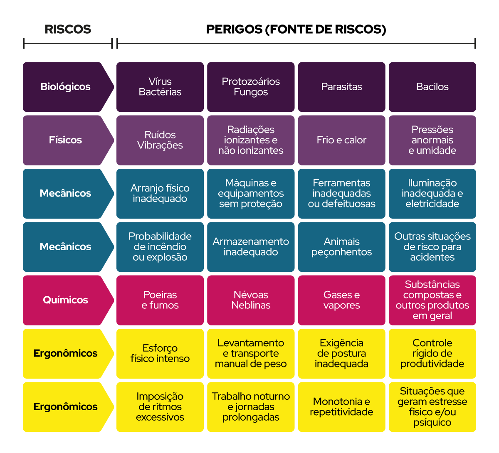 |
sim | Figura 1 – Riscos e Perigos (fonte de riscos) | Riscos e Perigos (fonte de riscos) | Identificar diferentes tipos de riscos ocupacionais e suas fontes de perigo, relacionando cada categoria aos fatores que podem comprometer a segurança, a saúde e a organização do ambiente de trabalho. | Infográfico que relaciona diferentes tipos de riscos ocupacionais às suas fontes de perigo, organizadas por categorias como riscos biológicos, físicos, mecânicos, químicos e ergonômicos. |
Na parte superior da imagem, aparece a indicação “RISCOS” apontando para “PERIGOS (FONTE DE RISCOS)”. Na primeira linha, aparece “Riscos Biológicos”, associados a: “Vírus Bactérias”, “Protozoários Fungos”, “Parasitas” e “Bacilos”. Na segunda linha, aparece “Riscos Físicos”, associados a: “Ruídos Vibrações”, “Radiações ionizantes Radiações não ionizantes”, “Frio Calor” e “Pressões anormais Umidade”. Na terceira linha, aparece “Riscos Mecânicos”, associados a: “Arranjo físico inadequado”, “Máquinas/equipamentos sem proteção”, “Ferramentas inadequadas/defeituosas” e “Iluminação inadequada Eletricidade”. Na quarta linha, aparece novamente “Riscos Mecânicos”, associados a: “Probabilidade de incêndio/explosão”, “Armazenamento inadequado”, “Animais peçonhentos” e “Outras situações de risco para acidentes”. Na quinta linha, aparece “Riscos Químicos”, associados a: “Poeiras Fumos”, “Névoas Neblinas”, “Gases Vapores” e “Substâncias compostas/outros produtos em geral”. Na sexta linha, aparece “Riscos Ergonômicos”, associados a: “Esforço físico intenso”, “Levantamento e transporte manual de peso”, “Exigência de postura inadequada” e “Controle rígido de produtividade”. Na sétima linha, aparece novamente “Riscos Ergonômicos”, associados a: “Imposição de ritmos excessivos”, “Trabalho noturno/jornadas prolongadas”, “Monotonia e repetitividade” e “Situações que geram estresse físico e/ou psíquico”. |
Melo; Luiz, 2021. |
| 1-1-003 | sim | (vazio) | Pistas sobre os níveis de biossegurança | Identificar os níveis de contenção em biossegurança, reconhecendo exemplos de contenção primária e secundária em situações simuladas de investigação. | Áudio com som ambiente e fala de Cristiano orientando o(a) agente a observar pistas sobre contenção primária e secundária. |
Cristiano: Agente, você chegou em um ponto crucial: os níveis de biossegurança. Preste bastante atenção ao que vou te dizer: "A contenção é estruturada em dois níveis: primária e secundária.” Há alguns exemplos deles aqui na sala, você só precisa encontrá-los. |
EducAção, 2026. | |
| 1-1-004 | sim | Figura 2 – Contenção Primária | Contenção primária em ambiente laboratorial | Identificar exemplos de contenção primária em biossegurança, reconhecendo práticas e equipamentos utilizados para reduzir a exposição direta a agentes biológicos durante atividades laboratoriais. | Imagem com o título “Contenção primária”. Duas pessoas com equipamentos de proteção individual manipulam materiais em uma bancada de laboratório, ao lado de um microscópio. | “Contenção Primária” |
Galindo, 2026. | |
| 1-1-005 | sim | Figura 3 – Contenção Secundária | Contenção secundária: barreiras estruturais e de contenção | Relacionar a contenção secundária às barreiras estruturais e aos sistemas de controle ambiental que contribuem para a segurança institucional em ambientes laboratoriais. | Imagem com o título “Contenção secundária”. Duas pessoas com EPIs trabalham em cabines de biossegurança. Na parte inferior, há ícones de HVAC e ventilação, controle de acesso, cabine de biossegurança, autoclave e porta vedada. | Na parte superior da imagem, aparece o título “CONTENÇÃO SECUNDÁRIA”. Logo abaixo, há uma faixa com o subtítulo “BARREIRAS ESTRUTURAIS E DE CONTENÇÃO”. Na parte inferior, há cinco ícones acompanhados dos seguintes textos: “HVAC e Ventilação”, “Controle de acesso”, “Cabine de biossegurança”, “Autoclave” e “Porta Vedada”. |
Galindo, 2026. | |
| 1-1-006 |
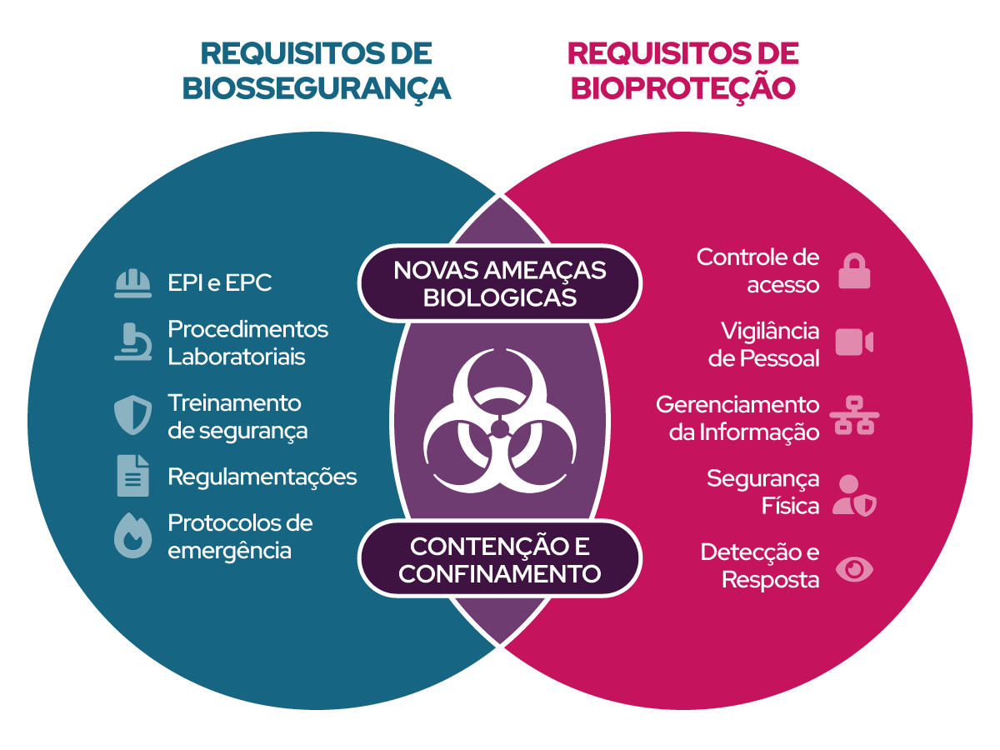 |
sim | Figura 4 – Requisitos de Biossegurança e Bioproteção | Requisitos de Biossegurança e Bioproteção | Comparar requisitos de biossegurança e bioproteção, identificando especificidades de cada campo. | Diagrama de dois círculos sobrepostos que compara requisitos de biossegurança e bioproteção, destacando elementos específicos de cada área e pontos comuns relacionados a novas ameaças biológicas, contenção e confinamento. |
Na parte superior esquerda, aparece o título “REQUISITOS DE BIOSSEGURANÇA”. Abaixo dele, em um círculo azul, estão listados:
Na parte superior direita, aparece o título “REQUISITOS DE BIOPROTEÇÃO”. Abaixo dele, em um círculo rosa, estão listados:
Na área central, onde os dois círculos se sobrepõem, aparecem os textos “NOVAS AMEAÇAS BIOLÓGICAS” e “CONTENÇÃO E CONFINAMENTO”, além do símbolo de risco biológico. |
Galindo, 2026. |
| 1-1-007 | sim | (vazio) | Imersão no módulo: a história como pista para a credencial | Compreender a importância histórica dos processos de biossegurança e bioproteção. | Áudio com som ambiente e voz de gravador. Cristiano orienta o(a) agente a conhecer a história para avançar até a obtenção da credencial. |
Cristiano: Espero que essa gravação te encontre a tempo da sua prova final. Para entender o que estamos fazendo aqui, é preciso conhecer a história, agente. Muitos acabam ignorando essa etapa tão importante para conseguir sua credencial. |
EducAção, 2026. | |
| 1-1-008 | sim | (vazio) | Controle de Saída: diferenciação entre biossegurança e bioproteção | Analisar um caso simulado para diferenciar biossegurança e bioproteção, aplicando os conceitos na avaliação de medidas institucionais voltadas à segurança do ambiente. | Áudio com som de rádio baixo, bip de crachá, teclado e porta metálica ao fundo. Cristiano orienta o(a) agente a diferenciar biossegurança e bioproteção para finalizar o registro de acesso. |
Cristiano: Agente, você chegou ao Controle de Saída. Aqui, não adianta repetir conceito: você precisa diferenciar biossegurança e bioproteção. Porque é assim que a Central avalia para implementar medidas que tornem o ambiente mais seguro. O relatório que está na sua frente foi marcado como “biossegurança”. Só que… alguém na equipe discorda. Se você confundir biossegurança com bioproteção, seu acesso não é registrado. Abra o dossiê do caso e finalize seu registro. |
EducAção, 2026. | |
| 1-2-001 | sim | (vazio) | Boas práticas: procedimento, habilitação e registro | Analisar a aplicação das Boas Práticas em ambiente laboratorial, relacionando procedimento definido, habilitação profissional e registro das etapas à identificação de possíveis não conformidades. | Áudio com ruído curto de arquivo sendo aberto e bip baixo. Evanira orienta o(a) agente a analisar as Boas Práticas, observando se o procedimento foi definido, executado por pessoa habilitada e registrado de forma adequada. |
Evanira: Se você já chegou até a parte de Boas Práticas, então está olhando para o mesmo ponto que chamou minha atenção quando revisei os registros do laboratório. O material que ficou na cabine não é o único problema. Em um ambiente como esse, qualquer atividade começa muito antes da manipulação: existe um procedimento definido, existe alguém habilitado para executá-lo e existe uma forma de registrar cada etapa do que foi feito. Enquanto você lê esta parte, tente perceber como essas três coisas deveriam aparecer juntas. Quando a rotina estabelecida é seguida, qualquer pessoa consegue reconstruir o caminho de um procedimento apenas olhando os registros e as regras que organizam o trabalho. Se uma dessas peças falta, pode surgir uma não conformidade que precisa ser esclarecida. Como sempre, contamos com você para entender o que aconteceu. Boa sorte, agente. |
EducAção, 2026. | |
| 1-2-002 | não | (vazio) | Níveis de contenção e boas práticas laboratoriais | Analisar a relação entre barreiras de contenção e boas práticas laboratoriais, diferenciando contenção primária e secundária e reconhecendo sua importância para a segurança do trabalhador, do ambiente e dos procedimentos realizados. | Áudio com chiado breve. Evanira orienta o(a) agente a não concluir a investigação apenas pela presença da cabine de segurança biológica, destacando a relação entre contenção primária, contenção secundária e boas práticas laboratoriais. |
Evanira: Antes de continuar, não tire conclusão apressada só porque o material estava dentro da cabine. Muita gente olha para uma cabine de segurança biológica e pensa imediatamente em proteção, como se isso bastasse para encerrar a questão. Não basta. A contenção é estruturada em dois níveis: primária e secundária. As barreiras primárias incluem os equipamentos de proteção coletiva, como as cabines de segurança biológica, e os equipamentos de proteção individual. São elas que atuam diretamente na contenção imediata do agente e na proteção do trabalhador. Já as barreiras secundárias pertencem ao próprio ambiente do laboratório — a ventilação, a infraestrutura, o desenho do espaço, tudo o que reforça a proteção quando a contenção imediata não é suficiente. Há exemplos disso aí na sala. Preste atenção a eles. E guarde o principal: barreira de contenção e boas práticas laboratoriais caminham juntas. Se o material ficou na cabine, ainda mais sem identificação, então as boas práticas laboratoriais não foram adotadas. Continue, agente. Esta parte pode não responder o caso inteiro, mas ajuda a eliminar algumas hipóteses — e, às vezes, é assim que uma investigação começa a andar. |
EducAção, 2026. | |
| 1-2-003 | sim | Figura 1 – Barreiras de contenção de um laboratório (primária) | Barreiras de contenção de um laboratório (primária) | Reconhecer as barreiras primárias em biossegurança, relacionando equipamentos de proteção coletiva e individual à contenção imediata do agente e à proteção do trabalhador durante atividades laboratoriais. | Imagem de pessoa com equipamento de proteção individual em uma cabine de segurança biológica. | (vazio) | Reis, 2026. | |
| 1-2-004 | sim | Figura 2 – Barreiras de contenção de um laboratório (secundária) | Barreiras de contenção de um laboratório (secundária) | Relacionar as barreiras secundárias ao ambiente laboratorial, reconhecendo a importância do design e das instalações na organização, contenção e segurança das atividades realizadas. | Imagem de bancada de laboratório com microscópio, frascos e outros materiais laboratoriais. | (vazio) | Reis, 2026. | |
| 1-2-005 | sim | Figura 3 – Barreiras de contenção de um laboratório (terciária) | Barreiras de contenção de um laboratório (terciária) | Reconhecer as barreiras terciárias em biossegurança, relacionando a estrutura do edifício às condições institucionais de contenção, proteção e organização segura dos ambientes laboratoriais. | Imagem de edifícios altos com fachadas de vidro. | (vazio) | Reis, 2026. | |
| 1-2-006 |
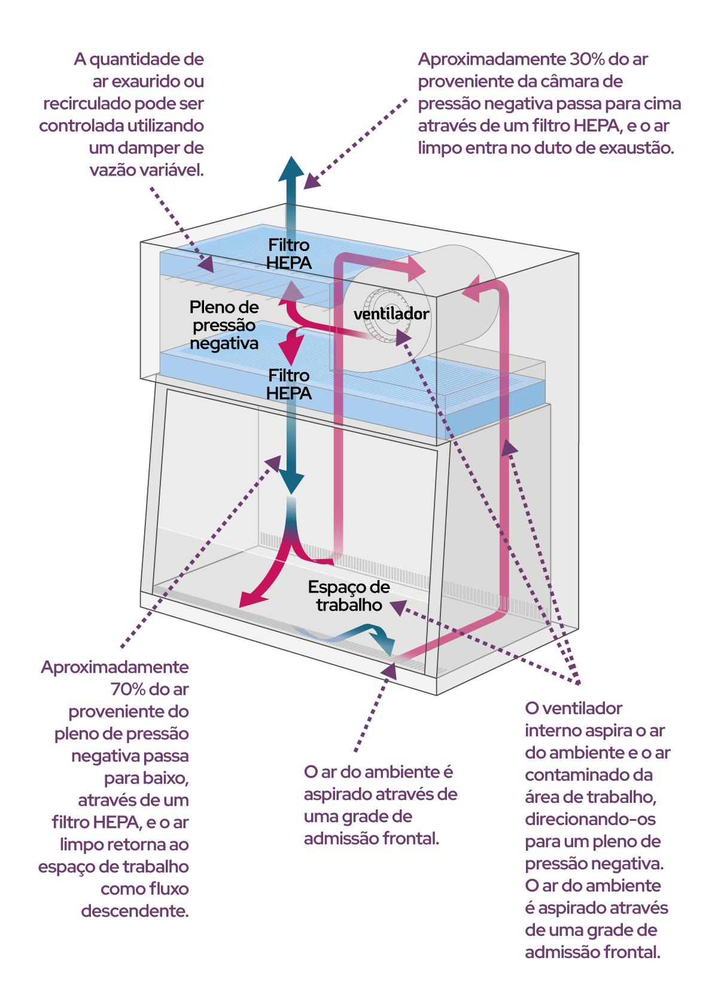 |
sim | Figura 4 – Cabines de Segurança Biológica de classe II | Cabines de Segurança Biológica de classe II | Analisar o funcionamento do fluxo de ar em uma cabine de segurança biológica, reconhecendo o papel dos filtros HEPA, do ventilador interno, do pleno de pressão negativa e da grade de admissão frontal na contenção e proteção do ambiente de trabalho. | Diagrama de uma cabine de segurança biológica com setas indicando o fluxo de ar, a entrada de ar pela grade frontal, a passagem por filtros HEPA e a atuação do ventilador interno. |
No centro da imagem, há uma representação da cabine de segurança biológica com as indicações “Filtro HEPA”, “Pleno de pressão negativa”, “Filtro HEPA”, “ventilador” e “Espaço de trabalho”. Setas coloridas mostram os caminhos do ar dentro da cabine. Na parte superior esquerda, aparece o texto: “A quantidade de ar exaurido ou recirculado pode ser controlada utilizando um damper de vazão variável”. Na parte superior direita, aparece o texto: “Aproximadamente 30% do ar proveniente da câmara de pressão negativa passa para cima através de um filtro HEPA, e o ar limpo entra no duto de exaustão”. Na parte inferior esquerda, aparece o texto: “Aproximadamente 70% do ar proveniente do pleno de pressão negativa passa para baixo, através de um filtro HEPA, e o ar limpo retorna ao espaço de trabalho como fluxo descendente”. Na parte inferior central, aparece o texto: “O ar do ambiente é aspirado através de uma grade de admissão frontal”. Na parte inferior direita, aparece o texto: “O ventilador interno aspira o ar do ambiente e o ar contaminado da área de trabalho, direcionando-os para um pleno de pressão negativa. O ar do ambiente é aspirado através de uma grade de admissão frontal”. |
WHO, 2020. |
| 1-2-007 | sim | (vazio) | Registro e acompanhamento de não conformidades | Avaliar a conduta adequada diante de não conformidades em ambiente laboratorial, considerando a necessidade de registro, acompanhamento e adoção de medidas para minimizar riscos. | Áudio com início de gravação e ruído distante de porta. Evanira alerta que, quando algo foge da rotina no laboratório, mesmo sem acidente evidente, é preciso observar sinais de não conformidade e verificar como registrá-los e acompanhá-los. |
Evanira: Quando alguma coisa foge da rotina em um laboratório, a pior escolha é agir como se nada tivesse acontecido. Mesmo quando não há um acidente evidente, qualquer situação que não possa ser explicada com clareza precisa ser observada com cuidado. Às vezes o que aparece primeiro é apenas um sinal discreto de que alguma etapa não foi concluída como deveria — um material sem identificação, um procedimento que não pode ser reconstituído, uma informação que não aparece onde deveria aparecer. É justamente nessas horas que o profissional precisa saber como agir. Por isso, enquanto você lê os documentos que deixei para você, preste atenção no que deve ser feito diante de uma não conformidade e em como essas situações precisam ser registradas e acompanhadas. Quando a rotina se rompe, não basta perceber que há algo errado. Também é preciso entender como o problema deve ser tratado para que seja minimizado o risco. Continue. Às vezes a forma como um profissional responde a uma ocorrência evidencia seu nível de capacitação e experiência na adoção de procedimentos diante das não conformidades encontradas. |
EducAção, 2026. | |
| 1-2-008 | sim | (vazio) | Qualidade, registros e correção de falhas | Analisar princípios e registros de qualidade em ambiente laboratorial, reconhecendo como a documentação, a tomada de decisão e os ciclos de correção contribuem para o tratamento de não conformidades. | Áudio com clique de gravação, som discreto de gaveta e papel sendo manuseado. Evanira orienta o(a) agente a procurar, nos documentos, registros que mostrem como o laboratório tomou decisões, analisou falhas e corrigiu não conformidades. |
Evanira: Agente, esta parte exige calma. Até aqui você viu o que ficou na cabine. Agora precisa olhar para o que deveria ter ficado nos documentos. Nesta sala, a qualidade não aparece como discurso. Ela aparece em princípios, em registros e no jeito como o laboratório reage quando alguma coisa foge do previsto. Vasculhe com atenção. Você vai encontrar um conjunto de princípios que mostra como a decisão é tomada sem improviso, e um ciclo que ajuda a transformar falha em análise, análise em correção, e correção em rotina outra vez. Não passe por isso como se fosse detalhe. Se o procedimento tivesse sido encerrado como deveria, a sequência do trabalho apareceria. Quando não aparece, o que sobra não é mistério. É não conformidade. Continue. As peças que faltam para fechar esta sala podem estar justamente no que a equipe deixou de registrar — ou deixou de corrigir. |
EducAção, 2026. | |
| 1-2-009 |
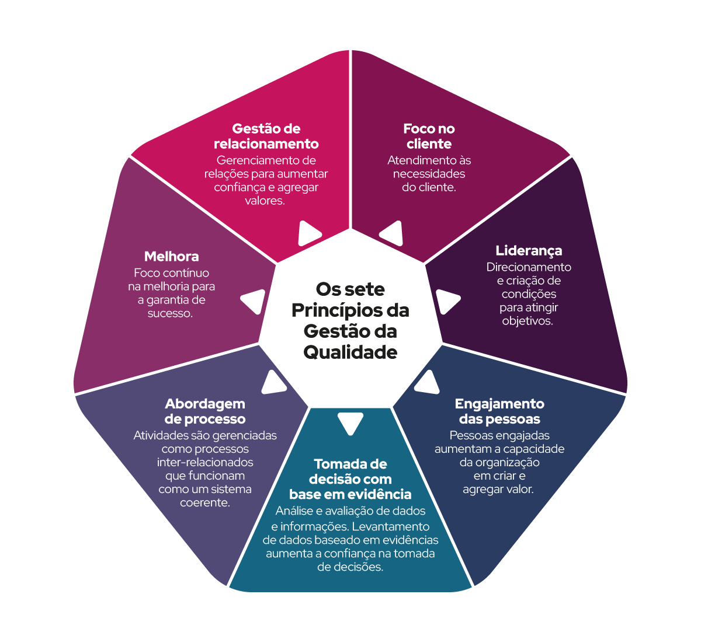 |
sim | Figura 5 – Os sete Princípios da Gestão da Qualidade | Sete princípios da gestão da qualidade | Analisar os sete princípios da gestão da qualidade, relacionando tomada de decisão baseada em evidências, abordagem de processo, liderança, melhoria, gestão de relacionamento, foco no cliente e engajamento das pessoas à organização segura e consistente. | Infográfico circular que apresenta os sete princípios da gestão da qualidade, organizados em segmentos ao redor de um título central. |
No centro da imagem, aparece o texto: “Os sete Princípios da Gestão da Qualidade”. Ao redor do centro, há sete segmentos coloridos organizados em ciclo:
|
Reis; Galindo, 2024. |
| 1-2-010 |
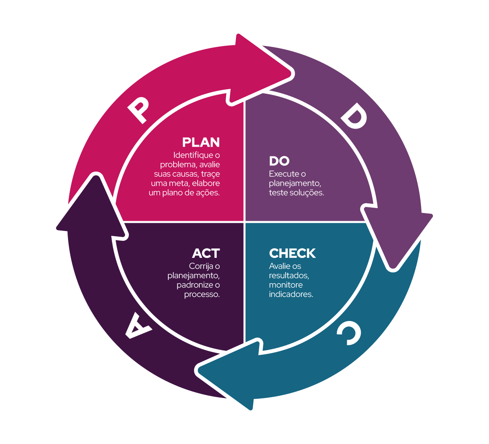 |
sim | Figura 6 – O Ciclo PDCA e suas diferentes etapas | O Ciclo PDCA e suas diferentes etapas | Analisar o Ciclo PDCA como ferramenta de melhoria contínua, relacionando suas etapas de planejamento, execução, verificação e ação corretiva ao acompanhamento e à padronização de processos em ambiente institucional. | Infográfico circular que apresenta o Ciclo PDCA, organizado em quatro etapas sequenciais: planejar, executar, verificar e agir. |
A imagem apresenta um ciclo circular com quatro setas:
|
Reis; Galindo, 2024. |
| 1-2-011 |
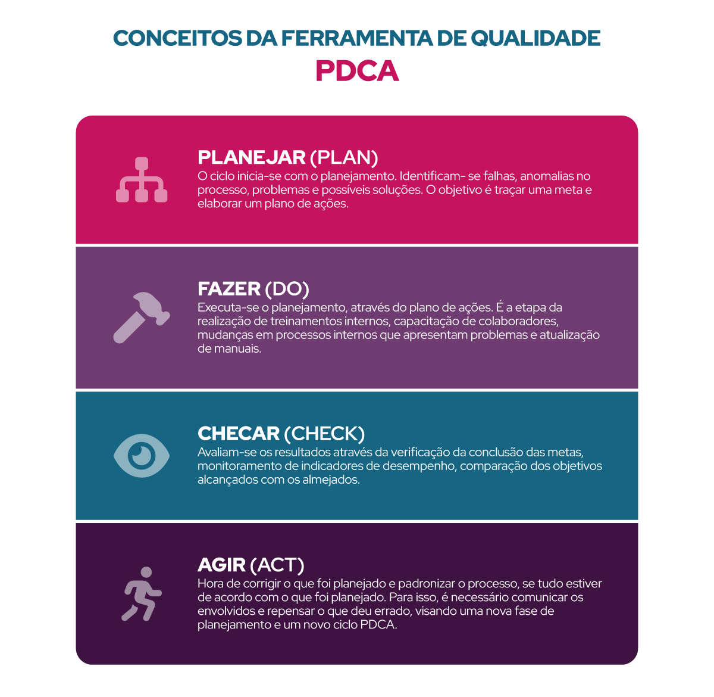 |
sim | Figura 7 – Conceitos da ferramenta de qualidade PDCA | Conceitos da ferramenta de qualidade PDCA | Compreender os conceitos da ferramenta de qualidade PDCA, identificando as etapas de planejamento, execução, verificação e ação corretiva como apoio à análise, correção e melhoria de processos institucionais. | Infográfico que apresenta os conceitos da ferramenta de qualidade PDCA, organizada em quatro etapas: planejar, fazer, checar e agir. |
Na parte superior da imagem, aparece o título “CONCEITOS DA FERRAMENTA DE QUALIDADE” e, logo abaixo, “PDCA”. A primeira faixa apresenta “PLANEJAR (PLAN)”, com o texto: “O ciclo inicia-se com o planejamento. Identificam-se falhas, anomalias no processo, problemas e possíveis soluções. O objetivo é traçar uma meta e elaborar um plano de ações.” A segunda faixa apresenta “FAZER (DO)”, com o texto: “Executa-se o planejamento, através do plano de ações. É a etapa da realização de treinamentos internos, capacitação de colaboradores, mudanças em processos internos que apresentam problemas e atualização de manuais.” A terceira faixa apresenta “CHECAR (CHECK)”, com o texto: “Avaliam-se os resultados através da verificação da conclusão das metas, monitoramento de indicadores de desempenho, comparação dos objetivos alcançados com os almejados.” A quarta faixa apresenta “AGIR (ACT)”, com o texto: “Hora de corrigir o que foi planejado e padronizar o processo, se tudo estiver de acordo com o que foi planejado. Para isso, é necessário comunicar os envolvidos e repensar o que deu errado, visando a uma nova fase de planejamento e um novo ciclo PDCA.” |
Johnson, 2016. |
| 1-2-012 | sim | (vazio) | Proteção do trabalhador e segurança da rotina laboratorial | Avaliar medidas de proteção do trabalhador em ambiente laboratorial, relacionando controle de acesso, capacitação, comunicação de ocorrências e orientações de segurança à redução de riscos na rotina de trabalho. | Áudio com início de gravação, som sutil de papelada sendo manuseada. Evanira orienta o(a) agente a observar se havia regras claras, acesso controlado, capacitação comprovada, orientações visíveis e comunicação imediata diante de ocorrências. |
Evanira: Se você chegou a esta última etapa, então já percebeu que a pergunta não termina no material que ficou dentro da cabine. Ela alcança todo o caminho que deveria proteger quem trabalha nesta sala. Em um laboratório, segurança não depende apenas de atenção individual. Depende de regra clara, acesso controlado, capacitação comprovada e comunicação imediata quando alguma coisa foge do previsto. É assim que se reduz risco antes que ele alcance o trabalhador. Enquanto você percorre estas últimas pistas, observe bem o que deveria estar garantido aqui: quem podia entrar, quem estava autorizado a executar a atividade, que orientações precisavam estar visíveis e a quem uma ocorrência teria de ser comunicada sem demora. Se essas partes se sustentam, a rotina se mantém segura. Quando falham juntas, o problema deixa de estar só no que foi encontrado e passa a atingir a própria proteção de quem entra depois. Você já tem o que precisa para fechar esta sala. Espero te ver em breve na próxima. |
EducAção, 2026. | |
| 1-2-013 | sim | Figura 8 – Controle de acesso por biometria em laboratório | Acesso controlado ao ambiente laboratorial | Reconhecer o acesso biométrico, a sinalização de risco biológico e a observação do ambiente interno como medidas de controle e proteção em áreas laboratoriais sensíveis. | Ilustração de uma entrada de laboratório com porta de acesso biométrico, painel de controle, sinalização de risco biológico e janela de observação para a área interna. | (vazio) | Reis, 2026. | |
| 1-2-014 |
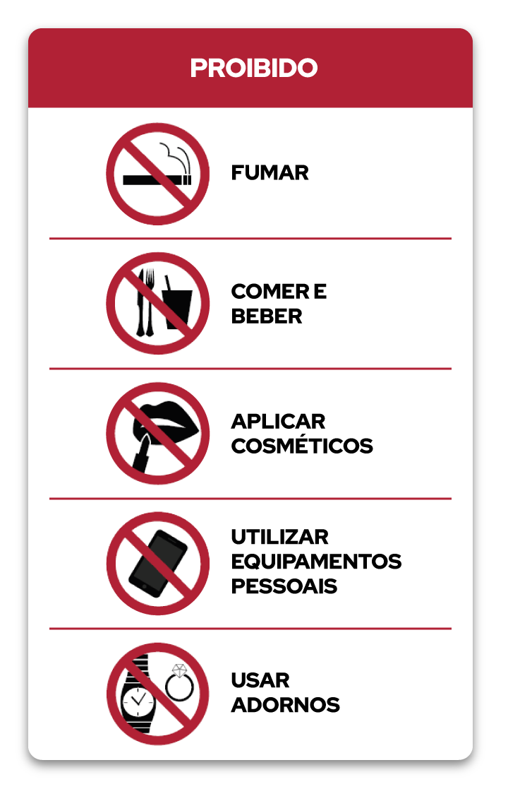 |
sim | Figura 9 – Sinalização para proibições que devem ser adotadas na área técnica do laboratório para minimização de riscos | Sinalização para proibições que devem ser adotadas na área técnica do laboratório para minimização de riscos | Identificar condutas proibidas em ambiente laboratorial, relacionando restrições de comportamento e uso de itens pessoais às boas práticas e à redução de riscos durante as atividades. | Placa de proibição com ícones indicando que não é permitido fumar, beber, comer, utilizar itens pessoais ou acessórios no ambiente. | A imagem apresenta o título “PROIBIDO”. Abaixo, há cinco itens acompanhados de ícones de proibição: “FUMAR”, “COMER E BEBER”, “APLICAR COSMÉTICOS”, “UTILIZAR EQUIPAMENTOS PESSOAIS” e “USAR ADORNOS”. |
Reis, 2026. |
| 1-2-015 |
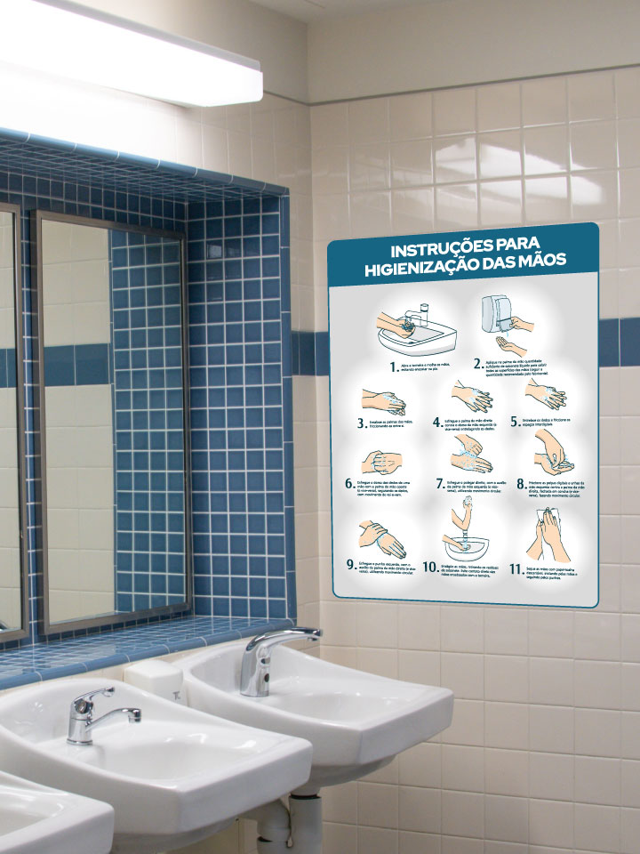 |
sim | Figura 10 – Lavatório com instruções higenização das mãos | Lavatório com instruções para higienização das mãos | Reconhecer a higienização das mãos como medida essencial de biossegurança, relacionando a presença de orientações visíveis no ambiente à prevenção de riscos e à adoção de boas práticas laboratoriais. | Imagem de lavatórios em ambiente institucional, com cartaz afixado na parede apresentando orientações ilustradas para higienização das mãos. | A imagem apresenta um cartaz com o título “INSTRUÇÕES PARA HIGIENIZAÇÃO DAS MÃOS”. Abaixo do título, há ilustrações numeradas que mostram etapas para a higienização das mãos. Os textos menores das etapas não estão legíveis na imagem. |
Reis, 2026. |
| 1-3-001 | sim | (vazio) | Imersão no módulo: investigação de não conformidades na remessa | Analisar possíveis não conformidades em uma remessa, relacionando a classificação do material, as exigências de transporte e o manejo adequado dos resíduos aos procedimentos de biossegurança. | Áudio com ruído leve de rádio interno e clique de gravação. Evanira orienta o(a) agente a investigar possíveis não conformidades relacionadas à classificação do material, ao transporte e ao descarte de resíduos. |
Evanira: Agente, uma remessa pode ser interrompida mesmo quando nada parece ter saído do controle. Nem toda não conformidade começa com um acidente. Às vezes, ela aparece quando a classificação do material não foi bem definida, quando as exigências do transporte não foram plenamente atendidas ou quando o procedimento foi encerrado sem o manejo correto dos resíduos gerados durante a preparação. Nesta sala, você precisa observar essas três possibilidades. Primeiro, verifique se o tipo de material foi compatível com a categoria atribuída a ele. Depois, examine se a preparação para o transporte seguiu as exigências previstas. Por fim, olhe com atenção para os resíduos deixados no processo, porque o encerramento de uma remessa segura deve estar associado ao descarte correto do que foi utilizado. O bloqueio começou na saída. Mas a resposta pode estar tanto no que seria enviado quanto no que permaneceu na sala. Boa sorte. |
EducAção, 2026. | |
| 1-3-002 | sim | (vazio) | Material biológico humano: antes, durante e depois do transporte | Analisar documentos normativos e operacionais relacionados ao material biológico humano, identificando critérios de classificação, preparação, registro e destinação adequada dos resíduos gerados no procedimento. | Áudio com leve ruído e som distante de ventilação. Evanira orienta o(a) agente a investigar uma remessa bloqueada, observando a classificação do material biológico humano, as exigências para transporte e a destinação do que foi usado na preparação. |
Evanira: Agente, quando uma remessa é interrompida antes da saída, a falha nem sempre está no transporte em si. Muitas vezes, ela começa antes: na forma como o material foi classificado, preparado e registrado. Nesta sala, a Central liberou três documentos que podem ajudar a reconstruir o procedimento. No terminal, você encontrará as definições da RDC 504/2021 para o transporte de material biológico humano, o fluxograma de classificação do material para transporte e um quadro-resumo com os critérios de documentação, embalagem e rotulagem das categorias A e B. Comece por eles. Veja como o material deveria ser enquadrado, quais exigências decorrem dessa classificação e o que precisaria estar corretamente preparado para que a remessa pudesse seguir. Mas não pare no que seria enviado. O procedimento só se sustenta por completo quando aquilo que foi usado para preparar o envio também recebe a destinação correta. Às vezes, o bloqueio aparece na saída, mas o problema começou no modo como a rotina foi encerrada. Compare os critérios, acompanhe a sequência do procedimento e observe o que ficou registrado. Para entender por que a sala foi bloqueada, você precisa olhar tanto para o que seria transportado quanto para o que a preparação desse transporte deixou para trás. |
EducAção, 2026. | |
| 1-3-003 |
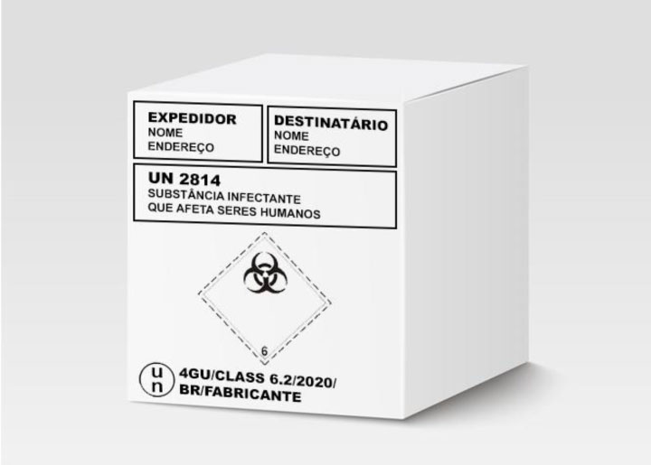 |
sim | Figura 1 – Identificação de embalagem externa para transporte de material biológico da categoria A, que afeta seres humanos | Embalagem para transporte de substância infectante A | Reconhecer os elementos de identificação, rotulagem e sinalização exigidos para o transporte de substâncias infectantes, relacionando-os à classificação do material e à segurança no transporte de material biológico. | Imagem de uma caixa branca de transporte com rótulos de identificação do expedidor, do destinatário e da substância infectante, além do símbolo de risco biológico. | Na parte frontal da caixa, há dois campos superiores. À esquerda, aparece “EXPEDIDOR”, seguido de “NOME” e “ENDEREÇO”. À direita, aparece “DESTINATÁRIO”, seguido de “NOME” e “ENDEREÇO”. Logo abaixo, há um campo com o texto “UN 2814 — SUBSTÂNCIA INFECTANTE QUE AFETA SERES HUMANOS”. No centro da embalagem, aparece o símbolo de risco biológico dentro de um losango tracejado, com o número “6” na parte inferior. Na parte inferior esquerda, aparece o símbolo “UN” dentro de um círculo. Ao lado, está escrito “4GU/CLASS 6.2/2020/BR/FABRICANTE”. |
Brasil, 2021b. |
| 1-3-004 |
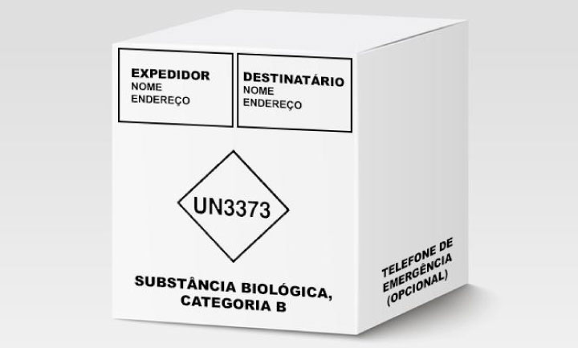 |
sim | Figura 2 – Identificação de embalagem externa para transporte de material biológico da categoria B, que afeta seres humanos | Embalagem para transporte de substância biológica categoria B | Reconhecer os elementos de identificação e rotulagem exigidos para o transporte de substâncias biológicas da categoria B, relacionando-os à classificação do material e à segurança no transporte. | Imagem de uma caixa branca de transporte com rótulos de identificação do expedidor, do destinatário e da substância biológica categoria B. | Na parte frontal da caixa, há dois campos superiores. À esquerda, aparece “EXPEDIDOR”, seguido de “NOME” e “ENDEREÇO”. À direita, aparece “DESTINATÁRIO”, seguido de “NOME” e “ENDEREÇO”. No centro da caixa, há um losango com o texto “UN3373”. Na parte inferior frontal, aparece “SUBSTÂNCIA BIOLÓGICA, CATEGORIA B”. Na lateral direita da caixa, aparece “TELEFONE DE EMERGÊNCIA (OPCIONAL)”. |
Brasil, 2021b. |
| 1-3-005 |

|
sim | Figura 3 – Fluxograma de classificação do material biológico para o transporte | Fluxograma de classificação do material biológico para o transporte | Classificar materiais e substâncias para transporte, analisando critérios de risco biológico, possibilidades de isenção e enquadramento em categorias relacionadas ao transporte de material biológico humano. | Fluxograma com perguntas sequenciais para classificar materiais ou substâncias para transporte, indicando diferentes encaminhamentos conforme as respostas “sim” ou “não”. |
No lado esquerdo da imagem, há três caixas azuis com perguntas. A primeira pergunta é: “O material ou substância é um dos seguintes?”. Em seguida, aparecem os itens: “Estéril (livre de agentes biológicos)”, “Neutralizado/inativado”, “Amostras ambientais (por exemplo, alimentos ou água)”, “Produto para transplante/transfusão”, “Mancha de sangue seco” e “Produto biológico regulamentado”. A resposta “SIM” direciona para “Isenções”, com a explicação: “O material/substância não está sujeito a nenhuma regulamentação de transporte (a menos que seja transportado juntamente com outras mercadorias perigosas).” A resposta “NÃO” leva à segunda caixa, com a pergunta: “O material/substância contém ou pode presumivelmente conter um agente biológico capaz de causar deficiência grave ou doença fatal ou com risco de vida em humanos ou animais expostos?”. A resposta “SIM” direciona para “Substância infecciosa de categoria A”, com os exemplos: “UN2814 - Substância infecciosa que afeta humanos” e “UN2900 - Substância infecciosa que afeta apenas animais”. A resposta “NÃO” leva à terceira caixa, com a pergunta: “O material/substância tem apenas uma probabilidade mínima de que agentes biológicos estejam presentes nele ou contém agentes biológicos que provavelmente não causam doenças em humanos/animais expostos?”. A resposta “SIM” direciona para “Amostra humana/animal isenta”, com a orientação: “Aplicar o sistema básico de embalagem tripla”. Também aparece o exemplo: “UN3245 - Microrganismos geneticamente modificados ou organismos geneticamente modificados”. A resposta “NÃO” direciona para “Substância infecciosa da categoria B”, com os exemplos: “UN3373 - Substância biológica da categoria B” e “UN3291 - Resíduos biomédicos, não especificados de outra forma OU resíduos clínicos, não especificados, não especificados de outra forma OU resíduos médicos, não especificados de outra forma OU resíduos médicos regulamentados, não especificados de outra forma”. |
Opas, 2021. |
| 1-3-006 |
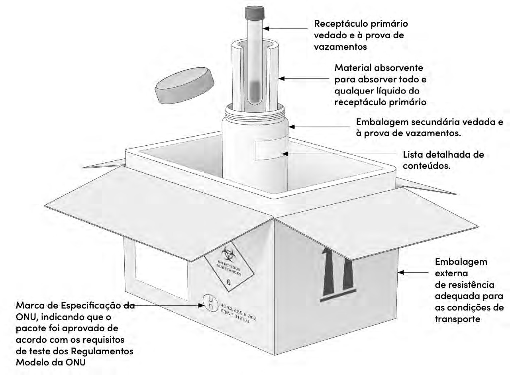 |
sim | Figura 4 – Modelo de embalagem tripla utilizada no transporte de substâncias infecciosas | Modelo de embalagem tripla utilizada no transporte de substâncias infecciosas | Identificar os componentes da embalagem tripla para transporte de material biológico, relacionando receptáculo primário, embalagem secundária, material absorvente, lista de conteúdos e embalagem externa às exigências de segurança no transporte. | Esquema visual de uma embalagem tripla para transporte de material biológico, com receptáculo primário, material absorvente, embalagem secundária e embalagem externa identificada. | A imagem apresenta uma embalagem externa aberta contendo um sistema de embalagem tripla. No interior, aparece um tubo identificado como “Receptáculo primário vedado e à prova de vazamentos”. Ao redor do receptáculo, há a indicação “Material absorvente para absorver todo e qualquer líquido do receptáculo primário”. Abaixo, aparece “Embalagem secundária vedada e à prova de vazamentos” e “Lista detalhada de conteúdos”. Na parte externa da caixa, há a indicação “Embalagem externa de resistência adequada para as condições de transporte”. Na parte inferior esquerda, aparece o texto: “Marca de especificação da ONU, indicando que o pacote foi aprovado de acordo com os requisitos de teste dos Regulamentos Modelo da ONU”. |
Opas, 2021. |
| 1-3-007 | sim | (vazio) | Gerenciamento de resíduos após a preparação da remessa | Analisar, com base na RDC 222/2018, os critérios de classificação, identificação, separação e acondicionamento dos resíduos de serviços de saúde gerados durante a preparação de uma remessa. | Áudio com clique inicial, zumbido baixo de ventilação e voz próxima. Evanira orienta o(a) agente a consultar a RDC 222/2018 para verificar a classificação, identificação, separação e acondicionamento dos resíduos gerados na preparação da remessa. |
Evanira: Até aqui a suspeita estava concentrada no envio do material, agora preciso que você olhe para o que ficou na sala depois da preparação da remessa. Em biossegurança, encerrar um procedimento não significa apenas concluir o transporte. Significa também garantir que todos os resíduos gerados tenham sido classificados e manejados corretamente. A central liberou mais alguns documentos. Alguns mostram como a RDC 222/2018 organiza os resíduos de serviços de saúde, como esses resíduos são classificados e quais etapas devem ser seguidas no gerenciamento. Observe com atenção em que grupo cada resíduo se enquadra e de que forma ele deve ser separado e acondicionado no momento em que é gerado. Às vezes, a falha não está no que será enviado, mas no que foi descartado de forma inadequada durante a preparação. Siga esse percurso com cuidado. Para entender por que a sala foi bloqueada, você precisará olhar não apenas para o volume de resíduos, mas também para a forma como eles foram identificados, separados e acondicionados. |
EducAção, 2026. | |
| 1-3-008 |
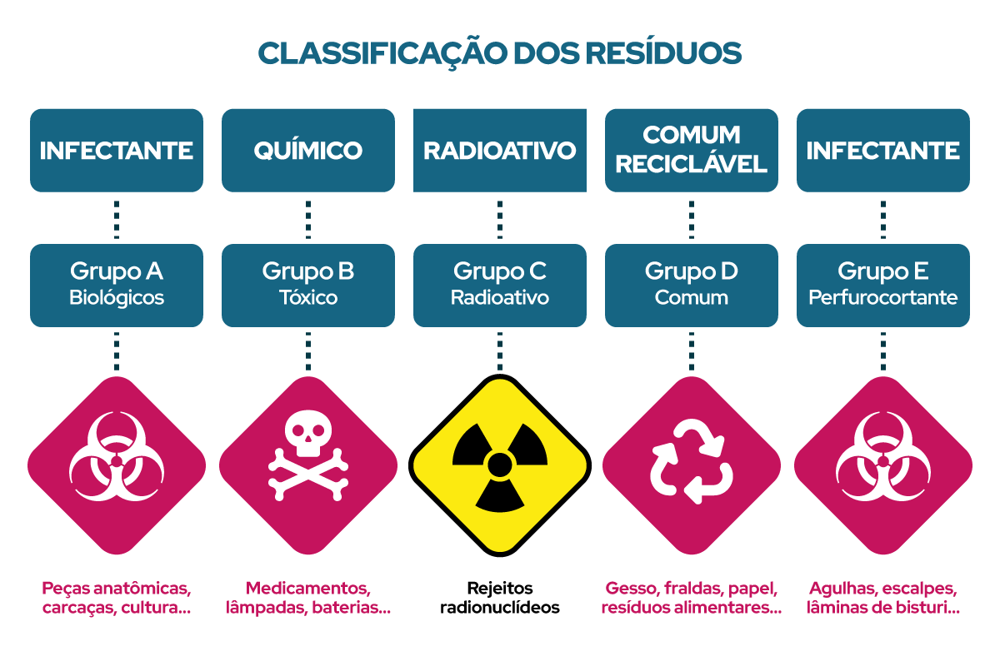 |
sim | Figura 5 – Classificação dos Resíduos dos Serviços de Saúde, segundo a RDC 222/2018 | Classificação dos Resíduos dos Serviços de Saúde, segundo a RDC 222/2018 | Identificar os grupos de resíduos de serviços de saúde, reconhecendo suas classificações e símbolos de risco. | Infográfico sobre a classificação dos resíduos de serviços de saúde, organizado em cinco grupos: biológicos, tóxicos, radioativos, comuns e perfurocortantes. | Na parte superior da imagem, aparece o título “CLASSIFICAÇÃO DOS RESÍDUOS”. Abaixo, há cinco colunas. A primeira coluna apresenta “INFECTANTE”, “Grupo A — Biológicos”, o símbolo de risco biológico e os exemplos “Peças anatômicas, carcaças, cultura...”. A segunda coluna apresenta “QUÍMICO”, “Grupo B — Tóxico”, o símbolo de caveira e ossos cruzados e os exemplos “Medicamentos, lâmpadas, baterias...”. A terceira coluna apresenta “RADIOATIVO”, “Grupo C — Radioativo”, o símbolo de radiação e o exemplo “Rejeitos radionuclídeos”. A quarta coluna apresenta “COMUM RECICLÁVEL”, “Grupo D — Comum”, o símbolo de reciclagem e os exemplos “Gesso, fraldas, papel, resíduos alimentares...”. A quinta coluna apresenta “INFECTANTE”, “Grupo E — Perfurocortante”, o símbolo de risco biológico e os exemplos “Agulhas, escalpes, lâminas de bisturi...”. |
Reis; Galindo, 2025. |
| 1-3-009 |
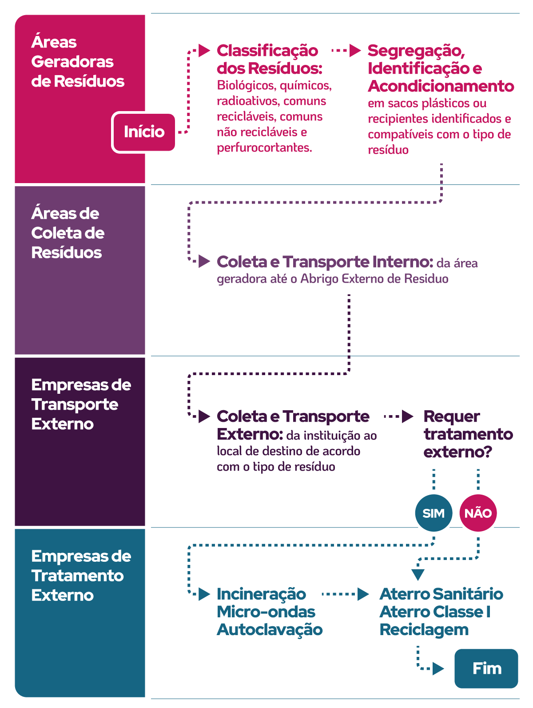 |
sim | Figura 6 – Etapas do manejo dos RSS, de acordo com a RDC nº 222/2018 | Etapas do manejo dos RSS, de acordo com a RDC nº 222/2018 | Analisar o fluxo de gerenciamento dos resíduos de serviços de saúde, reconhecendo as etapas de classificação, segregação, identificação, acondicionamento, coleta, transporte, tratamento e destinação final. | Fluxograma sobre o gerenciamento dos resíduos de serviços de saúde, desde as áreas geradoras até as etapas de coleta, transporte, tratamento e destinação final. | Na lateral esquerda da imagem, há quatro faixas que organizam o fluxo por responsáveis ou etapas: “Áreas Geradoras de Resíduos”, “Áreas de Coleta de Resíduos”, “Empresas de Transporte Externo” e “Empresas de Tratamento Externo”. O fluxo começa com “Início” e segue para “Classificação dos Resíduos: biológicos, químicos, radioativos, comuns recicláveis, comuns não recicláveis e perfurocortantes”. Em seguida, aparece “Segregação, Identificação e Acondicionamento em sacos plásticos ou recipientes identificados e compatíveis com o tipo de resíduo”. Depois, o fluxo segue para “Coleta e Transporte Interno: da área geradora até o Abrigo Externo de Resíduo”. Na etapa seguinte, aparece “Coleta e Transporte Externo: da instituição ao local de destino de acordo com o tipo de resíduo”. O fluxograma apresenta a pergunta “Requer tratamento externo?”. A resposta “SIM” direciona para as opções “Incineração”, “Micro-ondas” e “Autoclavagem”. A resposta “NÃO” direciona para “Aterro Sanitário”, “Aterro Classe I” e “Reciclagem”. O fluxo termina em “Fim”. |
Brasil, 2022. |
| 1-3-010 |
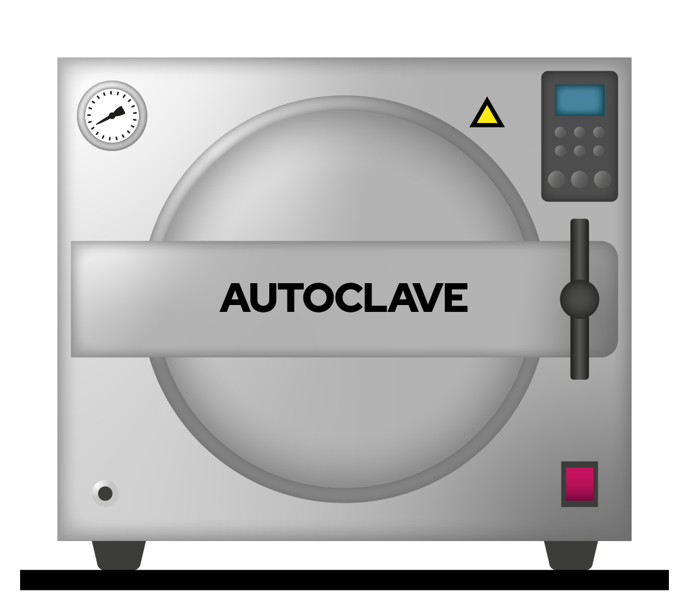 |
sim | Figura 7 – Autoclave utilizada para tratamento de Resíduo de Serviço de Saúde | Autoclave para tratamento de resíduos | Reconhecer a autoclave como equipamento utilizado no tratamento de resíduos e materiais, relacionando seu uso aos procedimentos de biossegurança e ao gerenciamento adequado de resíduos. | Ilustração de uma autoclave cinza, com painel de controle, manômetro e triângulo amarelo. | No centro do equipamento, aparece a palavra “AUTOCLAVE”. |
Imagem baseada no conteúdo dos autores da aula. |
| 2-1-001 | sim | (vazio) | Avaliação de risco antes da liberação do processo | Analisar uma avaliação de risco em ambiente laboratorial, identificando se as informações sobre atividade, equipe, condições de trabalho, barreiras de contenção e medidas de controle sustentam a liberação segura do processo. | Áudio com ruído curto de arquivo sendo aberto e bip baixo. Cristiano informa que a Sala 4 segue bloqueada por fragilidades na avaliação de risco antes da liberação do processo. |
Cristiano: Se você está ouvindo esta gravação, então a Sala 4 continua parada no mesmo ponto. O procedimento chegou até a validação, mas alguma coisa na avaliação de risco fez o responsável técnico interromper o processo antes da liberação. Quando isso acontece, quase nunca é por causa de um erro identificável. O mais comum é que a análise pareça suficiente à primeira leitura e, ainda assim, não aguente um exame mais atento. Foi essa a impressão que ficou aqui. Há elementos registrados, mas eles não bastam para mostrar que a atividade foi pensada até o fim. Talvez o problema tenha começado cedo, ainda no momento em que era preciso reunir as informações que dariam base à análise. Porque, sem entender com clareza quem executaria essa atividade, em que ambiente ela ocorreria, quais eram as condições reais de trabalho, que barreiras de contenção estavam disponíveis e se a equipe tinha preparo para sustentar o que estava sendo proposto, todo o resto fica suscetível a erros. E, quando isso acontece, já não se sabe ao certo se o risco foi realmente dimensionado, se as consequências possíveis foram levadas a sério, se as medidas previstas seriam suficientes ou se apenas se presumiu que tudo ficaria sob controle. É isso que você precisa observar nesta sala. Não basta localizar uma informação ausente ou um detalhe mal descrito. O que está em jogo aqui é o ponto em que a avaliação deixou de acompanhar a própria atividade que pretendia tornar segura. |
EducAção, 2026. | |
| 2-1-002 |
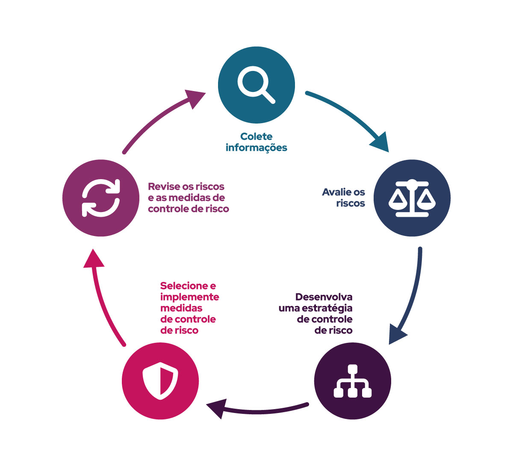 |
não | Figura 1 – Ciclo de avaliação de risco | Etapas da avaliação de risco | Analisar as etapas da avaliação de risco, relacionando coleta de informações, avaliação, definição de estratégias, implementação de medidas de controle e revisão contínua à tomada de decisão em biossegurança. | Infográfico circular que apresenta etapas sequenciais da avaliação de risco, desde a coleta de informações até a revisão dos riscos e das medidas de controle. |
O infográfico apresenta um ciclo com cinco etapas:
|
Opas, 2021. |
| 2-1-003 | sim | (vazio) | Percurso da análise de risco | Avaliar o percurso da análise de risco, verificando se a identificação, a estimativa de probabilidade e consequências, a definição de controles e a reavaliação foram conduzidas de forma consistente. | Áudio com ruído curto de arquivo sendo aberto e bip baixo. Cristiano orienta o(a) agente a revisar o percurso da análise, observando se probabilidade, consequências, controles e reavaliação foram considerados. |
Cristiano: Você viu isso, agente? Vale a pena voltar um instante e acompanhar esse percurso com mais atenção, porque ele mostra o caminho que a análise deveria ter seguido para se sustentar. Primeiro, seria preciso entender o que realmente entrou nessa avaliação. Depois, ver se o risco foi de fato analisado, e não apenas presumido. A probabilidade e as consequências chegaram a ser consideradas com o peso necessário? A partir daí, houve uma estratégia de controle compatível com o que foi identificado? E, mais adiante, alguém retomou essa análise para verificar se ela ainda fazia sentido? Talvez a falha desta sala não esteja em um ponto isolado, mas no modo como esse percurso foi conduzido. |
EducAção, 2026. | |
| 2-1-004 | sim | (vazio) | Atividades realizadas pelo laboratório | Identificar as atividades realizadas pelo laboratório, relacionando-as aos procedimentos, materiais e equipamentos utilizados na rotina laboratorial. | Ícone de materiais laboratoriais, como tubos, frasco e microscópio, sobre fundo azul. | (vazio) | Reis; Galindo, 2026. Adaptado de OPAS, 2021. | |
| 2-1-005 | sim | (vazio) | Prevenção e tratamento contra agentes biológicos | Verificar a disponibilidade de medidas de prevenção e/ou tratamento relacionadas aos agentes biológicos manipulados, considerando sua importância na avaliação de risco e na proteção dos trabalhadores. | Ícone de medicamentos e frasco com símbolo de saúde, sobre fundo roxo. | (vazio) | Reis; Galindo, 2026. Adaptado de OPAS, 2021. | |
| 2-1-006 | sim | (vazio) | Potencial zoonótico do agente biológico | Identificar se o agente biológico apresenta potencial zoonótico, considerando essa informação na avaliação de risco e na definição de medidas de controle em ambiente laboratorial. | Ícone de um morcego e um rato, em branco, sobre fundo roxo. | (vazio) | Reis; Galindo, 2026. Adaptado de OPAS, 2021. | |
| 2-1-007 | sim | (vazio) | Capacitação da equipe para a atividade | Verificar se a equipe está treinada para realizar a atividade, considerando a capacitação como critério para a avaliação de risco e para a execução segura dos procedimentos laboratoriais. | Ícone de grupo de pessoas, em branco, sobre fundo rosa. | (vazio) | Reis; Galindo, 2026. Adaptado de OPAS, 2021. | |
| 2-1-008 | sim | (vazio) | Estabilidade do agente biológico | Avaliar a estabilidade do agente biológico no laboratório e no ambiente externo, considerando essa informação na análise de risco e na definição de medidas de controle adequadas. | Ícone de microrganismos, em branco, sobre fundo roxo. | (vazio) | Reis; Galindo, 2026. Adaptado de OPAS, 2021. | |
| 2-1-009 | sim | (vazio) | Susceptibilidade à infecção pelo agente biológico | Identificar a existência de pessoas com maior susceptibilidade à infecção pelo agente biológico, considerando essa informação na avaliação de risco e na definição de medidas de proteção adequadas. | Ícone de uma pessoa expelindo partículas pela boca, em branco, sobre fundo roxo. | (vazio) | Reis; Galindo, 2026. Adaptado de OPAS, 2021. | |
| 2-1-010 | sim | (vazio) | Volume de trabalho no laboratório | Avaliar o volume de trabalho no laboratório, considerando sua relação com a organização das atividades, a capacidade operacional da equipe e a análise de risco dos procedimentos realizados. | Ícone de maleta e relógio, em branco, sobre fundo azul. | (vazio) | Reis; Galindo, 2026. Adaptado de OPAS, 2021. | |
| 2-1-011 | sim | (vazio) | Agentes biológicos manipulados | Identificar os agentes biológicos manipulados e suas concentrações, considerando essas informações na avaliação de risco e na definição de medidas de controle para a atividade laboratorial. | Ícone de microrganismos, em branco, sobre fundo azul. | (vazio) | Reis; Galindo, 2026. Adaptado de OPAS, 2021. | |
| 2-1-012 | sim | (vazio) | Infraestrutura e contenção do agente biológico | Avaliar se a infraestrutura de equipamentos e do edifício pode interferir na contenção do agente biológico, considerando essa informação na análise de risco e na definição de medidas de controle. | Ícone de edifício e escudo, em branco, sobre fundo roxo. | (vazio) | Reis; Galindo, 2026. Adaptado de OPAS, 2021. | |
| 2-1-013 | sim | (vazio) | Formas de exposição ou liberação | Identificar formas pelas quais uma exposição ou liberação pode ocorrer em atividades laboratoriais, considerando essa análise na avaliação de risco e na definição de medidas de controle. | Ícone branco de frasco de laboratório quebrado, com gotas abaixo, sobre fundo azul. | (vazio) | Reis; Galindo, 2026. Adaptado de OPAS, 2021. | |
| 2-1-014 | sim | (vazio) | Risco inicial geral das atividades | Avaliar o risco inicial geral das atividades laboratoriais, considerando essa análise como etapa para definir medidas de controle e orientar a continuidade segura do trabalho. | Ícone branco de uma bomba sobre fundo roxo. | (vazio) | Reis; Galindo, 2026. Adaptado de OPAS, 2021. | |
| 2-1-015 | sim | (vazio) | Probabilidade de exposição ou liberação | Avaliar a probabilidade de ocorrer uma exposição ou liberação em atividades laboratoriais, considerando essa informação na análise de risco e na definição de medidas de controle. | Ícone branco de gráfico de linha e lupa com barras, sobre fundo roxo. | (vazio) | Reis; Galindo, 2026. Adaptado de OPAS, 2021. | |
| 2-1-016 |
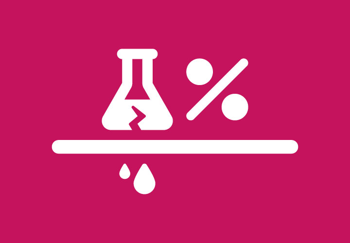 |
sim | (vazio) | Concentração de material biológico | Identificar informações relacionadas à concentração de materiais ou agentes biológicos, considerando sua importância para a avaliação de risco e a definição de medidas de controle em atividades laboratoriais. | Ícone branco de frasco de laboratório com símbolo de porcentagem e gotas abaixo, sobre fundo rosa. | (vazio) | Reis; Galindo, 2026. Adaptado de OPAS, 2021. |
| 2-1-017 |
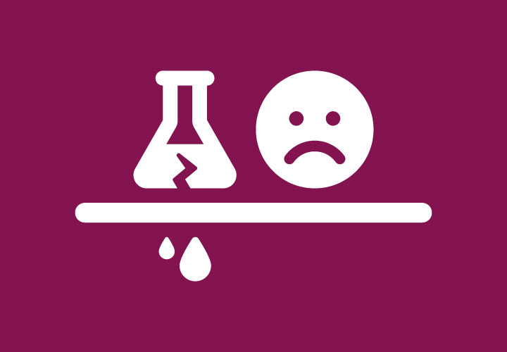 |
sim | (vazio) | Consequências de exposição ou liberação | Analisar as possíveis consequências de uma exposição ou liberação em atividades laboratoriais, considerando seus impactos para trabalhadores, comunidade, ambiente e definição de medidas de controle. | Ícone branco de frasco de laboratório com rachadura, gotas abaixo e rosto triste, sobre fundo roxo. | (vazio) | Reis; Galindo, 2026. Adaptado de OPAS, 2021. |
| 2-1-018 | sim | (vazio) | Riscos inaceitáveis | Identificar riscos inaceitáveis em atividades laboratoriais, reconhecendo situações que exigem controle imediato ou interrupção do trabalho antes da continuidade do procedimento. | Ícone branco de recipiente com símbolo de caveira e ossos cruzados, sobre fundo roxo. | (vazio) | Reis; Galindo, 2026. Adaptado de OPAS, 2021. | |
| 2-1-019 |
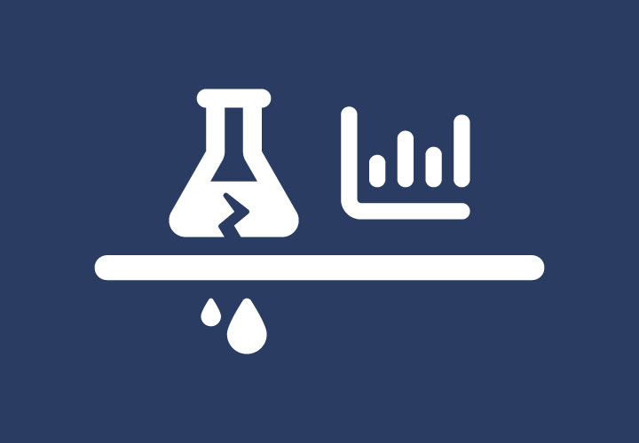 |
sim | (vazio) | Material biológico e indicadores | Analisar quais informações ou fatores mais influenciam as consequências de uma atividade laboratorial, considerando sua relevância para a avaliação de risco e a definição de medidas de controle. | Ícone branco de frasco de laboratório com gotas abaixo e gráfico de barras, sobre fundo azul. | (vazio) | Reis; Galindo, 2026. Adaptado de OPAS, 2021. |
| 2-1-020 | sim | (vazio) | Ícone CIBio | Avaliar se riscos inaceitáveis podem ser controlados antes da continuidade do trabalho, reconhecendo quando uma atividade deve ser interrompida por não apresentar condições seguras de execução. | Ícone branco de um cubo com representação estilizada de agente biológico em seu interior, sobre fundo azul. | (vazio) | Reis; Galindo, 2026. Adaptado de OPAS, 2021. | |
| 2-1-021 | sim | (vazio) | Condição segura para material biológico | Reconhecer condições adequadas de manejo de material biológico, relacionando-as à prevenção de riscos e à adoção de procedimentos seguros em ambiente laboratorial. | Ícone branco de frasco de laboratório com gotas abaixo e rosto sorridente com gota de suor, sobre fundo roxo. | (vazio) | Reis; Galindo, 2026. Adaptado de OPAS, 2021. | |
| 2-1-022 | sim | (vazio) | Recursos disponíveis | Refletir sobre a necessidade de verificar os recursos disponíveis para a implementação das medidas de controle de risco, considerando sua adequação às necessidades da atividade laboratorial e às condições de segurança do ambiente. | Imagem de pessoa com equipamento de proteção individual em uma cabine de segurança biológica, segurando um pipetador. | (vazio) | Reis; Galindo, 2026. Adaptado de OPAS, 2021. | |
| 2-1-023 | sim | (vazio) | Recursos para medidas de controle de risco | Reconhecer que a efetividade das medidas de controle de risco depende da disponibilidade de recursos suficientes para sua implementação e manutenção na rotina laboratorial. | Imagem de duas pessoas com jaleco, máscara, touca e luvas em um laboratório. À esquerda, uma pessoa em pé segura uma prancheta e escreve; ao centro, outra pessoa está sentada diante de uma bancada com microscópio, folhas e tubos de ensaio. | (vazio) | Reis; Galindo, 2026. Adaptado de OPAS, 2021. | |
| 2-1-024 | sim | (vazio) | Estratégias de controle de risco aplicáveis aos recursos disponíveis | Analisar os critérios que orientam a escolha de estratégias de controle de risco, considerando os recursos disponíveis, sua aplicabilidade, viabilidade e adequação às condições da atividade laboratorial. | Imagem de pessoa com traje de proteção em ambiente laboratorial. À direita, a pessoa segura uma embalagem plástica com material em seu interior, diante de equipamento de laboratório. | (vazio) | Reis; Galindo, 2026. Adaptado de OPAS, 2021. | |
| 2-1-025 | sim | (vazio) | Efetividade das estratégias de controle propostas | Reconhecer que a definição de estratégias de controle de risco depende de sua efetividade, sustentabilidade e possibilidade de aplicação no contexto local e nas condições reais da atividade laboratorial. | Imagem de pessoa com traje de proteção, máscara, óculos e luvas em ambiente escuro. A pessoa está agachada e segura um tubo de coleta e um cotonete. | (vazio) | Reis; Galindo, 2026. Adaptado de OPAS, 2021. | |
| 2-1-026 |
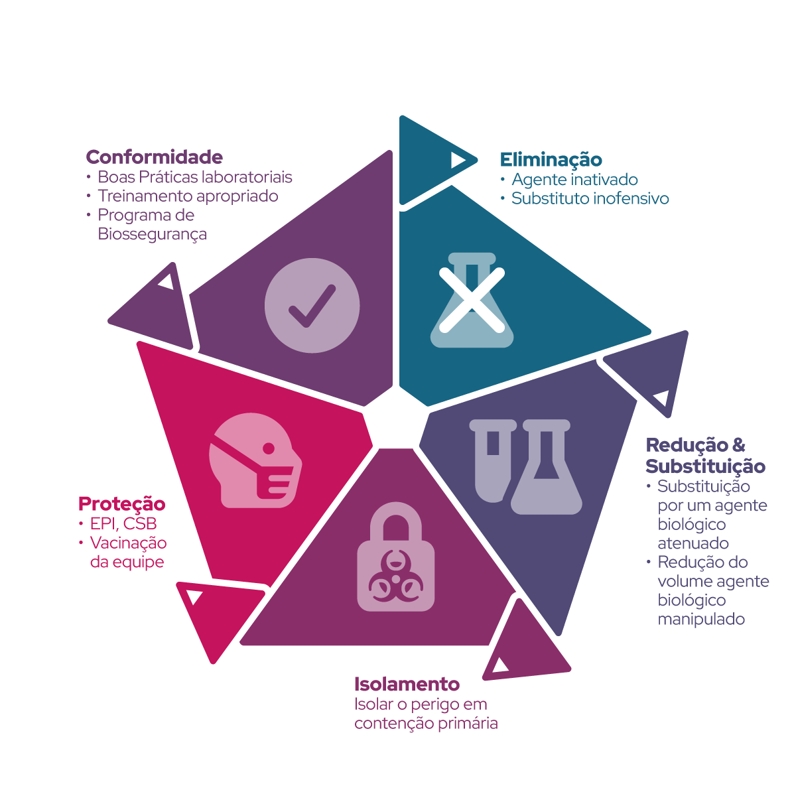 |
sim | Figura 2 – Estratégia de redução de risco | Medidas de controle para risco biológico | Analisar medidas de controle de risco biológico, relacionando conformidade, eliminação, redução e substituição, isolamento e proteção à definição de estratégias para reduzir riscos em atividades laboratoriais. | Infográfico com cinco blocos coloridos conectados, cada um com um ícone, apresentando medidas de controle de risco biológico: conformidade, eliminação, redução e substituição, isolamento e proteção. |
A imagem apresenta cinco medidas de controle organizadas em ciclo: Conformidade: Boas Práticas Laboratoriais; treinamento apropriado; Programa de Biossegurança. Eliminação: agente inativado; substituto inofensivo. Redução e substituição: substituição por um agente biológico atenuado; redução do volume de agente biológico manipulado. Isolamento: isolar o perigo em contenção primária. Proteção: EPI; CSB; vacinação da equipe. |
Reis; Galindo, 2026. |
| 2-1-027 | não | (vazio) | Regulamentação e conformidade | Compreender como regulamentações nacionais e internacionais orientam a definição de medidas de controle de risco prescritas e sua aplicação nos procedimentos de biossegurança. | Ícone branco de documento com martelo sobre fundo azul. | (vazio) | Reis; Galindo, 2026. | |
| 2-1-028 | não | (vazio) | Conformidade das medidas de controle de risco | Reconhecer a conformidade regulatória como critério para a definição e aplicação de medidas de controle de risco em biossegurança. | Ícone branco de cabeça com proteção respiratória e símbolo de confirmação, sobre fundo roxo. | (vazio) | Reis; Galindo, 2026. | |
| 2-1-029 | não | (vazio) | Medidas de controle de risco disponíveis e sustentáveis | Avaliar quais medidas de controle de risco estão disponíveis localmente e podem ser sustentadas ao longo da rotina laboratorial, considerando sua viabilidade, manutenção e adequação às condições do ambiente. | Ícone branco de edifício com escudo, sobre fundo rosa. | (vazio) | Reis; Galindo, 2026. | |
| 2-1-030 | não | (vazio) | Risco residual após medidas de controle | Avaliar o risco residual após a aplicação das medidas de controle, considerando se as ações adotadas reduzem o risco a um nível aceitável para a continuidade segura da atividade laboratorial. | Ícone branco de escudo e triângulo de alerta sobre fundo rosa. | (vazio) | Reis; Galindo, 2026. | |
| 2-1-031 | não | (vazio) | Comunicação das estratégias de controle de risco | Relacionar a comunicação das estratégias de controle de risco à execução segura das atividades laboratoriais e ao alinhamento da equipe diante dos procedimentos definidos. | Ícone branco de microfone sobre fundo rosa. | (vazio) | Reis; Galindo, 2026. | |
| 2-1-032 | não | (vazio) | Itens necessários no orçamento | Reconhecer que a previsão orçamentária e a aquisição dos itens necessários sustentam a disponibilidade das medidas de controle de risco para a execução segura das atividades laboratoriais. | Ícone branco de cédula com símbolo monetário sobre fundo roxo. | (vazio) | Reis; Galindo, 2026. | |
| 2-1-033 | não | (vazio) | Recursos adicionais para medidas de controle | Compreender que a implementação de medidas de controle de risco pode demandar recursos adicionais, considerando sua disponibilidade, viabilidade e adequação às exigências da atividade laboratorial. | Ícone branco de cofre em formato de porquinho com moeda, sobre fundo azul. | (vazio) | Reis; Galindo, 2026. | |
| 2-1-034 | não | (vazio) | Procedimentos operacionais e de manutenção | Reconhecer que procedimentos operacionais e de manutenção em vigor sustentam a aplicação das medidas de controle de risco e a segurança das atividades laboratoriais. | Ícone branco de três engrenagens sobre fundo azul. | (vazio) | Reis; Galindo, 2026. | |
| 2-1-035 | não | (vazio) | Treinamento da equipe | Perceber que o treinamento da equipe sustenta a aplicação segura das medidas de controle de risco e a execução adequada das atividades laboratoriais. | Ícone branco de pessoa com símbolo de confirmação, sobre fundo roxo. | (vazio) | Reis; Galindo, 2026. | |
| 2-1-036 | não | (vazio) | Mudanças nas condições da atividade laboratorial | Interpretar mudanças nas atividades, agentes biológicos, equipe, equipamentos ou instalações como fatores que podem alterar as condições de risco e exigir revisão das medidas de controle em atividades laboratoriais. | Imagem de mãos com luvas manipulando um pipetador multicanal sobre uma placa de microtitulação em bancada laboratorial. | (vazio) | Reis; Galindo, 2026. | |
| 2-1-037 | não | (vazio) | Lições aprendidas com incidentes e investigações | Considerar relatórios de incidentes e investigações como fontes para aprimorar medidas de controle de risco e fortalecer a segurança das atividades laboratoriais. | Imagem de mãos sobre um documento impresso com tabelas e faixas coloridas. Uma das mãos segura uma caneta apontada para uma área da tabela. | (vazio) | Reis; Galindo, 2026. | |
| 2-1-038 | sim | (vazio) | Conhecimento novo sobre agentes biológicos e processos | Considerar novos conhecimentos sobre agentes biológicos e processos laboratoriais como elementos que podem orientar a revisão das medidas de controle de risco e atualizar práticas de biossegurança. | Imagem de mãos com luvas ajustando um microscópio com lâmina posicionada na platina. Ao lado, há uma placa de Petri e um notebook desfocado sobre a bancada. | (vazio) | Reis; Galindo, 2026. | |
| 2-1-039 | sim | (vazio) | Ciclo de revisão periódica | Situar o ciclo de revisão periódica como etapa necessária para atualizar medidas de controle de risco e acompanhar mudanças nas condições das atividades laboratoriais. | Imagem de mão segurando uma caneta sobre um formulário preso a uma prancheta. | (vazio) | Reis; Galindo, 2026. | |
| 2-1-040 | sim | (vazio) | Classificação de risco e validação da atividade | Avaliar a classificação de risco de agentes biológicos, reconhecendo seus limites na validação de atividades laboratoriais e relacionando-a ao tipo de manipulação, às barreiras de contenção e aos critérios aplicados a organismos geneticamente modificados. | Áudio com ruído curto de arquivo sendo aberto e bip baixo. Cristiano orienta o(a) agente a analisar a classificação de risco dos agentes biológicos, considerando também o procedimento realizado e o contexto da atividade. |
Cristiano: Agente, a Central liberou os registros sobre a classificação de risco dos agentes biológicos, e eles importam mais do que parece. Não porque a identificação do agente tenha falhado, mas porque é aqui que muita análise é realizada de forma superficial. Você vai encontrar a divisão por classes de risco, a diferença entre organismos convencionais e organismos geneticamente modificados e os critérios usados para enquadrá-los. Mas não pare por aí. Observe o que cada classe realmente informa sobre o perigo do agente e, principalmente, até onde essa informação consegue sustentar a decisão dentro do laboratório. Nesta sala, esse ponto é decisivo. Há situações em que a classe de risco parece bastar, mas o procedimento muda o peso da análise. Uma manipulação que favorece a formação de aerossóis, por exemplo, pode exigir contenção maior do que a classificação isolada faria supor. Em outros casos, o agente permanece no mesmo grupo, mas o contexto da atividade muda completamente o que precisa ser controlado. Preste atenção também no que foi liberado sobre os Organismos Geneticamente Modificados. Ali, a classificação não depende só do produto final, mas da relação entre organismo doador, receptor e modificação incorporada. Se essa relação for tratada de forma superficial, a análise perde consistência antes mesmo de chegar ao controle. Siga por esse caminho. O que você precisa decidir no final desta sala talvez não dependa de descobrir com que agente biológico estava lidando, mas de reconhecer por que a classificação de risco, sozinha, não bastava para validar a atividade. |
EducAção, 2026. | |
| 2-1-041 |
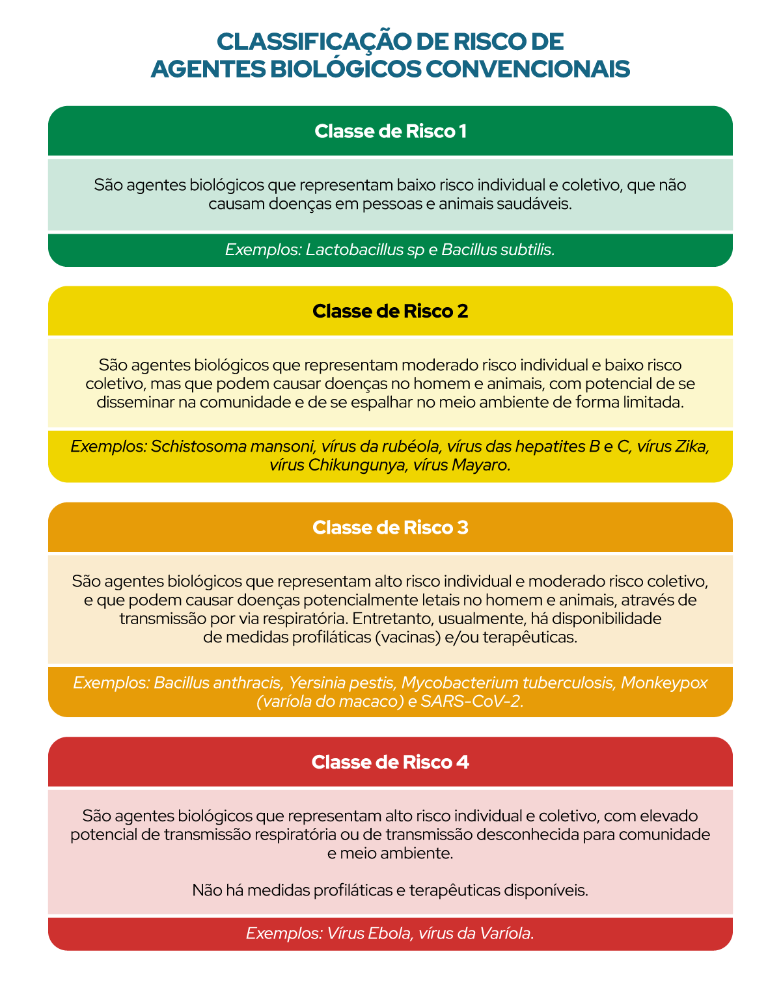 |
sim | Figura 3 – Características dos agentes biológicos convencionais, segundo a classe de risco | Classificação de risco de agentes biológicos convencionais | Comparar as classes de risco de agentes biológicos convencionais, reconhecendo seus níveis de risco individual e coletivo, potencial de disseminação, disponibilidade de medidas profiláticas ou terapêuticas e exemplos associados a cada classificação. | Infográfico vertical que apresenta quatro classes de risco de agentes biológicos convencionais, organizadas em sequência crescente de risco, da classe 1 à classe 4. |
Classificação de risco de agentes biológicos convencionais Classe de Risco 1 (em verde) São agentes biológicos que representam baixo risco individual e coletivo, que não causam doenças em pessoas e animais saudáveis. Exemplos: Lactobacillus sp e Bacillus subtilis. Classe de Risco 2 (em amarelo) São agentes biológicos que representam moderado risco individual e baixo risco coletivo, mas que podem causar doenças no homem e animais, com potencial de se disseminar na comunidade e de se espalhar no meio ambiente de forma limitada Exemplos: Schistosoma mansoni, vírus da rubéola, vírus das hepatites B e C, vírus Zika, vírus Chikungunya, vírus Mayaro. Classe de Risco 3 (em laranja) São agentes biológicos que representam alto risco individual e moderado risco coletivo, e que podem causar doenças potencialmente letais no homem e animais, através de transmissão por via respiratória. Entretanto, usualmente, há disponibilidade de medidas profiláticas (vacinas)e/ou terapêuticas. Exemplos: Bacillus anthracis, Yersinia pestis, Mycobacterium tuberculosis, Monkeypox (varíola do macaco) eSARS-CoV-2. Classe de Risco 4 (em vermelho) São agentes biológicos que representam alto risco individual e coletivo, com elevado potencial de transmissão respiratória ou de transmissão desconhecida para comunidade e meio ambiente. Não há medidas profiláticas e terapêuticas disponíveis. Exemplos: Vírus Ebola, vírus da varíola. |
Opas, 2021; Brasil, 2022. |
| 2-1-042 | não | Figura 4 – Infraestruturas para manipulação de Mycobacterium tuberculosis | Entre baciloscopia e manipulação de culturas de MTB | Comparar procedimentos com MTB em bancada aberta e em condições de maior contenção, distinguindo situações de baixo e alto risco de aerossóis. | Infográfico com duas situações de manipulação de MTB: à esquerda, há uma pessoa usando microscópio em bancada; à direita, uma pessoa com vestimenta de proteção trabalha em cabine de segurança biológica. |
A imagem apresenta, à esquerda, o título: “Baciloscopia para MTB em Bancada Aberta (NB-2 Básico)”. Abaixo, aparecem os itens: “Ambiente de bancada aberta com ventilação adequada” e “Uso de Equipamentos de Proteção Individual (EPIs)”. Na parte inferior, há o destaque: “Baixo risco de aerossóis”. À direita, apresenta o título: “Manipulação de Culturas de MTB em NB-2 Especializado ou NB-3”. Abaixo, aparecem os itens: “Cabine de Segurança Biológica” e “Alta Contenção para Tuberculose”. Na parte inferior, há o destaque: “Alto risco de aerossóis”. |
Reis; Galindo, 2026. | |
| 2-1-043 |
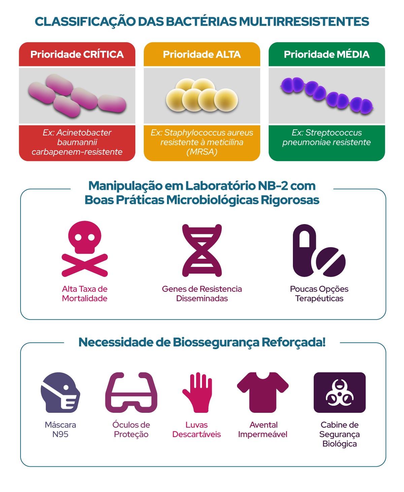 |
sim | Figura 5 – Orientações para manipulação de bactérias multirresistentes | Classificação das bactérias multirresistentes | Diferenciar bactérias multirresistentes por níveis de prioridade, considerando a manipulação em laboratório NB-2, as boas práticas microbiológicas rigorosas e as medidas de biossegurança reforçada. | Infográfico sobre bactérias multirresistentes, com três níveis de prioridade e seções sobre manipulação em laboratório NB-2 e biossegurança reforçada. |
A imagem apresenta o título “Classificação das bactérias multirresistentes”. Na parte superior, há três categorias:
Na seção central, aparece o texto: “Manipulação em Laboratório NB-2 com Boas Práticas Microbiológicas Rigorosas”. Abaixo, há três itens:
Na seção inferior, aparece o texto: “Necessidade de Biossegurança Reforçada!”. Abaixo, há cinco itens:
|
Reis; Galindo, 2026. |
| 2-1-044 |
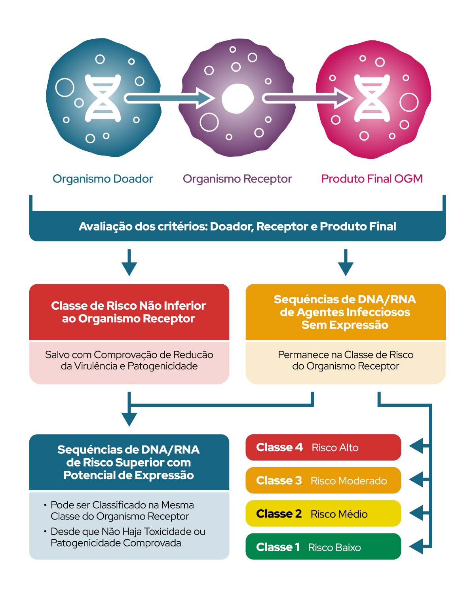 |
sim | Figura 6 – Critérios para classificação de Organismos Geneticamente Modificados | Avaliação de risco de Organismos Geneticamente Modificados (OGM) | Interpretar os critérios de avaliação de risco de Organismos Geneticamente Modificados (OGM), considerando organismo doador, organismo receptor, produto final e definição da classe de risco. | Fluxograma sobre avaliação de risco de Organismos Geneticamente Modificados (OMGs), com organismo doador, organismo receptor e produto final OGMs, seguido de critérios para definição da classe de risco. |
A imagem apresenta, na parte superior, três elementos conectados por setas:
Abaixo, aparece o texto: “Avaliação dos critérios: Doador, Receptor e Produto Final”. Em seguida, há três blocos principais:
Na parte inferior direita, há a classificação:
|
Reis; Galindo, 2026. |
| 2-2-001 | não | (vazio) | Avaliação de risco em infraestruturas laboratoriais | Analisar o processo de avaliação de risco em infraestruturas laboratoriais, relacionando agente biológico, procedimento, condições de execução e nível de biossegurança à definição de medidas de controle adequadas. | Áudio com som ambiente de corredor vazio. Evanira informa que o risco de uma atividade laboratorial não depende apenas da classe do agente biológico, mas também do procedimento, da quantidade, das condições e de quem executa a atividade. |
Evanira: Agente, durante anos muita gente trabalhou com uma lógica que parecia sólida: se o agente é classe de risco 2, o laboratório precisa ser NB-2. Direto, sem margem para dúvida. O problema é que essa equação ignora uma parte importante da pergunta — o que exatamente vai ser feito com esse agente, em que quantidade e sob quais condições. A Opas percebeu isso e deixou registrado na última edição do seu manual. O risco real de uma atividade laboratorial não depende só do agente biológico. Depende também do procedimento e de quem o executa. Essa mudança de perspectiva é o que sustenta tudo o que você vai ler aqui. E, se você já está se perguntando o que isso tem a ver com o bloqueio desta sala — está no caminho certo. Procure o esquema sobre as etapas do processo de avaliação de risco em infraestruturas laboratoriais e observe com atenção onde o nível de biossegurança aparece nesse percurso. Não é onde a maioria espera encontrar. |
EducAção, 2026. | |
| 2-2-002 |
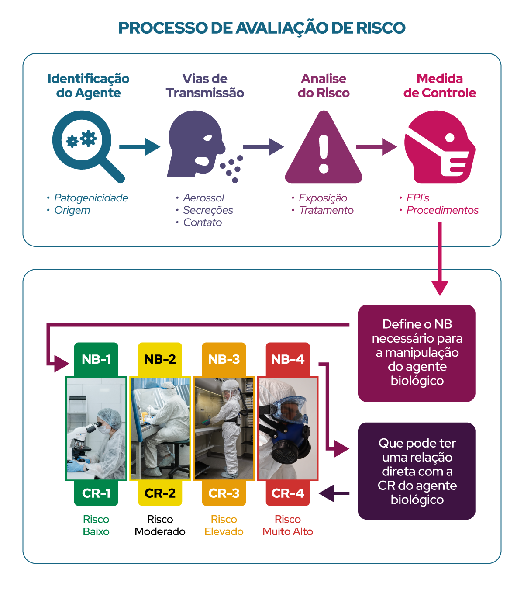 |
sim | Figura 1 – Representação esquemática de etapas do processo de avaliação de riscos em infraestruturas | Processo de avaliação de risco | Interpretar o processo de avaliação de risco como base para definir o nível de biossegurança necessário, considerando características do agente biológico, vias de transmissão, análise do risco, medidas de controle e sua relação com a classe de risco. | Infográfico sobre processo de avaliação de risco, organizado em etapas de identificação do agente, vias de transmissão, análise do risco e medida de controle. A imagem também relaciona os níveis NB-1, NB-2, NB-3 e NB-4 às classes de risco. |
Na parte superior, há uma sequência com setas indicando o processo de avaliação de risco:
A partir da etapa “Medida de controle”, uma seta desce para o texto: “Define o NB necessário para a manipulação do agente biológico”. Em seguida, o fluxo se conecta aos níveis de biossegurança NB-1, NB-2, NB-3 e NB-4, associados às classes de risco CR-1, CR-2, CR-3 e CR-4. Ao lado dos níveis, há outro texto conectado por seta: “Que pode ter uma relação direta com a CR do agente biológico”. |
Machado, 2026. |
| 2-2-003 | não | (vazio) | Símbolo de risco biológico | Associar o símbolo de risco biológico à sinalização de áreas, materiais ou procedimentos que exigem medidas de biossegurança e controle de exposição. | Ícone branco de risco biológico sobre fundo azul. | (vazio) | (vazio) | |
| 2-2-004 | não | (vazio) | Níveis de biossegurança e contenção cumulativa | Analisar os níveis de biossegurança como uma progressão cumulativa de requisitos, relacionando infraestrutura, contenção e grau de risco dos agentes biológicos à proteção de trabalhadores, comunidade e meio ambiente. | Áudio com som ambiente de laboratório, passos lentos em corredor e clique de gravador. Evanira informa que os níveis de biossegurança seguem uma progressão cumulativa de requisitos, do NB-1 ao NB-3, conforme o grau de contenção exigido. |
Evanira: Agente, antes de continuar, preste atenção no que vai encontrar daqui em diante. Quatro níveis de biossegurança — cada um com seus próprios requisitos de infraestrutura, numa escala crescente de contenção. Mas há algo que não está explícito nas tabelas: nenhum nível começa do zero. Tudo o que é exigido para um NB-1 permanece exigido no NB-2. O que o NB-2 acrescenta permanece no NB-3. É uma progressão cumulativa — cada nível herda o anterior e adiciona o que o risco mais elevado exige. O que um NB-2 oferece é suficiente para agentes biológicos com moderado risco individual e baixo risco para a coletividade. Por sua vez, a infraestrutura de um NB-3 existe para contenção de agentes biológicos que, se saírem daquele ambiente, em função do alto risco individual e risco moderado para a coletividade, podem causar sérios danos aos trabalhadores, à comunidade e ao meio ambiente. Leia os requisitos com esta pergunta em mente: O que este espaço está sendo projetado para conter? Quando chegar ao NB-3, lembre-se do que trouxe você até esta sala. |
EducAção, 2026. | |
| 2-2-005 | não | (vazio) | Requisitos de contenção em NB-3 | Avaliar os requisitos de infraestrutura e contenção de um laboratório NB-3, relacionando controle de acesso, pressão negativa, ventilação dedicada e antecâmaras à manipulação segura de agentes biológicos de maior risco. | Áudio com som ambiente de corredor vazio, porta pesada fechando ao longe e clique de gravador. Evanira informa que o NB-3 exige contenção mais rigorosa, com controle de acesso, pressão negativa, ventilação dedicada em fluxo unidirecional e antecâmaras. |
Evanira: Você chegou ao ponto que importa. Até aqui, os requisitos que leu faziam sentido para ambientes de risco baixo ou moderado — espaços que exigem um grau de contenção menor. O NB-3 é diferente. A contenção nesse tipo de laboratório é mais rigorosa em função dos microrganismos manipulados terem um risco mais elevado. Isso exige controle de acesso rigoroso, pressão negativa com sistemas de ventilação dedicados em fluxo unidirecional, e antecâmaras projetadas para que não haja escape dos microrganismos manipulados. Quando um agente biológico tem transmissão respiratória e capacidade de causar doença potencialmente letal — como o que estava sendo manipulado nesta sala —, cada um desses requisitos passa a ser a diferença entre um incidente e um acidente. Leia com atenção o que este nível exige. E pergunte se o ambiente desta sala oferecia alguma dessas garantias. A resposta para essa pergunta é o que vai liberar sua saída daqui. |
EducAção, 2026. | |
| 2-2-006 |
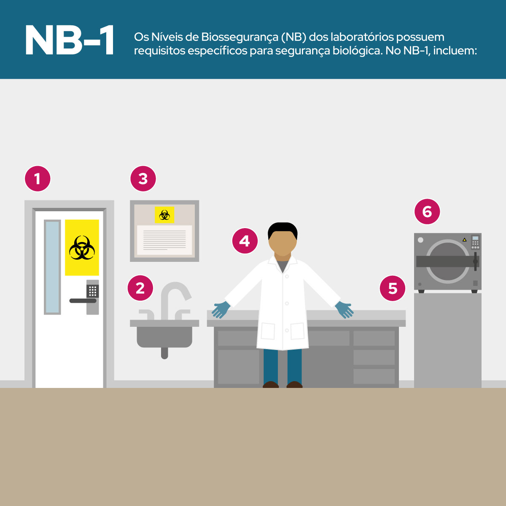 |
sim | Figura 2 - Requisitos de biossegurança em NB-1 | Requisitos de biossegurança em laboratório NB-1 | Localizar requisitos básicos de biossegurança em laboratório NB-1, observando sinalização, higienização das mãos, uso de proteção individual, bancada e equipamentos necessários à rotina laboratorial segura. | Ilustração de laboratório NB-1 com porta sinalizada, pia, aviso na parede, pessoa com jaleco e luvas, bancada e autoclave. A imagem apresenta marcadores numerados de 1 a 6. |
A ilustração apresenta o título “N-B1” e o texto: “Os Níveis de Biossegurança (NBs) dos laboratórios possuem requisitos específicos para segurança biológica. No NB-1, incluem:”
|
CDC, 2026. |
| 2-2-007 |
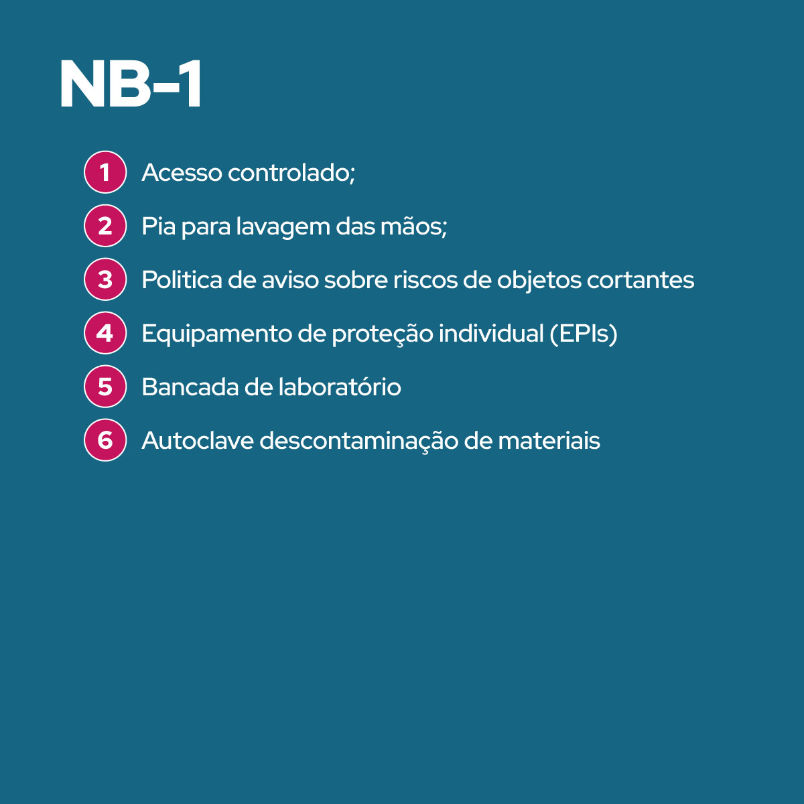 |
não | (vazio) | (vazio) | (vazio) | (vazio) | (vazio) | (vazio) |
| 2-2-008 |
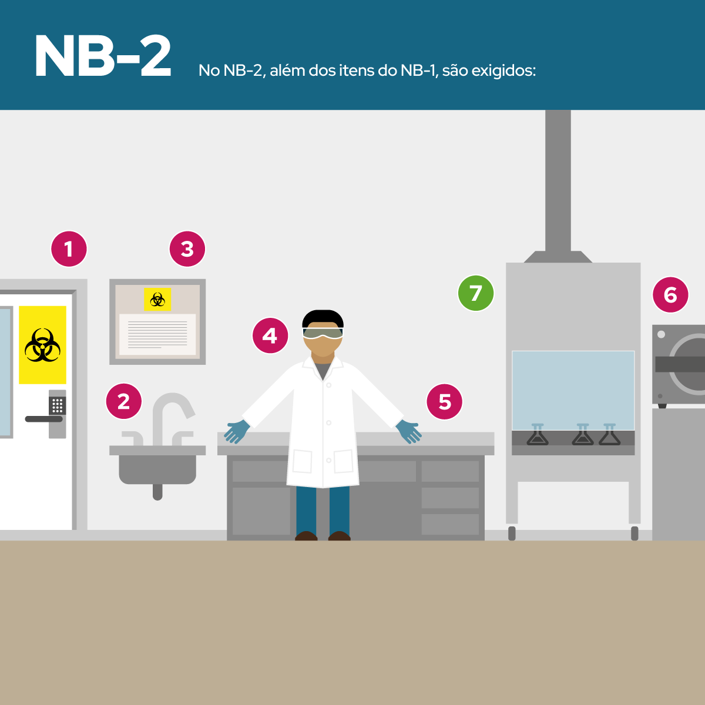 |
não | Figura 3 - Requisitos de biossegurança em NB-2 | Requisitos de biossegurança em laboratório NB-2 | Caracterizar os componentes de segurança exigidos em NB-2, observando a articulação entre controle de acesso, proteção individual, estrutura laboratorial, descontaminação e contenção física. | Ilustração de laboratório NB-2 com 7 componentes de segurança. Os itens 1 a 6 aparecem em marcadores rosa e o item 7 aparece em marcador verde, destacando o dispositivo de contenção física como elemento adicional. |
A ilustração apresenta o título “NB-2” e o texto: “No NB-2, além dos itens do NB-1, são exigidos:”
|
CDC, 2026. |
| 2-2-009 |
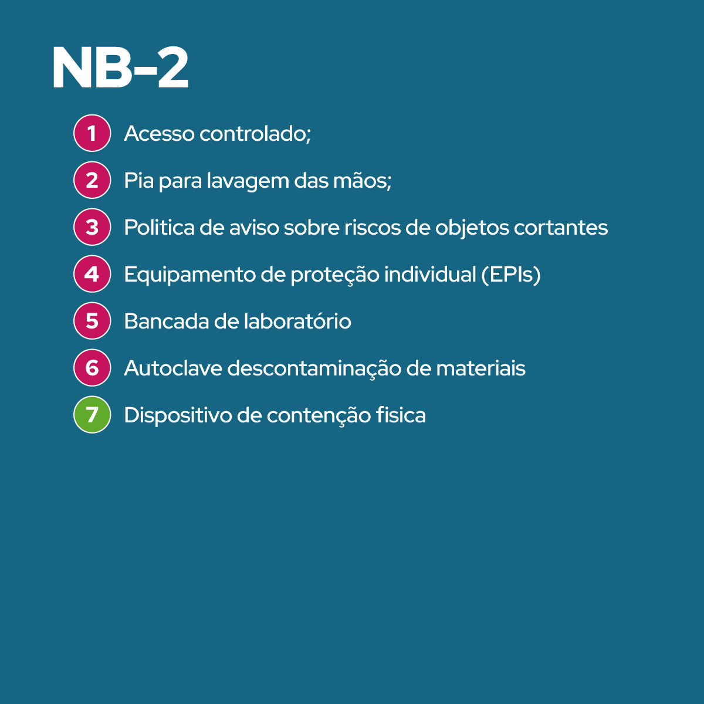 |
não | (vazio) | (vazio) | (vazio) | (vazio) | (vazio) | (vazio) |
| 2-2-010 |
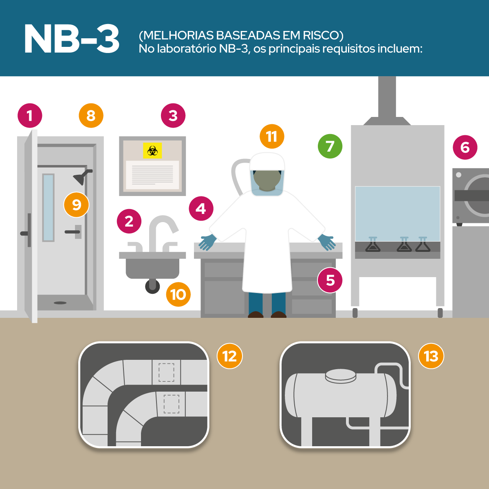 |
não | Figura 4 - Requisitos de biossegurança em NB-3 | Requisitos de biossegurança em laboratório NB-3 | Examinar os componentes de segurança exigidos em NB-3, considerando infraestrutura reforçada, controle de acesso, proteção respiratória, contenção de partículas infecciosas e descontaminação de efluentes. | Ilustração de laboratório NB-3 com 13 componentes de segurança. Os itens 1 a 6 aparecem em marcadores rosa, o item 7 aparece em marcador verde e os itens 8 a 13 aparecem em marcadores laranja, destacando os elementos adicionais do NB-3. |
A ilustração apresenta o título “NB-3” e o texto: “Melhorias baseadas em risco. No laboratório NB-3, os principais requisitos incluem:"
|
CDC, 2026. |
| 2-2-011 |
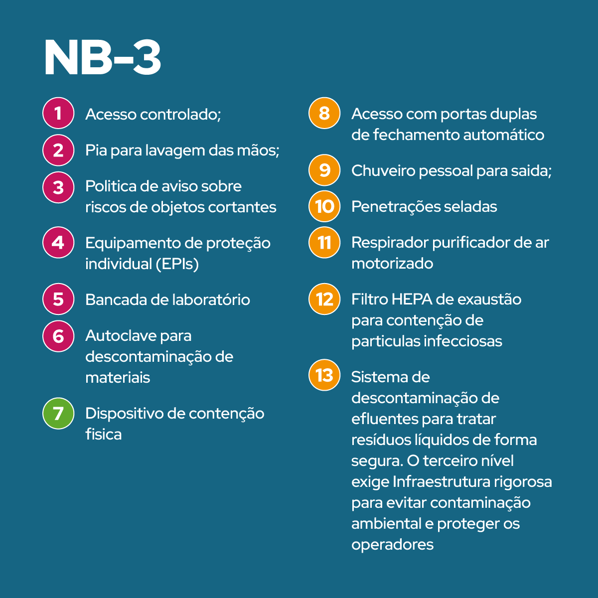 |
não | (vazio) | (vazio) | (vazio) | (vazio) | (vazio) | (vazio) |
| 2-2-012 |
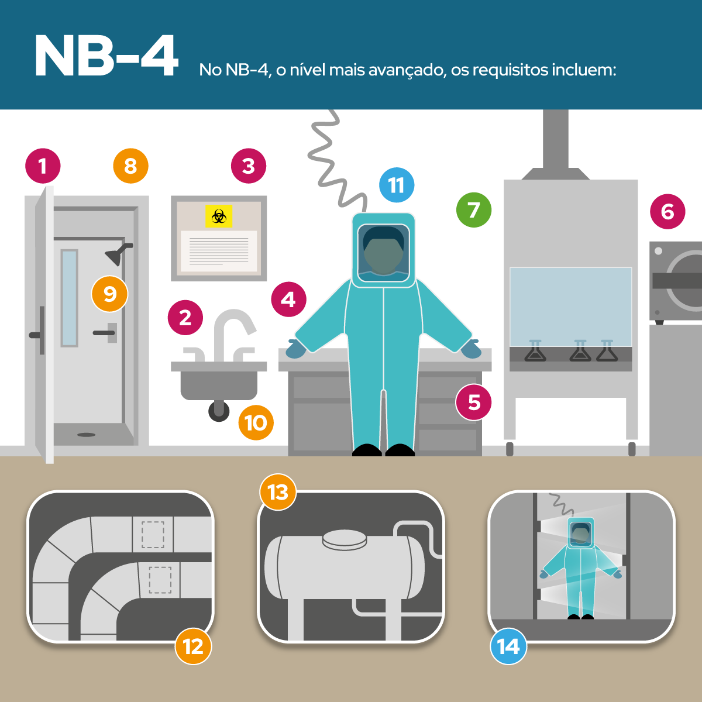 |
não | Figura 5 - Requisitos de biossegurança em NB-4 | Requisitos de biossegurança em laboratório NB-4 | Caracterizar os elementos de biossegurança em laboratório NB-4, observando o uso de traje pressurizado, ducha química, barreiras de contenção, filtragem HEPA, descontaminação de efluentes e demais estruturas necessárias ao nível máximo de contenção. | Ilustração de laboratório NB-4 com 14 componentes de segurança. Os itens 1 a 6 aparecem em marcadores rosa, o item 7 em marcador verde, os itens 8, 9, 10, 12 e 13 em marcadores laranja e os itens 11 e 14 em marcadores azuis, destacando os elementos novos. |
A ilustração apresenta o título “NB-4” e o texto: “No NB-4, o nível mais avançado, os requisitos incluem:”
|
CDC, 2026. |
| 2-2-013 |
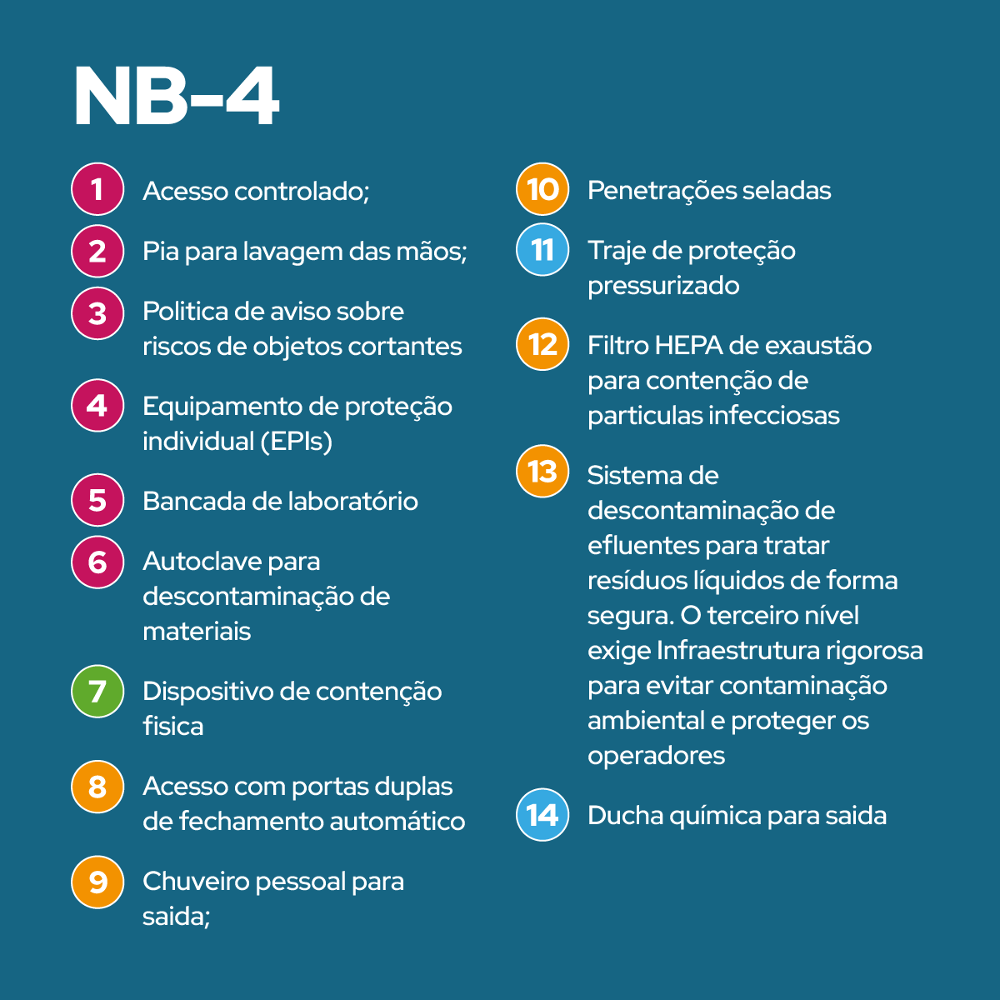 |
não | (vazio) | (vazio) | (vazio) | (vazio) | (vazio) | (vazio) |
| 2-3-001 | não | (vazio) | Bases para iniciar uma atividade laboratorial | Avaliar se os procedimentos de biossegurança adotados são compatíveis com o organismo manipulado e com as exigências da atividade, reconhecendo que a execução segura depende da adequação entre treinamento, prática e contexto de risco. | Áudio com ruído curto de arquivo sendo aberto. Evanira informa que o pesquisador seguia rotinas de biossegurança, mas orienta o(a) agente a verificar se os procedimentos realizados correspondiam ao organismo manipulado e às exigências da situação. |
Evanira: Agente, os registros desta sala mostram que o pesquisador sabia trabalhar em laboratório. Tinha treinamento em biossegurança, usava os equipamentos certos, seguia as rotinas de proteção. À primeira leitura, parece que as ações preparatórias foram cumpridas. Mas há uma diferença entre cumprir os procedimentos que se conhece e cumprir os procedimentos que a situação exige. O que você vai encontrar aqui são as bases — o que todo laboratório precisa garantir antes de qualquer atividade começar. Leia com atenção e pergunte, em cada etapa: Isso foi feito? E foi feito para o organismo certo? Essas perguntas vão acompanhar você até o final desta sala. |
EducAção, 2026. | |
| 2-3-002 | não | (vazio) | Regras para organismos patogênicos convencionais | Analisar regras de biossegurança aplicadas ao trabalho com organismos patogênicos convencionais, reconhecendo seus alcances e limites diante da definição da natureza do microrganismo manipulado. | Áudio com ruído curto de arquivo sendo aberto e bip baixo. Evanira informa que as regras para organismos patogênicos convencionais são bem estabelecidas, mas orienta o(a) agente a observar o que elas protegem e o que não foram projetadas para cobrir. |
Evanira: Agente, o que você vai ler agora são as regras para trabalho com organismos patogênicos convencionais. São regras bem estabelecidas — construídas ao longo de décadas, testadas na prática, reconhecidas internacionalmente. Quem as segue com rigor está, de fato, trabalhando com segurança. O pesquisador desta sala as conhecia. Há indicações de que parte delas estava sendo cumprida quando o procedimento foi interrompido, devido a uma falha na definição da natureza do microrganismo. Isso é o que torna o caso mais difícil de analisar — porque a presença de boas práticas pode dar a impressão de que tudo estava sob controle. Leia cada item com cuidado. Não para encontrar o que foi ignorado aqui — mas para entender o que essas regras protegem, e o que elas não foram projetadas para cobrir. Há mais dois importantes documentos que você precisa encontrar. Não deixe passar nada. |
EducAção, 2026. | |
| 2-3-003 |
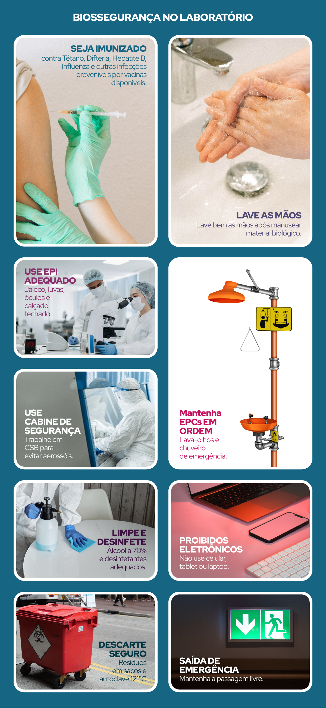 |
sim | Figura 2 – Principais aspectos de Biossegurança na manipulação de organismos convencionais patogênicos | Biossegurança no laboratório | Reconhecer orientações básicas de biossegurança no laboratório, considerando imunização, higienização das mãos, uso de EPI e EPC, trabalho em cabine de segurança, limpeza, desinfecção, descarte de resíduos e manutenção das rotas de emergência. | Infográfico com orientações de biossegurança no laboratório, organizado em cartões com fotografias e ilustrações sobre imunização, higienização das mãos, uso de EPI, cabine de segurança, EPCs, desinfecção, descarte e saída de emergência. |
A imagem apresenta o título “Biossegurança no laboratório”. Os cartões apresentam as seguintes orientações: “Seja imunizado. Contra tétano, difteria, hepatite B, influenza e outras infecções preveníveis por vacinas disponíveis.” “Lave as mãos. Lave bem as mãos após manusear material biológico.” “Use EPI adequado. Jaleco, luvas, óculos e calçado fechado.” “Use cabine de segurança. Trabalhe em CSB para evitar aerossóis.” “Mantenha EPCs em ordem. Lava-olhos e chuveiro de emergência.” “Limpe e desinfete. Álcool a 70% e desinfetantes adequados.” “Proibidos eletrônicos. Não use celular, tablet ou laptop.” “Descarte seguro. Resíduos em sacos e autoclave 121 °C.” “Saída de emergência. Mantenha a passagem livre.” |
Galindo; Morais, 2026. |
| 2-3-004 | não | (vazio) | Trabalho com OGMs: autorização e supervisão | Analisar requisitos para o trabalho com organismos geneticamente modificados, reconhecendo a importância da legislação específica, das instâncias responsáveis, da autorização, da supervisão e das condições necessárias para o início seguro das atividades. | Áudio com ruído. Cristiano informa que o trabalho com OGMs possui legislação própria, envolve órgãos específicos e exige atenção aos procedimentos de autorização, supervisão e garantia das condições antes do início seguro da atividade. |
Cristiano: Agente, não é surpresa para mim que você tenha chegado até aqui. Quando deixei essas gravações, sabia que podia contar com você para seguir cada pista até o fim. Estamos quase na metade do percurso — mas não é hora de relaxar. O que está por trás do bloqueio desta sala é mais sutil do que parece. O trabalho com OGMs é regulado por legislação própria, envolve órgãos com atribuições específicas e exige procedimentos que não se confundem com as boas práticas para organismos convencionais. Preste atenção em cada um desses elementos — especialmente em quem autoriza, quem supervisiona e o que precisa estar garantido antes de qualquer atividade começar. Esses são os últimos rastros antes do controle de saída. Siga-os com cuidado. |
EducAção, 2026. | |
| 2-3-005 |
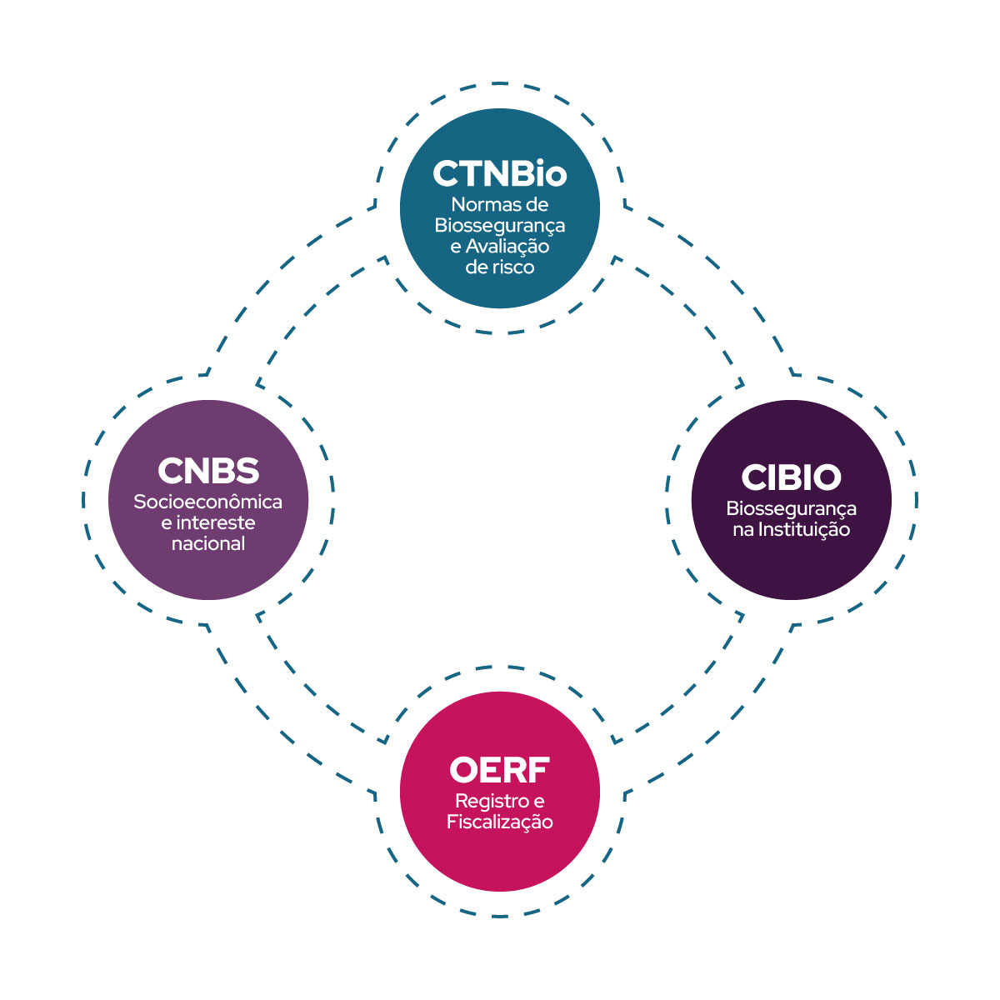 |
não | Figura 3 – Órgãos colegiados e fiscalizadores de biossegurança de OGMs no Brasil | Órgãos e instâncias relacionados ao trabalho com OGMs | Identificar órgãos e instâncias relacionados ao trabalho com organismos geneticamente modificados, reconhecendo suas atribuições na definição de normas, avaliação de risco, biossegurança institucional, registro e fiscalização. | Diagrama com quatro círculos conectados, identificando órgãos e instâncias relacionados ao trabalho com organismos geneticamente modificados. |
A imagem apresenta quatro órgãos ou instâncias conectadas por linhas tracejadas:
|
Galindo; Morais, 2026. Adaptado de Reis; Galindo, 2022. |
| 2-3-006 |
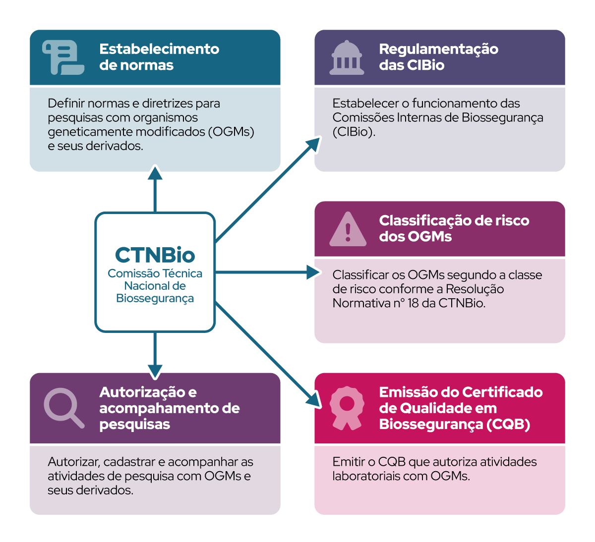 |
não | Figura 4 – Principais atribuições da CTNBio | Atribuições da CTNBio | Descrever as atribuições da CTNBio no trabalho com organismos geneticamente modificados, considerando sua atuação na definição de normas, regulamentação das CIBio, classificação de risco, autorização de pesquisas e emissão do CQB. | Fluxograma com a CTNBio ao centro e cinco atribuições conectadas por setas, relacionadas a normas, regulamentação, classificação de risco, autorização de pesquisas e emissão do CQB. |
A imagem apresenta, no quadrante central esquerdo, o texto: “CTNBio — Comissão Técnica Nacional de Biossegurança”. A partir da CTNBio, setas apontam para cinco atribuições:
|
Galindo; Morais, 2026. Adaptado de Brasil, 2005b. |
| 2-3-007 |
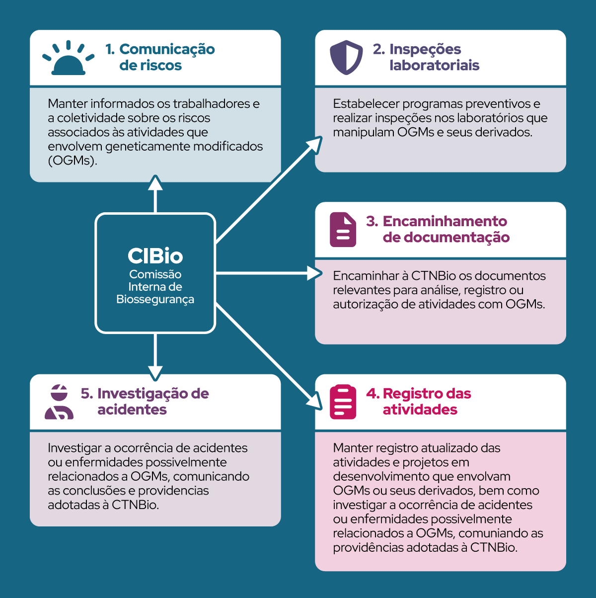 |
não | Figura 5 – Principais atribuições da CIBio | Atribuições da CIBio | Descrever as atribuições da CIBio no trabalho com organismos geneticamente modificados, considerando comunicação de riscos, inspeções laboratoriais, encaminhamento de documentação, registro das atividades e investigação de acidentes. | Fluxograma com a CIBio ao centro e cinco atribuições conectadas por setas, relacionadas à comunicação de riscos, inspeções laboratoriais, encaminhamento de documentação, registro das atividades e investigação de acidentes. |
A imagem apresenta, no quadrante central esquerdo, o texto: “CIBio — Comissão Interna de Biossegurança”. A partir da CIBio, setas apontam para cinco atribuições:
|
Galindo; Morais, 2026. Adaptado de Brasil, 2005b. |
| 3-1-001 | não | (vazio) | Introdução à Alta Contenção Biológica | Compreender os princípios que sustentam a segurança em ambientes de Alta Contenção Biológica, reconhecendo a importância do rigor nos procedimentos e da redução da margem de erro em atividades de maior risco. | Áudio com ruído curto de arquivo sendo aberto e bip baixo. Cristiano informa que o(a) agente está entrando em uma ala de Alta Contenção Biológica, com ambientes em que falhas de procedimento podem gerar riscos ampliados. |
Cristiano: Agente, você chegou até aqui. Cada sala que ficou para trás foi uma prova de que você sabe seguir uma pista até o fim. Mas preciso ser direto: o que está à sua frente é diferente do que você enfrentou até agora. As próximas salas estão em uma ala que permanecia fechada. Os casos aqui são de outra natureza — ambientes onde a margem para erro é menor, onde um único procedimento negligenciado pode comprometer muito mais do que um experimento. Você está entrando no território da Alta Contenção Biológica. Para entender o que aconteceu nesta sala, você vai precisar entender primeiro o que sustenta a segurança nesse nível. Comece por aqui. |
EducAção, 2026. | |
| 3-1-002 | não | (vazio) | Requisitos do laboratório de alta contenção | Analisar os requisitos de uma instalação de alta contenção biológica, relacionando infraestrutura, equipamentos de proteção e cuidados específicos à compreensão das condições necessárias para a segurança do laboratório. | Áudio com ruído curto de arquivo sendo aberto e bip baixo. Cristiano orienta o(a) agente a conhecer os requisitos da instalação, os equipamentos de proteção disponíveis e os cuidados exigidos no nível de contenção do laboratório. |
Cristiano: Antes de continuar, eu preciso que você conheça este laboratório. Não o incidente... o laboratório. Há arquivos sobre os requisitos desta instalação, sobre os equipamentos de proteção disponíveis naquele dia e sobre os cuidados específicos exigidos nesse nível de contenção. Investigue cada um deles. Você vai precisar desse conhecimento para entender o que aconteceu aqui. E quando chegar lá, vai perceber que a resposta não estava nos equipamentos. |
EducAção, 2026. | |
| 3-1-003 |
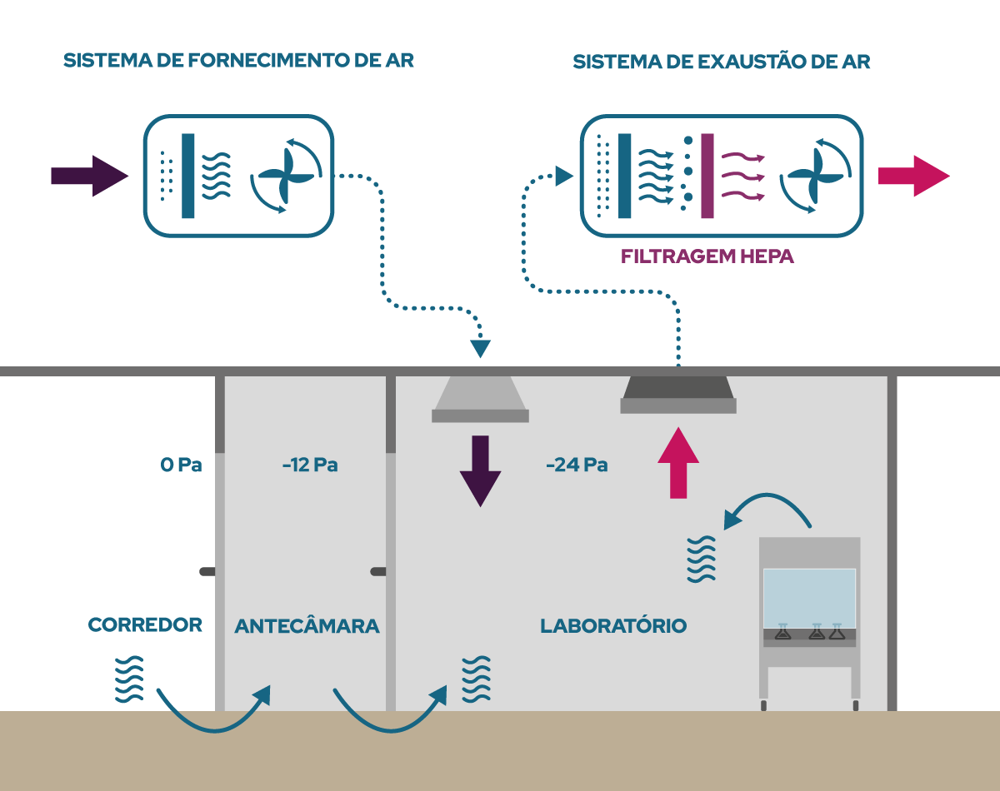 |
não | Figura 1 – Componentes típicos de laboratórios de Alta Contenção Biológica | Sistema de ventilação em laboratório de alta contenção | Interpretar o sistema de ventilação em laboratório de alta contenção, considerando fornecimento de ar, exaustão com filtragem HEPA, pressão negativa e controle do fluxo de ar entre corredor, antecâmara e laboratório. | Esquema visual de ventilação em laboratório, com fornecimento de ar, exaustão com filtragem HEPA e indicação de pressões no corredor, na antecâmara e no laboratório. |
A imagem apresenta, na parte superior, dois sistemas: “Sistema de fornecimento de ar” e “Sistema de exaustão de ar”. No sistema de exaustão, aparece o texto “Filtragem HEPA”. Na parte inferior, há três ambientes conectados:
Setas indicam o fluxo de ar entre os ambientes e entre o laboratório e os sistemas de fornecimento e exaustão. |
Soares et al., 2026. Adaptado de NIH, 2024. |
| 3-1-004 |
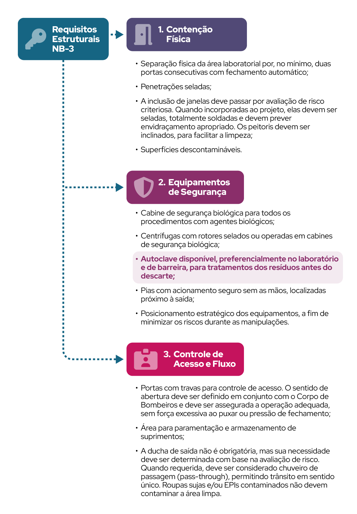 |
não | Figura 2 – Requisitos de infraestrutura para laboratórios de alta contenção biológica | Requisitos estruturais em NB-3 | Analisar requisitos estruturais de laboratório NB-3, considerando contenção física, equipamentos de segurança e controle de acesso e fluxo como condições necessárias para reduzir riscos em ambientes de maior contenção biológica. | Infográfico sobre requisitos estruturais em NB-3, organizado em três grupos: Contenção Física, Equipamentos de Segurança e Controle de Acesso e Fluxo. |
Requisitos Estruturais NB-3:
|
NIH, 2024. |
| 3-1-005 | não | EPIs recomendados para trabalho em laboratórios NB-3 e NBA-3 | Uniforme dedicado | Associar o uniforme dedicado ao conjunto de barreiras utilizadas em ambientes laboratoriais, considerando sua função na proteção da pele e na facilidade de descontaminação. | Ícone branco de uniforme sobre fundo azul. | (vazio) | Soares et al., 2026. Adaptado de CNPEM, 2025. | |
| 3-1-006 | não | (vazio) | Macacão | Caracterizar o macacão como equipamento de proteção individual utilizado para cobrir o corpo do operador e reduzir a exposição durante atividades laboratoriais com exigência de biossegurança. | Ícone branco de macacão sobre fundo roxo. | (vazio) | (vazio) | |
| 3-1-007 | não | (vazio) | Avental | Identificar o avental como equipamento de proteção individual utilizado como barreira adicional durante atividades laboratoriais, considerando sua impermeabilidade e sua função na redução de contaminações acidentais. | Ícone branco de avental sobre fundo roxo. | (vazio) | (vazio) | |
| 3-1-008 | não | (vazio) | Luvas | Entender o uso de luvas como equipamento de proteção individual em atividades laboratoriais, considerando sua função na redução do contato direto com material biológico e na segurança durante a manipulação. | Ícone branco de luvas sobre fundo rosa. | (vazio) | (vazio) | |
| 3-1-009 | não | (vazio) | Botas | Identificar o uso de botas ou propés como equipamento de proteção individual em atividades laboratoriais, considerando sua impermeabilidade, ação antiderrapante e função na redução de riscos durante a circulação em áreas de biossegurança. | Ícone branco de botas sobre fundo roxo. | (vazio) | (vazio) | |
| 3-1-010 | não | (vazio) | Proteção respiratória | Caracterizar a proteção respiratória como equipamento de proteção individual em atividades laboratoriais, considerando sua função na redução da exposição a aerossóis e partículas potencialmente contaminantes. | Ícone branco de máscara de proteção respiratória sobre fundo roxo. | (vazio) | (vazio) | |
| 3-1-011 | não | (vazio) | Proteção ocular e facial | Compreender a proteção ocular e facial como equipamento de proteção individual em atividades laboratoriais, considerando sua função na redução da exposição dos olhos e do rosto a respingos, aerossóis e outros riscos definidos pela avaliação de risco. | Ícone branco de óculos de proteção sobre fundo azul. | (vazio) | (vazio) | |
| 3-1-012 | não | (vazio) | Touca | Identificar a touca como equipamento de proteção individual em atividades laboratoriais, considerando sua função na proteção da cabeça e do pescoço contra respingos e aerossóis potencialmente contaminados. | Ícone branco de touca sobre fundo azul. | (vazio) | (vazio) | |
| 3-1-013 |
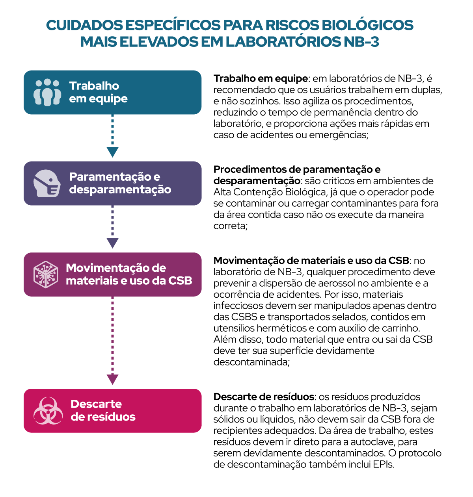 |
não | Figura 3 – Cuidados específicos para riscos biológicos mais elevados em laboratórios NB-3 | Cuidados específicos para riscos biológicos em NB-3 | Analisar cuidados específicos para riscos biológicos em laboratórios NB-3, considerando trabalho em equipe, paramentação, movimentação de materiais, uso da CSB e descarte de resíduos como práticas necessárias à contenção e à segurança das atividades. | Infográfico sobre cuidados específicos em laboratórios NB-3, organizado em quatro etapas: trabalho em equipe, paramentação e desparamentação, movimentação de materiais e uso da CSB, e descarte de resíduos. |
Trabalho em equipe: em laboratórios de NB-3, é recomendado que os usuários trabalhem em duplas, e não sozinhos. Isso agiliza os procedimentos, reduzindo o tempo de permanência dentro do laboratório, e proporciona ações mais rápidas em caso de acidentes ou emergências; Procedimentos de paramentação e desparamentação: são críticos em ambientes de Alta Contenção Biológica, já que o operador pode se contaminar ou carregar contaminantes para fora da área contida caso não os execute da maneira correta; Movimentação de materiais e uso da CSB: no laboratório de NB-3, qualquer procedimento deve prevenir a dispersão de aerossol no ambiente e a ocorrência de acidentes. Por isso, materiais infecciosos devem ser manipulados apenas nas CSBs e transportados selados, contidos em utensílios herméticos e com auxílio de carrinho. Além disso, todo material que entra ou sai da CSB deve ter sua superfície devidamente descontaminada; Descarte de resíduos: os resíduos produzidos durante o trabalho em laboratórios de NB-3, sejam sólidos ou líquidos, não devem sair da CSB fora de recipientes adequados. Da área de trabalho, esses resíduos devem ir direto para a autoclave, para serem devidamente descontaminados. O protocolo de descontaminação também inclui EPIs. |
WHO, 2020c; NIH, 2024. |
| 3-1-014 | não | (vazio) | Cadeia humana na alta contenção | Analisar a importância da capacitação, avaliação de competência e supervisão em laboratórios de alta contenção, reconhecendo o papel da equipe na sustentação dos protocolos de biossegurança. | Áudio com ruído curto de arquivo sendo aberto e bip baixo. Cristiano informa que a segurança em alta contenção depende de pessoas treinadas, avaliadas e supervisionadas para garantir que os protocolos sejam cumpridos. |
Cristiano: Deixei esse áudio aqui porque há algo que os documentos técnicos não vão te dizer — pelo menos não diretamente. Um laboratório de alta contenção funciona porque existe, por trás de cada protocolo, uma cadeia humana que o sustenta. Pessoas que foram treinadas, que foram avaliadas, que tiveram sua competência verificada antes de desenvolver qualquer atividade de forma independente. E, mesmo assim, há sempre alguém cuja função é garantir que essa cadeia não quebre — que nenhuma etapa, por mais rotineira que pareça, seja tratada como garantida. Investigue o que ficou nos arquivos. Há algo nessa sala que só faz sentido depois que você entender como essa cadeia funciona. |
EducAção, 2026. | |
| 3-1-015 |
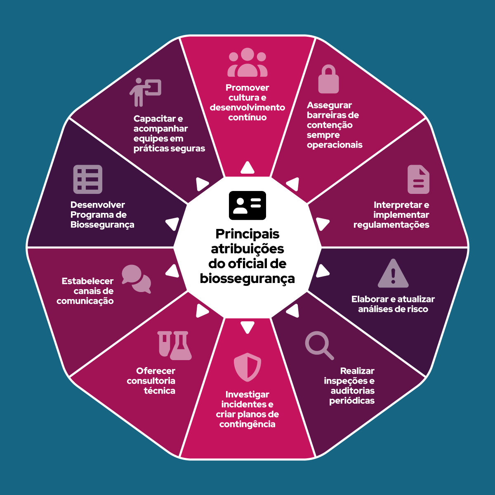 |
não | Figura 4 – Principais atribuições do oficial de biossegurança | Atribuições do oficial de biossegurança | Refletir as atribuições do oficial de biossegurança como parte da gestão institucional de riscos, considerando o desenvolvimento da equipe, barreiras de contenção, regulamentações e análises de risco. | Infográfico sobre as principais atribuições do oficial de biossegurança, organizado em dez segmentos com ícones e textos. |
|
CDC, 2020. |
| 3-1-016 |
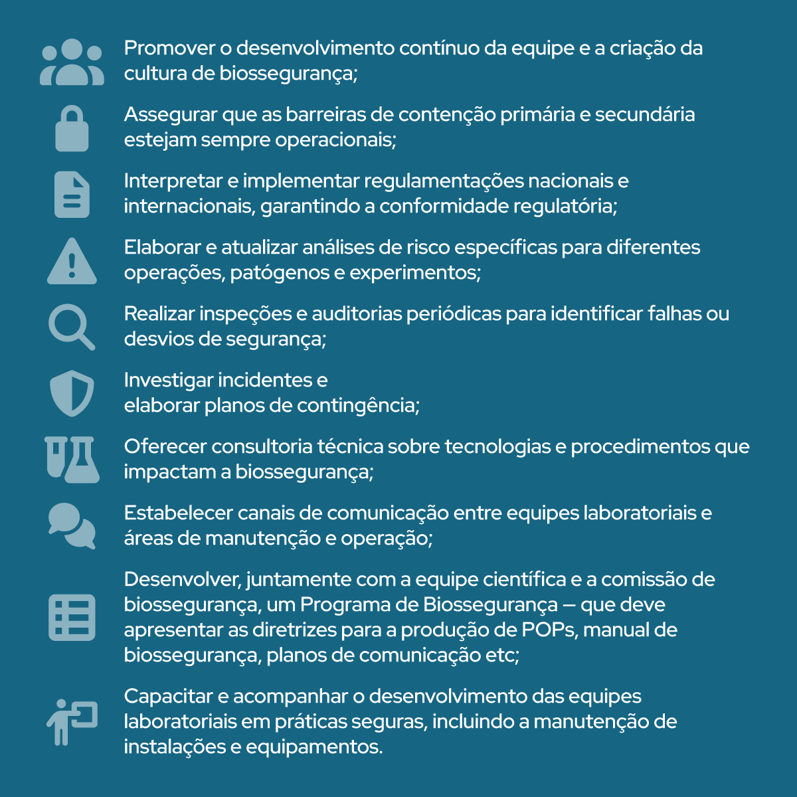 |
não | (vazio) | (vazio) | (vazio) | (vazio) | (vazio) | (vazio) |
| 3-1-017 |
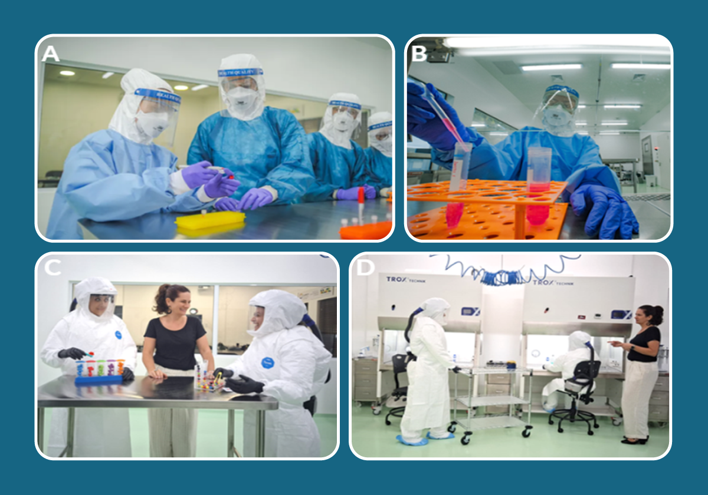 |
não | Figura 5 – Profissionais em treinamento para trabalho em laboratórios NB-3 | Profissionais em treinamento para trabalho em NB-3 | Observar situações de treinamento para atuação em laboratórios NB-3, considerando o uso de equipamentos de proteção, a manipulação de materiais e a organização das atividades em ambientes de maior contenção biológica. | Montagem de quatro fotografias identificadas pelas letras A, B, C e D, mostrando atividades de treinamento em ambiente laboratorial, com uso de equipamentos de proteção em parte das cenas. | (vazio) | divulgação CNPEM, 2024. A, B, C e D: participantes do Programa de Treinamento em Alta Contenção Biológica do CNPEM realizam atividades práticas com EPIs reais e materiais que simulam amostras biológicas. |
| 3-1-018 | não | (vazio) | Plano de emergência, simulações e bioproteção | Analisar a importância de planos de emergência, simulações e medidas de bioproteção em laboratórios de alta contenção, reconhecendo sua função na resposta organizada a incidentes, na descontaminação e no controle institucional de riscos. | Áudio com ruído curto de arquivo sendo aberto e bip baixo. Cristiano informa que os últimos arquivos tratam de plano de emergência, simulações e medidas de bioproteção em laboratório que manipula SARS-CoV-2. |
Cristiano: Gravo esses áudios sempre na certeza de que você os encontrará quando mais precisar. Espero que a essa altura você já tenha uma ideia do que aconteceu aqui. O que você vai encontrar agora são os últimos arquivos — e eles tratam de algo que vai muito além de saber usar um EPI corretamente. Num laboratório que trabalha com um agente como o SARS-CoV-2, existe um plano para quando as coisas saem do controle. Um documento que orienta cada passo — como isolar a área, como descontaminar quem acionar e em que ordem. Mas um plano que ninguém treinou não é um plano. É papel. Por isso existem as simulações — ensaios para o pior cenário, para que quando algo falhar de verdade, ninguém precise pensar. Só agir. Há também algo sobre bioproteção — um conceito que vai além desse caso, mas que todo profissional desse nível precisa conhecer. Encontrou um documento com as principais medidas de controle que uma instituição deve ter? Não passe por ele sem ler. Esses são os últimos arquivos antes do desafio final. Está na hora de terminar de reconstruir o caso. |
EducAção, 2026. | |
| 3-1-019 | não | Plano de Resposta a Emergências | Procedimentos imediatos após acidente | Orientar a resposta inicial diante de acidentes em ambiente laboratorial. | Ícone branco de sirene sobre fundo azul. | (vazio) | (vazio) | |
| 3-1-020 | não | (vazio) | Isolamento de área contaminada | Compreender a importância do isolamento da área contaminada como medida de contenção após acidente em ambiente laboratorial. | Ícone branco de barreira de isolamento com símbolo de risco biológico sobre fundo roxo. | (vazio) | (vazio) | |
| 3-1-021 | não | (vazio) | Limpeza e desinfecção de área contaminada | Reconhecer a limpeza e desinfecção do local como etapa necessária após acidente em ambiente laboratorial, considerando a remoção de contaminantes, o uso de produtos adequados e a prevenção de novas exposições. | Ícone branco de borrifador e frasco com símbolo de saúde sobre fundo roxo. | (vazio) | (vazio) | |
| 3-1-022 | não | (vazio) | Comunicação de acidente em laboratório | Destacar a comunicação do acidente como etapa necessária da resposta em ambiente laboratorial, considerando o acionamento das pessoas responsáveis, o registro da ocorrência e a adoção das medidas de segurança previstas. | Ícone branco de megafone sobre fundo rosa. | (vazio) | (vazio) | |
| 3-1-023 | não | (vazio) | Atendimento após acidente em laboratório | Situar o atendimento após acidente como etapa da resposta em ambiente laboratorial, considerando o cuidado imediato à pessoa envolvida, o acionamento dos responsáveis e o encaminhamento conforme os procedimentos de segurança previstos. | Ícone branco de maleta de primeiros socorros sobre fundo roxo. | (vazio) | (vazio) | |
| 3-1-024 |
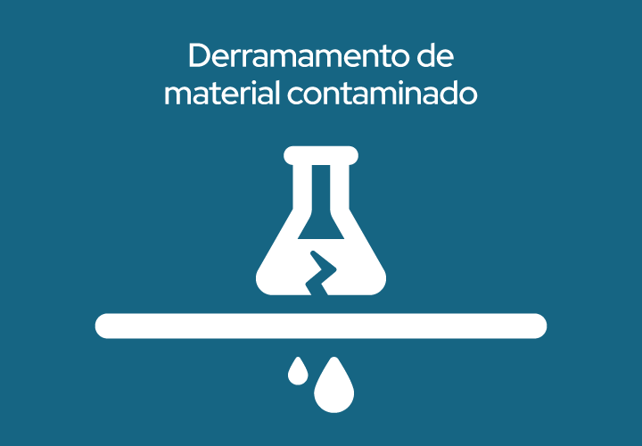 |
não | (vazio) | Derramamento de material contaminado | Caracterizar o derramamento de material contaminado como situação de emergência em ambiente laboratorial, considerando a necessidade de contenção, comunicação, limpeza e desinfecção segura do local. | Ícone branco de frasco quebrado com gotas sobre fundo azul. | “Derramamento de material contaminado” |
(vazio) |
| 3-1-025 | não | (vazio) | Exposição acidental a agente biológico | Identificar a exposição acidental a agente biológico como ocorrência que exige cuidado imediato ao trabalhador, avaliação do tipo de contato e acompanhamento das possíveis consequências à saúde. | Ícone branco de cabeça com partículas ao redor sobre fundo roxo. | “Exposição acidental de um trabalhador ao agente biológico” |
(vazio) | |
| 3-1-026 |
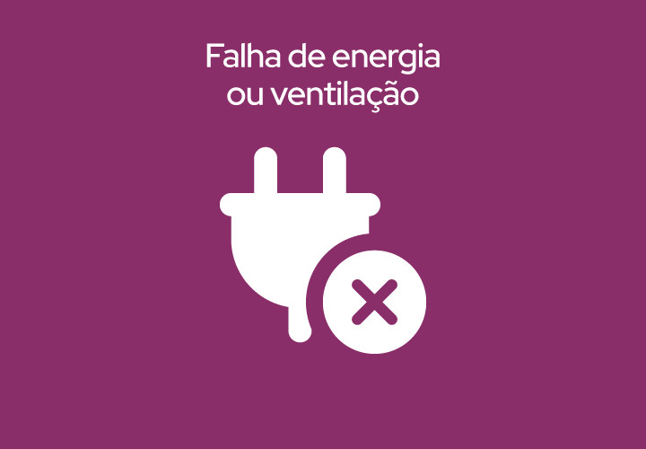 |
não | (vazio) | Falha de energia ou ventilação | Identificar falhas de energia ou ventilação como ocorrências críticas em ambiente laboratorial, considerando seus impactos sobre a contenção, o funcionamento dos equipamentos e a segurança das atividades em andamento. | Ícone branco de tomada com símbolo de erro sobre fundo roxo. | “Falha de energia ou ventilação” |
(vazio) |
| 3-1-027 |
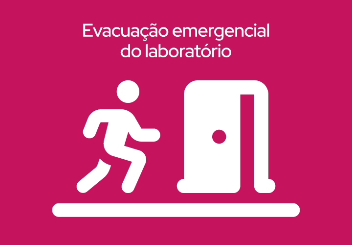 |
não | (vazio) | Evacuação emergencial do laboratório | Situar a evacuação emergencial como procedimento de resposta a ocorrências críticas em laboratório, considerando a saída segura da equipe, a liberação das rotas de fuga e o cumprimento das orientações previstas no plano de emergência. | Ícone branco de pessoa correndo em direção a uma porta aberta sobre fundo rosa. | “Evacuação emergencial do laboratório” |
(vazio) |
| 3-1-028 | não | (vazio) | Comunicação inicial em emergência laboratorial | Definir a comunicação inicial como etapa da resposta a emergências laboratoriais, considerando a identificação das pessoas responsáveis, a agilidade no aviso e o encaminhamento adequado das ações previstas no plano de emergência. | Ícone branco de balões de fala sobre fundo azul. | “Quem deve ser informado primeiro” |
(vazio) | |
| 3-1-029 | não | (vazio) | Setores acionados em emergência laboratorial | Mapear os setores que devem ser acionados em uma emergência laboratorial, considerando biossegurança, chefia, saúde ocupacional, socorristas e manutenção na organização da resposta ao incidente. | Ícone branco de duas pessoas, uma com terno e gravata e outra com símbolo de primeiros socorros, sobre fundo roxo. | “Quais setores precisam ser acionados (biossegurança, chefia, saúde ocupacional, equipe de socorristas, manutenção)” |
(vazio) | |
| 3-1-030 | não | (vazio) | Formas de comunicação em emergência laboratorial | Compreender os meios de comunicação em uma emergência laboratorial, considerando telefone, alarmes e sistemas internos como recursos para acionar rapidamente as pessoas e setores responsáveis. | Ícone branco de celular sobre fundo roxo. | “Como essa comunicação será feita (telefone, alarme, sistemas internos)” |
(vazio) | |
| 3-1-031 | não | (vazio) | Informações repassadas em emergência laboratorial | Organizar as informações que devem ser repassadas em uma emergência laboratorial, considerando dados sobre o incidente, pessoas envolvidas, riscos identificados e medidas já adotadas para orientar a resposta adequada. | Ícone branco de lista com símbolo de confirmação sobre fundo rosa. | “Que informações devem ser repassadas” |
(vazio) | |
| 3-1-032 |
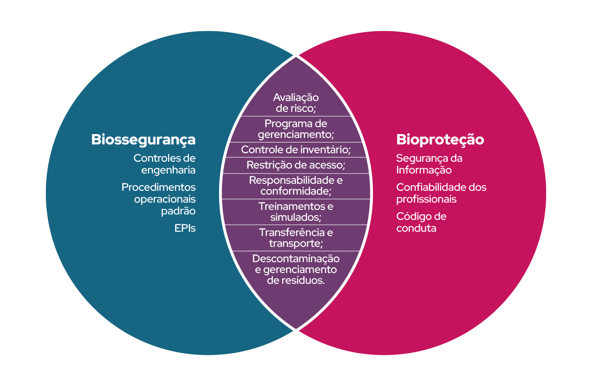 |
não | Figura 6 – Sobreposição entre controles de biossegurança e de bioproteção | Relação entre biossegurança e bioproteção | Identificar medidas específicas de biossegurança e de bioproteção, reconhecendo ações compartilhadas entre os dois campos com base na gestão de riscos, no controle de acesso, no transporte, no treinamento e no gerenciamento de resíduos. | Diagrama com duas formas sobrepostas. A área de sobreposição apresenta medidas comuns relacionadas à biossegurança e à bioproteção. |
À esquerda, o título “Biossegurança”, seguido dos itens: “Controles de engenharia”, “Procedimentos operacionais padrão” e “EPIs”. Na área central de sobreposição, aparecem os itens: “Avaliação de risco”, “Programa de gerenciamento”, “Controle de inventário”, “Restrição de acesso”, “Responsabilidade e conformidade”, “Treinamentos e simulados”, “Transferência e transporte” e “Descontaminação e gerenciamento de resíduos”. À direita, aparece o título “Bioproteção”, seguido dos itens: “Segurança da Informação”, “Confiabilidade dos profissionais” e “Código de conduta”. |
Soares, 2026, adaptado de Laboratory Biosecurity Guidance (WHO, 2024). |
| 3-2-001 | não | (vazio) | Biotérios: classificações, riscos e medidas de controle | Investigar classificações, riscos e medidas de controle em biotérios, considerando a organização das colônias, o status sanitário dos animais e as condições necessárias para a segurança em ambientes de experimentação animal. | Áudio com ruído. Evanira informa que há documentos sobre biotérios que precisam ser investigados, incluindo classificações das instalações, organização das colônias, status sanitário dos animais, riscos do ambiente e medidas de controle previstas. |
Evanira: Espero que este áudio te encontre no momento certo. Sabe, tem algo nessa sala que me intriga desde o início — e não é o que você esperaria encontrar num caso assim. Biotérios parecem ambientes controlados. E são, na maior parte do tempo. Mas se há uma coisa que aprendi trabalhando com experimentação animal é que os problemas mais sérios raramente aparecem na hora em que acontecem. Há documentos aqui que você precisa investigar antes de continuar. Um deles traz as classificações desse tipo de instalação — o que cada biotério é, como as colônias são organizadas, o que define o status sanitário dos animais. Outro mapeia os riscos desse ambiente de uma forma que você provavelmente não espera. E há ainda registros sobre as medidas que deveriam estar em vigor para que nada saísse do controle. Comece por aí. Talvez você entenda o que quero dizer. |
EducAção, 2026. | |
| 3-2-002 |
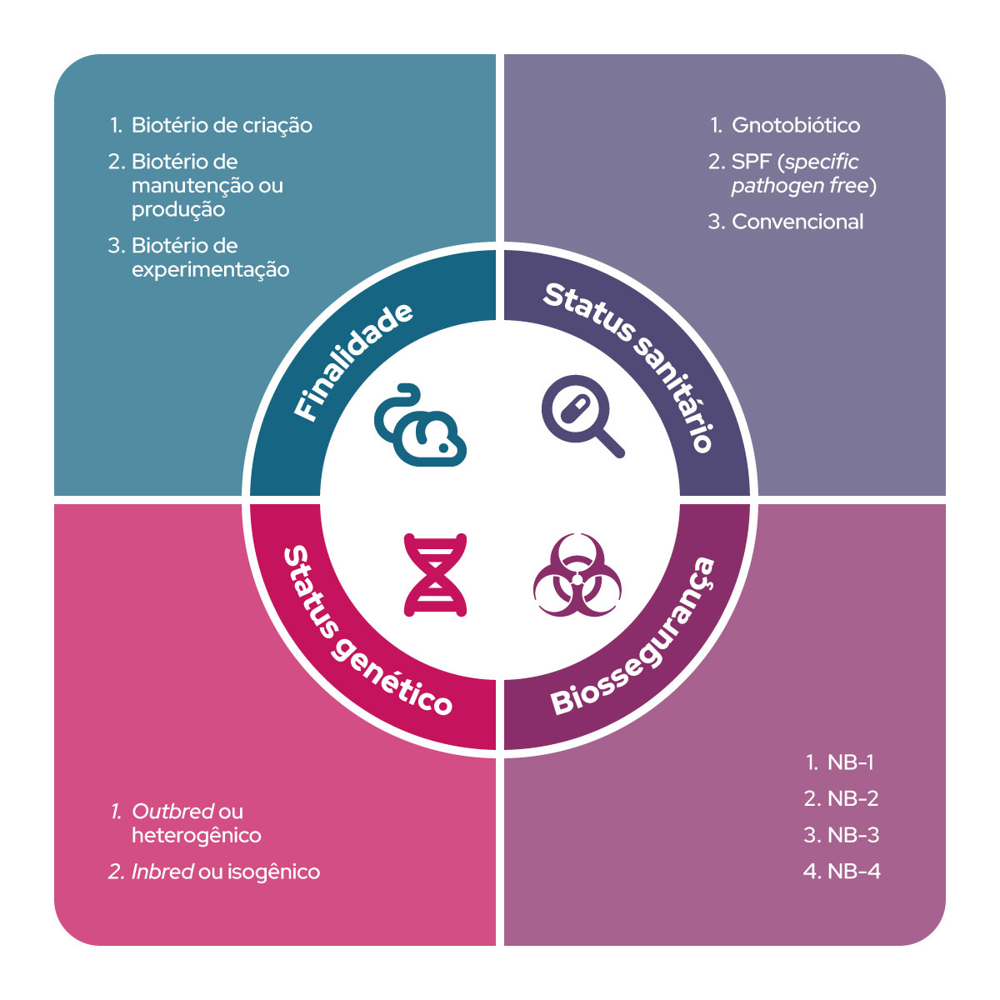 |
não | Figura 1 – Classificações pertinentes aos biotérios e às colônias animais no âmbito da experimentação animal | Classificação de biotérios | Distinguir categorias de classificação de biotérios, considerando finalidade, status sanitário, status genético e nível de biossegurança na organização de ambientes destinados à criação, manutenção ou experimentação animal. | Infográfico dividido em quatro categorias de classificação de biotérios: finalidade, status sanitário, status genético e biossegurança. |
Finalidade:
Status sanitário:
Status genético:
Biossegurança:
|
Figura gerada com Biorender, número de licença VM29AWSWGB. |
| 3-2-003 |
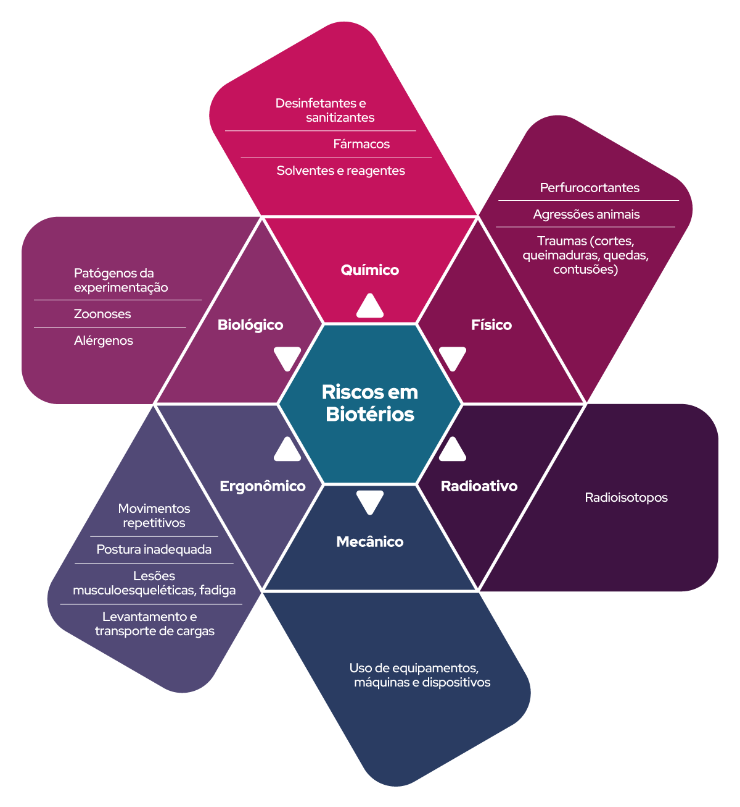 |
não | Figura 2 – Riscos associados à experimentação animal | Riscos em biotérios | Diferenciar os tipos de riscos presentes em biotérios, considerando riscos biológicos, químicos, físicos, radioativos, mecânicos e ergonômicos na organização de práticas seguras em ambientes de experimentação animal. | Infográfico em formato radial sobre riscos em biotérios, com seis categorias: biológico, químico, físico, radioativo, mecânico e ergonômico. |
A imagem apresenta, ao centro, o texto: “Riscos em Biotérios”. Ao redor do centro, há seis categorias de riscos: Biológico: patógenos da experimentação; zoonoses; alérgenos. Químico: desinfetantes e sanitizantes; fármacos; solventes e reagentes. Físico: perfurocortantes; agressões animais; traumas (como cortes, queimaduras, quedas e contusões). Radioativo: radioisótopos. Mecânico: uso de equipamentos, máquinas e dispositivos. Ergonômico: movimentos repetitivos; postura inadequada; lesões musculoesqueléticas e fadiga; levantamento e transporte de cargas. |
Imagem baseada no conteúdo da autora da aula. |
| 3-2-004 | não | (vazio) | Fluxo de animais e controle sanitário em biotérios | Examinar o controle do fluxo de animais em biotérios como medida de proteção sanitária da colônia, considerando a entrada de novos animais e a prevenção de riscos não visíveis no ambiente. | Áudio com ruído. Evanira orienta a investigação dos registros sobre o projeto do biotério e destaca o controle do fluxo de animais como medida para evitar que novos animais introduzam agentes desconhecidos na colônia. |
Evanira: Há algo nessa sala que me fez voltar aos registros mais de uma vez. O biotério funcionava como deveria — e talvez seja exatamente isso o problema. Quando tudo parece estar no lugar, a gente baixa a guarda para o que não está visível ainda. Procure os documentos sobre como esse ambiente foi projetado. Preste atenção especial em como o fluxo de animais é controlado aqui — o que existe para garantir que um novo animal não traga consigo algo que a colônia ainda não conhece. Guarde isso. |
EducAção, 2026. | |
| 3-2-005 | não | (vazio) | Rastreabilidade, cadeia de custódia e documentação em biotérios | Examinar a rastreabilidade, a cadeia de custódia e a documentação como mecanismos de controle em biotérios, considerando sua função na identificação da entrada de animais, materiais ou agentes e na prevenção de falhas que possam comprometer a segurança. | Áudio com ruído. Evanira retoma os aspectos já investigados sobre o biotério e informa que os últimos arquivos tratam da rastreabilidade, da cadeia de custódia e da documentação necessária. |
Evanira: Se você chegou até aqui, já percorreu a maior parte do caminho. Viu como esse ambiente é classificado, quais riscos ele carrega, como ele é estruturado para que nada saia do controle, como os animais circulam, como as colônias são mantidas, o que se exige de quem trabalha aqui, enfim... Você leu os documentos. O que você vai encontrar agora é sobre o que protege esse ambiente do que vem de fora — de saber exatamente o que entrou, quando entrou, em que condições e sob responsabilidade de quem. Rastreabilidade, cadeia de custódia, documentação. Num biotério, quando essa cadeia se rompe em qualquer ponto, o problema pode demorar semanas para aparecer. Esses são os últimos arquivos antes do desafio final. Você já tem as pistas. Agora é hora de fechar o caso. |
EducAção, 2026. | |
| 3-3-001 | não | (vazio) | Insetário: biossegurança e manutenção de colônias | Caracterizar o insetário como ambiente de pesquisa com exigências específicas de biossegurança, considerando a movimentação dos insetos, a origem das colônias e as condições necessárias para sua manutenção segura. | Áudio com ruído curto. Cristiano apresenta o insetário como um ambiente de pesquisa com riscos específicos, associados à movimentação dos insetos, e orienta a consulta aos arquivos sobre constituição do espaço e nível de biossegurança. |
Cristiano: Deixei esse áudio porque esse ambiente é diferente de tudo o que você viu até agora, e eu precisava que você soubesse disso antes de começar. Quando entrei aqui pela primeira vez, o que me surpreendeu não foi a infraestrutura nem os protocolos — foi perceber que o risco aqui assume outras proporções, uma vez que os insetos se movem, têm asas e podem estar em qualquer canto desse laboratório se algo sair do planejado. É o tipo de coisa que muda completamente a forma como você olha para cada procedimento, para cada detalhe do ambiente. Procure os arquivos sobre como esse insetário foi constituído — o que o define como ambiente de pesquisa, como o nível de biossegurança é estabelecido aqui e o que isso significa na prática para quem trabalha dentro dele. Há documentos que mostram desde a origem das colônias até as condições em que os insetos são mantidos. Comece por aí. Quando você entender o que esse ambiente é, vai começar a entender o que pode ter saído errado. |
EducAção, 2026. | |
| 3-3-002 |
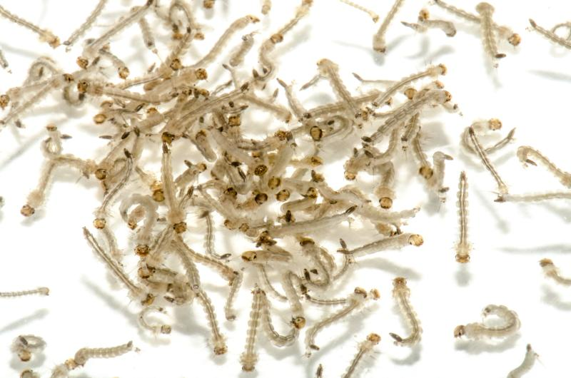 |
não | Figura 1 – Larvas do mosquito Aedes aegypti | Larvas do mosquito Aedes aegypti | Identificar a fase larval do mosquito Aedes aegypti, considerando sua relevância para o estudo de colônias mantidas em insetários e para práticas de controle e biossegurança. | Imagem de várias larvas de mosquito Aedes aegypti agrupadas sobre fundo claro. | (vazio) | Portugal e Méxas, 2016. Disponível em https: //www.fiocruzimagens.fiocruz.br/s/fiocruzimagens/item/120732. |
| 3-3-003 |
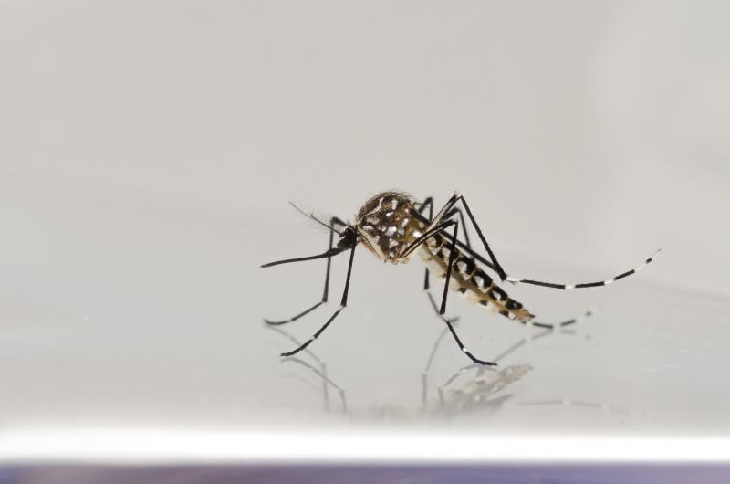 |
não | Figura 2 – Fêmea do mosquito Aedes aegypti | Mosquito Aedes aegypti adulto | Identificar a fase adulta do mosquito Aedes aegypti, considerando sua relevância para o estudo de colônias mantidas em insetários e para práticas de controle, contenção e biossegurança. | Imagem de mosquito Aedes aegypti adulto sobre superfície clara, com pernas alongadas e corpo com marcações claras e escuras. | (vazio) | Portugal e Méxas, 2016. Disponível em https: //www.fiocruzimagens.fiocruz.br/s/fiocruzimagens/item/120707. |
| 3-3-004 | não | (vazio) | Acesso, proteção e boas práticas em insetário NB-3 | Caracterizar medidas de acesso, proteção individual e boas práticas em insetário NB-3, considerando sua função na contenção de riscos e na segurança das atividades realizadas em área contida. | Áudio com ruído. Cristiano informa que, em um insetário NB-3, o acesso à área contida envolve antecâmara com duas portas, cortina de ar, macacão, capuz e dois pares de luvas. Ele destaca que esses elementos compõem as Boas Práticas Laboratoriais. |
Cristiano: Agente, voltei aos registros desta sala mais de uma vez e há algo que ainda não fecha. Quem trabalha em um insetário NB-3 sabe exatamente o que precisa fazer antes de entrar na área contida. A antecâmara com suas duas portas que nunca podem estar abertas ao mesmo tempo, a cortina de ar que entra em ação automaticamente, o macacão com mangas longas e punhos ajustados, o capuz, os dois pares de luvas... Cada um desses elementos existe porque compõe as Boas Práticas Laboratoriais em insetários. E a equipe desta sala era experiente, conhecia cada detalhe desse ambiente. Do ponto de vista do acesso e da proteção, tudo indica que os procedimentos foram seguidos. Mas algo aconteceu aqui dentro. E eu tenho a sensação de que a resposta não está na entrada desta sala, mas no que aconteceu depois que a segunda porta se fechou. Não desista de investigar tudo que está aqui. Cada documento importa. |
EducAção, 2026. | |
| 3-3-005 |
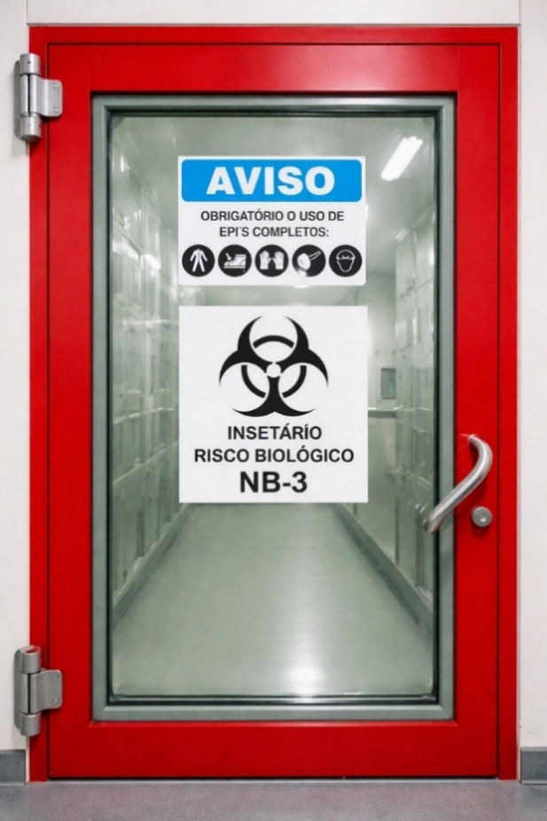 |
não | Figura 3 – Características da porta de acesso a Insetário NB-3 | Porta de acesso a insetário NB-3 | Observar os elementos de sinalização e controle de acesso em insetário NB-3, considerando sua função na orientação sobre risco biológico, uso de EPIs e entrada segura em área contida. | Imagem de porta vermelha com visor de vidro em área laboratorial. No vidro, há avisos de uso obrigatório de EPIs, símbolo de risco biológico e identificação de insetário NB-3. |
Na porta, há um aviso com o texto: “AVISO. OBRIGATÓRIO O USO DE EPIs COMPLETOS.” Abaixo, há ícones de equipamentos de proteção e uma placa com símbolo de risco biológico e o texto: “INSETÁRIO. RISCO BIOLÓGICO. NB-3.” |
Galindo; Morais, 2026. |
| 3-3-006 |

|
não | Figura 4 – Antecâmara (espaço entre duas portas) com porta de visor de vidro, totalmente vedada, indicando risco biológico | Porta com visor e sinalização de risco biológico | Observar a sinalização de risco biológico em porta de acesso a ambiente laboratorial, considerando sua função na comunicação do risco e no controle da entrada em áreas com exigências de biossegurança. | Imagem de porta com visor de vidro em ambiente laboratorial. No visor, há sinalização amarela com símbolo de risco biológico. | A imagem apresenta uma placa amarela com símbolo de risco biológico e o texto: “Risco biológico”. |
Galindo; Morais, 2026. |
| 3-3-007 | não | Figura 5 – Mapa de Contenção Biológica do Insetário NB-3 | Exigências de biossegurança em insetário NB-3 | Caracterizar as exigências de biossegurança em insetário NB-3, considerando controle de acesso, contenção física, estrutura ambiental, manejo dos insetos, climatização, ventilação e segurança operacional. | Infográfico sobre exigências de biossegurança em insetário NB-3, organizado em seis grupos: controle de acesso, antecâmara, estrutura do ambiente, manejo dos insetos, climatização e ventilação, e segurança operacional. |
A imagem apresenta, ao centro, o texto: “Insetário NB-3 — Biossegurança e contenção biológica”. Ao redor do centro, há seis grupos de exigências: Controle de acesso: acesso restrito a pessoas treinadas e autorizadas, incluindo prestadores de serviço; fechadura eletrônica digital com senhas individuais; porta de entrada com visor de vidro, totalmente vedada; sistema de fechamento automático; sinalização clara e visível identificando classificação NB-3. Antecâmara (entre duas portas): antessala com duas portas, uma para o laboratório NB-3 e outra para o ambiente interno; abertura automática voltada para o interior; cortina de ar na parte superior da porta (fluxo descendente) acionado automaticamente; impede a fuga de insetos e reforça a contenção biológica. Estrutura do ambiente: superfícies lisas, de fácil higienização e cor clara; entradas e saídas do sistema de ar-condicionado central com telas de proteção; teto rebaixado (facilita visualização, captura ou eliminação de insetos); mobiliário impermeável e resistente, de fácil limpeza e resistente a desinfetantes e produtos químicos. Manejo dos insetos: criação de larvas e pupas em recipientes devidamente vedados e/ou em estufas do tipo BOD; todas as fases larvais devem ser inativadas com solução de hipoclorito antes do descarte; não deve haver substratos para oviposição nem fontes de alimento fora dos recipientes apropriados. Climatização e ventilação: sistema de climatização e refrigeração operando sob pressão negativa (característica de laboratórios NB-3); uso obrigatório de filtros HEPA; fluxo de ar que impede a passagem ou dispersão de insetos/mosquitos; temperatura ambiente de 26° +/- C 1°C (referência para insetários de criação NB-2). Segurança operacional: iluminação adequada para desempenho das atividades, incluindo sistema de iluminação de emergência; pias com acionamento por pedal na área de saída do laboratório; permitem lavagem das mãos sem uso das mãos. Na parte inferior, há a seção “Síntese das exigências do insetário NB-3”, com os seguintes itens: “Acesso controlado: impede a entrada não autorizada.” “Contenção física: impede a fuga de insetos.” “Ambiente adequado: facilita a higiene e a identificação de vetores.” “Manejo seguro: impede a emergência e a proliferação de insetos.” “Climatização controlada: mantém condições que reforçam a contenção.” “Higienização e segurança: reduzem o risco de exposição e contaminação.” |
Imagem baseada no conteúdo das autoras da aula. | |
| 3-3-008 | não | Figura 6 – Procedimentos com materiais infecciosos sendo realizados em CSB com uso de EPIs adequados | Procedimentos com materiais infecciosos em CSB | Observar o uso da cabine de segurança biológica e dos equipamentos de proteção individual em procedimentos com materiais infecciosos, considerando sua função na contenção de riscos e na segurança das atividades laboratoriais. | Imagem de duas pessoas com equipamentos de proteção individual em ambiente laboratorial. Uma delas manipula materiais com pipeta em cabine de segurança biológica, enquanto a outra observa em pé. | (vazio) | Galindo; Morais, 2026. | |
| 3-3-009 | não | (vazio) | Contagem e manipulação de fêmeas infectadas | Compreender a contagem, a preparação e a manipulação de fêmeas infectadas em insetário, considerando como falhas em detalhes do procedimento podem alterar o risco e comprometer a contenção dos insetos. | Áudio com ruído. Cristiano informa que houve discrepância na contagem de mosquitos antes e depois do procedimento, indicando possível perda de controle durante o trabalho com fêmeas infectadas. |
Cristiano: Agente, sabe o que me intriga nesse caso? A discrepância na contagem. Alguém contou os mosquitos antes do procedimento e contou de novo depois — e os números não bateram. Isso significa que em algum momento, durante o trabalho com aquelas fêmeas infectadas, algo saiu do controle sem que ninguém percebesse na hora. Alimentação sanguínea, triagem, manipulação individual de cada espécime, todos procedimentos que exigem atenção absoluta a detalhes que parecem pequenos, mas não são. E há um detalhe específico, relacionado à forma como essas fêmeas devem ser preparadas antes de serem manuseadas, que quando é deixado de lado muda completamente o risco daquele procedimento. Está tudo nos arquivos que ficaram. Encontre esse detalhe — e você terá o que precisa para o desafio final. |
EducAção, 2026. | |
| 3-3-010 | não | Figura 7 – Gaiola com mosquitos Aedes aegypti | Gaiola com mosquitos Aedes aegypti | Observar a contenção de mosquitos Aedes aegypti em gaiola apropriada, considerando sua função no manejo seguro de colônias e na prevenção de fuga durante atividades em insetário. | Imagem de gaiola transparente com mosquitos Aedes aegypti em seu interior. Na parte frontal, há uma abertura circular com tecido branco preso ao centro. | (vazio) | Portugal e Méxas, 2016. Disponível em https://www.fiocruzimagens.fiocruz.br/s/fiocruzimagens/item/120734. | |
| 3-4-001 | não | (vazio) | Expedição de campo, roedores silvestres e exposição | Investigar riscos associados a atividades de campo com roedores silvestres, considerando possíveis agentes biológicos, formas de exposição, adequação dos equipamentos de proteção e comunicação de ocorrências durante e após a expedição. | Áudio de Evanira. Ela orienta a análise do relatório final de uma expedição de campo, destacando a necessidade de investigar os animais envolvidos, possíveis agentes associados a roedores silvestres, formas de exposição e equipamentos de proteção. |
Evanira: Agente, antes de abrir qualquer documento, olhe para o relatório final com cuidado. Tem uma coisa nele que me incomoda. Sabemos que a equipe voltou do campo, arquivou os registros e encerrou a atividade, mas nada ali parece explicar por que um dos profissionais acabaria em observação dias depois. Talvez alguma proteção não tenha funcionado como deveria. Ou talvez alguém tenha considerado pequeno demais um acontecimento que precisava ter sido comunicado na hora. Eu tenho algumas suspeitas, mas ainda não quero fechar nenhuma. Comece pelos arquivos sobre os animais envolvidos nessa expedição. Não olhe para eles como uma lista de espécies; tente entender que tipo de agente poderia estar associado aos roedores silvestres e que formas de exposição fariam sentido nesse intervalo entre o campo e a febre. Depois, confira os equipamentos. Veja se a proteção prevista combinava com o que a equipe foi fazer. No campo, a segurança depende muito do que foi levado, de como foi usado e da rapidez com que qualquer desvio entra no registro certo. Mas guarda isso: às vezes, o que falta não é um equipamento. É uma informação que alguém deixou de passar adiante. Por isso, fique atento a tudo. |
EducAção, 2026. | |
| 3-4-002 | não | Figura 1 – Exemplos de patógenos zoonóticos em animais | Zoonoses associadas a grupos de animais | Mapear zoonoses associadas a diferentes grupos de animais, considerando agentes relacionados a roedores, aves, morcegos, marsupiais, primatas não humanos, canídeos, felinos e animais de produção em atividades de vigilância, campo ou laboratório. | Infográfico sobre zoonoses, organizado por grupos de animais e exemplos de agentes associados. |
A imagem apresenta, ao centro, o texto “Zoonoses”. Ao redor do centro, há sete grupos de animais com exemplos de agentes associados: Roedores: Arenavírus; hantavírus; Leptospira spp.; Yersinia spp.; Dermatophytes; Hymenolepis nana; Giardia spp.; Sporothrix schenckii. Canídeos e felinos: Bartonella spp.; Campylobacter spp.,; Leptospira spp.; Coxiella burnetii; Brucella spp.; Rickettsia spp.; vírus da raiva; toxoplasma; Giardia spp.; Sporothrix schenckii. Caprino, ovino, bovino: Coxiella burnetii; Leptospira spp.; Salmonella spp.; poxvírus. Primatas não humanos: Campylobacter; Herpesvírus simiae; Mpox; Mycobacterium spp.; Salmonella spp.; Shigella spp.; Yersinia spp.; citomegalovírus; vírus da raiva; vírus da hepatite A; vírus Ebola; vírus Marburg. Marsupiais: Tripanossomatídeos (agentes da doença de Chagas e leishmanioses); Leptospira spp.; Salmonella spp.; Rickettsia spp.; Borrelia spp.; Anaplasma spp.; Schistosoma mansoni; Babesia spp. Morcegos: vírus da raiva; Histoplasma capsulatum; vírus Ebola; vírus Marburg; Leptospira spp. Aves: influenza; Salmonella spp.; Histoplasma capsulatum; Leptospira spp.; Escherichia coli; Cryptococcus spp. |
Adaptado de Lemos, 2014; Schatzmayr; Lemos, 2007; Teixeira; Valle, 2010. | |
| 3-4-003 | não | Riscos presentes nas atividades de campo | Riscos físicos em atividades com animais | Caracterizar riscos físicos associados ao ambiente e ao manejo de animais, considerando fraturas, mordeduras, arranhaduras e acidentes com animais peçonhentos como situações que exigem prevenção e resposta adequada. | Imagem sobre riscos físicos, com ícone branco de pessoa. | A imagem apresenta o título “Riscos físicos” e o texto: “Estão ligados ao ambiente: fraturas, mordeduras, arranhaduras, acidente com animal peçonhento, entre outros.” |
(vazio) | |
| 3-4-004 | não | (vazio) | Riscos químicos em atividades com animais | Compreender os riscos químicos em atividades com animais, considerando a exposição a substâncias nocivas. | Imagem sobre riscos químicos, com ícone branco de frasco quebrado e gotas. | A imagem apresenta o título “Riscos químicos” e o texto: “Estão relacionados à exposição a substância nociva à saúde de forma imediata ou ao longo do tempo: são os desinfetantes e saneantes, anestésicos, produtos para armazenamento de amostras.” |
(vazio) | |
| 3-4-005 | não | (vazio) | Riscos ergonômicos em atividades com animais | Observar os riscos ergonômicos em atividades com animais, considerando esforço físico, jornadas prolongadas e transporte de materiais pesados. | Imagem sobre riscos ergonômicos, com ícone branco de pessoa carregando caixas. | A imagem apresenta o título “Riscos ergonômicos” e o texto: “Referem-se à forma como o trabalho é realizado: esforço físico excessivo, jornadas prolongadas de trabalho, levantamento e transporte de materiais/equipamentos pesados, entre outros.” |
(vazio) | |
| 3-4-006 | não | (vazio) | Riscos ambientais em atividades de campo | Caracterizar riscos ambientais em atividades de campo, considerando exposição ao calor, radiação solar, frio, chuva e umidade como condições que podem afetar a segurança e a saúde da equipe. | Imagem sobre riscos ambientais, com ícone branco de sol, nuvem e chuva. | A imagem apresenta o título “Riscos ambientais” e o texto: “Exposição ao calor e à radiação solar (insolação, desidratação, queimaduras); exposição ao frio, chuva e umidade.” |
(vazio) | |
| 3-4-007 | não | Figura 2 – EPIs utilizados no trabalho de campo | EPIs para trabalho de campo e proteção respiratória | Selecionar equipamentos de proteção adequados ao trabalho de campo, considerando vestimentas, barreiras físicas, proteção respiratória e medidas de prevenção contra riscos biológicos, físicos, químicos e ambientais. | Infográfico com lista de EPIs para trabalho de campo e equipamentos de proteção respiratória, acompanhados por ícones. |
A imagem apresenta o título “EPIs para Trabalho de Campo” e lista os seguintes itens:"
Na parte inferior, há a seção “Proteção Respiratória”, com os seguintes itens:
|
Nunes, 2026. | |
| 3-4-008 | não | (vazio) | Hantavirose, pré-campo e monitoramento pós-campo | Examinar a preparação para atividades de campo com roedores silvestres, considerando conhecimento prévio dos riscos, orientações à equipe, sinais e sintomas pós-exposição e resposta a eventos inesperados após o retorno. | Áudio de pasta sendo aberta. Evanira informa que o exame indicou hantavirose e orienta a retomada dos documentos de pré-campo, destacando a preparação da equipe, o conhecimento dos riscos e a orientação sobre sinais e sintomas. |
Evanira: Você já viu o resultado do exame? A febre tem nome: hantavirose. Isso muda o peso da investigação. O campo já não é só uma possibilidade distante no relatório. A equipe esteve em uma área de captura de roedores silvestres, trabalhou com animais que exigem cuidado rigoroso e retornou como se a atividade tivesse terminado sem intercorrências. Mas agora existe um diagnóstico que obriga a Central a reler cada decisão tomada antes da saída. Eu voltei aos documentos do pré-campo. Eles não parecem improvisados. Também consta que todos deveriam conhecer os riscos envolvidos e estar orientados sobre sinais e sintomas que poderiam surgir depois do retorno. Esse ponto importa muito agora, porque, em trabalhos desse tipo, uma febre nas semanas seguintes não pode ser tratada como um episódio isolado. Ainda assim, alguma coisa não acompanha o diagnóstico. Se a preparação foi adequada, se os riscos eram conhecidos e se o monitoramento pós-campo estava previsto, por que a Central só conseguiu reagir quando o caso já estava em andamento? Não procure a resposta apenas no resultado do exame. Procure no modo como essa expedição foi preparada para lidar com o que poderia acontecer fora do roteiro. O pré-campo talvez não diga ainda o que houve, mas pode mostrar o que todos deveriam saber antes que qualquer animal fosse retirado da armadilha. |
EducAção, 2026. | |
| 3-4-009 | não | Figura 3 – Local de montagem de laboratório de campo | Local de montagem de laboratório de campo | Examinar a organização do local de montagem de laboratório de campo, considerando infraestrutura, disposição dos materiais e condições necessárias para a realização segura das atividades. | Imagem de espaço amplo e coberto, com paredes claras, teto aparente e materiais organizados sobre mesas e bancadas para montagem de laboratório de campo. | (vazio) | Lavocat, 2026. | |
| 3-4-010 | não | Figura 4 – Exemplo de fluxo do trabalho de campo com roedores silvestres | Fluxo da mesa em laboratório de campo | Interpretar o fluxo de trabalho em laboratório de campo, considerando a sequência de contenção, anestesia, coleta, descarte, armazenamento, descontaminação e desparamentação como etapas necessárias para reduzir riscos durante a manipulação de animais. | Fluxograma de atividades em laboratório de campo, com etapas de manipulação de animais, coleta de amostras, descarte, descontaminação e desparamentação. |
A imagem apresenta o título “Fluxo da mesa”. O fluxo inicia em “Armadilhas com animais” e segue para “Lavagem de armadilhas com desinfetante”. A partir das armadilhas, há uma indicação de “desinfetante” que conduz ao início do fluxo da mesa.
|
Lavocat, 2026. | |
| 3-4-011 | não | (vazio) | Registros de expedições e acidentes em campo | Investigar registros de expedições de campo com animais silvestres, considerando ambiente, equipamentos, proximidade com os animais, decisões tomadas durante a atividade e tempo entre exposição e manifestação de sinais relacionados ao risco biológico. | Áudio com som de pasta sendo aberta. Evanira orienta a análise de registros e fotografias de expedições com animais silvestres, chamando atenção para o ambiente, os equipamentos e a proximidade com os animais. |
Evanira: Você está cada vez mais perto de pegar sua credencial definitiva. Mas agora vamos nos concentrar em sair primeiro desta sala. O que ficou nos arquivos a seguir são registros reais de expedições como a que está investigando, fotografias de profissionais trabalhando em campo com animais silvestres. Olhe com atenção para o que cada imagem mostra — o ambiente, os equipamentos, a proximidade com os animais. Enquanto faz isso, pense no que este caso tem de diferente. Porque há um momento específico durante o trabalho de campo, um momento que qualquer um desses profissionais reconheceria, em que uma decisão foi tomada de forma errada. Uma decisão humana, daquelas que a gente toma achando que não vai fazer diferença. Há também um documento que mostra quanto tempo pode passar entre um acidente no campo e os primeiros sinais de que algo deu errado. Esse tempo importa. Muito. Quando terminar de investigar tudo isso, você vai ter o que precisa para o desafio final. |
EducAção, 2026. | |
| 3-4-012 | não | Figura 5 – Registro de atuação profissional durante a realização do trabalho de campo com roedores silvestres | Atuação profissional em campo com roedores silvestres | Observar condições de atuação em campo com roedores silvestres, considerando o uso de proteção individual, o ambiente de vegetação e a proximidade com possíveis áreas de captura. | Imagem de pessoa usando vestimenta de proteção amarela, botas e capacete, agachada em área com vegetação. | (vazio) | Lavocat, 2026. | |
| 3-4-013 | não | (vazio) | Descontaminação de luvas em trabalho de campo | Observar a descontaminação de luvas como etapa de segurança em atividades de campo, considerando a redução de riscos durante o manejo de materiais, animais ou amostras potencialmente contaminadas. | Imagem de duas pessoas com vestimenta de proteção, máscaras respiratórias e luvas. Uma delas segura um recipiente enquanto a outra mantém as mãos posicionadas para descontaminação das luvas. | (vazio) | (vazio) | |
| 3-4-014 | não | (vazio) | Laboratório de campo com roedores silvestres | Compreender a organização do laboratório de campo em investigação com roedores silvestres, considerando o uso de equipamentos de proteção, a disposição dos materiais e as condições de trabalho necessárias para reduzir riscos biológicos. | Imagem de grupo de pessoas com vestimentas de proteção brancas, toucas, máscaras e luvas trabalhando em mesa com materiais de laboratório em ambiente de campo coberto. | (vazio) | (vazio) | |
| 3-4-015 | não | Figura 6 – Investigação ecoepidemiológica de febre amarela em primatas não humanos | Atividade de campo com materiais de coleta | Observar o uso de equipamentos de proteção e a organização de materiais de coleta em atividade de campo, considerando as condições necessárias para reduzir riscos durante o manejo de amostras ou animais silvestres. | Imagem de duas pessoas usando jalecos descartáveis, máscaras, luvas e proteção ocular em área externa com vegetação. Elas estão ao lado de uma mesa com materiais de coleta e recipientes laboratoriais. | (vazio) | Passos, 2026. | |
| 3-4-016 | não | Figura 7 – Investigação ecoepidemiológica de febre do Nilo ocidental em aves | Investigação ecoepidemiológica de febre do Nilo ocidental em aves | Analisar condições de trabalho em investigação ecoepidemiológica com aves, considerando o uso de equipamentos de proteção, o manejo do animal e a organização dos materiais de coleta para reduzir riscos durante a atividade de campo. | Imagem de pessoas usando equipamentos de proteção com uma ave sobre uma mesa. Ao redor, há materiais de coleta, recipiente e área externa com vegetação. | (vazio) | Passos, 2026. | |
| 3-4-017 | não | Figura 8 – Investigação ecoepidemiológica de febre do Nilo ocidental em equídeos | Investigação ecoepidemiológica de febre do Nilo ocidental em equídeos | Examinar condições de trabalho em investigação ecoepidemiológica com equídeos. | Imagem de pessoas em área externa durante atividade de campo com um equídeo. Algumas usam vestimentas de proteção, luvas e máscaras, enquanto uma delas se aproxima do animal. | (vazio) | Passos, 2026. | |
| 3-4-018 | não | Figura 9 – Estudo de avaliação de teste rápido sorológico para peste em cães | Teste rápido sorológico para peste em cães | Observar a realização de procedimento em cão durante investigação sorológica em campo, considerando o manejo do animal, o uso de proteção individual e os cuidados necessários. | Imagem de pessoa com luvas azuis e chapéu realizando procedimento em um cão deitado no chão. Ao lado, uma criança segura o animal durante a atividade. | (vazio) | Nunes, 2026. | |
| 3-4-019 | não | Figura 10 – Investigação ecoepidemiológica de febre maculosa | Investigação ecoepidemiológica de febre maculosa | Observar práticas de organização e uso de equipamentos de proteção em investigação ecoepidemiológica de febre maculosa. | Imagem de pessoas usando jalecos descartáveis e luvas durante atividade de campo em área externa. Em primeiro plano, duas pessoas manuseiam materiais próximos a uma maleta aberta. | (vazio) | Faria, 2026. | |
| 3-4-020 | não | Figura 11 – Coleta de escorpiões na vigilância de animais peçonhentos | Coleta de escorpiões na vigilância de animais peçonhentos | Compreender as condições de coleta de escorpiões em ações de vigilância de animais peçonhentos, considerando o ambiente, os materiais manuseados e os cuidados necessários para reduzir riscos físicos, biológicos e ambientais durante a atividade. | Imagem de pessoa em área externa realizando coleta em pilha de materiais de construção, com telhas e tijolos. | (vazio) | Leal, 2026. | |
| 3-5-001 | não | (vazio) | Biobanco, rastreabilidade e história das amostras | Compreender a rastreabilidade em biobancos, considerando a origem, o percurso, o armazenamento e a documentação das amostras como elementos necessários para preservar seu valor científico e sua segurança. | Áudio com ruído curto. Cristiano informa que as amostras encontradas pertencem a um biobanco e destaca que seu valor científico depende da rastreabilidade, da origem, do percurso e das condições de armazenamento. |
Cristiano: Agente, olha o quão longe você chegou! Esta é a penúltima sala e sei que esse áudio vai te encontrar no momento certo. A ansiedade pela conclusão deve estar grande, imagino, mas preciso que você fique focado um pouco mais, porque tem algo nesta sala que não me sai da cabeça. Aquelas amostras que a auditoria encontrou não são frascos quaisquer. Cada uma delas veio de uma pessoa real, num momento real da vida dela, e carrega informações que podem alimentar pesquisas por décadas. É esse o valor de um biobanco, e é também o que torna tudo isso tão grave. Porque uma amostra só serve à ciência enquanto for possível saber de onde ela veio, por onde passou e em que condições foi guardada. No instante em que essa história se perde, a amostra continua ali, intacta, mas deixa de valer o que valia. Comece entendendo o que é esse lugar e por que cada amostra precisa de uma história que se possa contar do início ao fim. Porque, de algum jeito, foi exatamente essa história que se apagou aqui dentro. |
EducAção, 2026. | |
| 3-5-002 | não | (vazio) | Identificação de perigos em biobanco | Localizar a identificação de perigos como etapa inicial do gerenciamento de risco em biobanco. | Ícone de lupa com marcador numérico 1. | (vazio) | Sertório, 2026. | |
| 3-5-003 | não | (vazio) | Avaliação de riscos em biobanco | Examinar a avaliação de riscos como etapa do gerenciamento em biobanco, considerando análises qualitativas e quantitativas para orientar decisões sobre controle, armazenamento e uso seguro das amostras. | Ícone de alerta com marcador numérico 2. | (vazio) | (vazio) | |
| 3-5-004 | não | (vazio) | Medidas de controle de riscos em biobanco | Entender as medidas de controle como etapa do gerenciamento de risco em biobanco, considerando ações voltadas à redução ou eliminação de riscos que possam comprometer amostras, processos e pessoas envolvidas. | Ícone de confirmação com marcador numérico 3. | (vazio) | (vazio) | |
| 3-5-005 | não | (vazio) | Monitoramento contínuo em biobanco | Refletir o monitoramento contínuo como etapa do gerenciamento de risco em biobanco, considerando o acompanhamento permanente das condições de segurança das atividades, amostras e processos. | Ícone de escudo com marcador numérico 4. | (vazio) | (vazio) | |
| 3-5-006 | não | (vazio) | Coleta de amostras biológicas | Situar a coleta de amostras biológicas como etapa inicial do fluxo de trabalho em biobanco, considerando a obtenção adequada dos materiais que serão processados, armazenados e utilizados em pesquisa. | Ícone de seringa com marcador numérico 1. | (vazio) | Sertório, 2026. | |
| 3-5-007 | não | (vazio) | Processamento de amostras biológicas | Situar o processamento como etapa do fluxo de trabalho em biobanco, considerando o tratamento e a preparação das amostras biológicas para armazenamento, análise e uso em pesquisa. | Ícone de tubos de ensaio com marcador numérico 2. | (vazio) | (vazio) | |
| 3-5-008 | não | (vazio) | Armazenamento de amostras biológicas | Situar o armazenamento como etapa do fluxo de trabalho em biobanco, considerando a conservação segura das amostras biológicas em condições adequadas para sua preservação e uso em pesquisa. | Ícone de equipamento de armazenamento com marcador numérico 3. | (vazio) | (vazio) | |
| 3-5-009 | não | (vazio) | Uso de amostras biológicas em pesquisa | Identificar o uso em pesquisa como etapa do fluxo de trabalho em biobanco, considerando a utilização das amostras biológicas em estudos científicos após coleta, processamento e armazenamento adequados. | Ícone de microscópio com marcador numérico 4. | (vazio) | (vazio) | |
| 3-5-011 | não | (vazio) | Norma, documentação e treinamento em biobanco | Compreender os elementos que sustentam a gestão de um biobanco, considerando padronização, controle de acesso, monitoramento, rastreabilidade, documentação e preparo das equipes para manter a segurança e a integridade das amostras. | Áudio com ruído curto. Cristiano informa que o funcionamento de um biobanco depende de norma internacional, padronização de processos, controle de acesso, monitoramento das condições de armazenamento, rastreabilidade das amostras e documentação. |
Cristiano: Agente, estive revendo o que reuni até aqui e comecei a entender melhor o que pode ter acontecido nesta sala. A questão é que um biobanco não funciona no improviso. Existe uma norma internacional, reconhecida e adotada aqui no Brasil, que define exatamente como tudo deveria operar, da padronização dos processos ao controle de quem acessa as amostras, do monitoramento das condições de armazenamento até a exigência de que cada frasco possa ser rastreado do início ao fim. No papel, é um sistema pensado para que nada se perca. Mas um sistema desses se apoia em coisas muito concretas, que você vai encontrar logo adiante, e duas delas não me saem da cabeça. A documentação, que é o que transforma cada movimentação numa marca permanente, e o treinamento, que é o que faz uma equipe inteira manter esse rigor mesmo quando o trabalho aperta. Investigue com cuidado o que sustenta esse sistema. Olhe principalmente para o que se exige da documentação e do preparo das equipes, porque desconfio que foi exatamente aí que essa história começou a ruir. |
EducAção, 2026. | |
| 3-5-012 | não | Figura 1 – Integração entre ética, biossegurança e bioproteção | Integração entre ética, biossegurança e bioproteção | Integrar ética, biossegurança e bioproteção como dimensões complementares da atuação em biobanco, considerando responsabilidade, contenção e práticas seguras na preservação das amostras, dos processos e das pessoas envolvidas. | Conjunto de três círculos sobrepostos, representando bioproteção, ética e biossegurança na atuação do biobanco. |
No conjunto, há três círculos principais:
Nas áreas de interseção, aparecem os termos:
Ao centro, na interseção entre os três círculos, aparece: “Atuação do biobanco”. |
Sertório, 2026. | |
| 3-5-013 | não | (vazio) | Pandemia, fragilidades e registros em biobanco | Analisar como situações de emergência sanitária podem evidenciar fragilidades preexistentes na gestão de biobancos, considerando processos institucionais, treinamento das equipes, registros e rastreabilidade das amostras. | Áudio com som ambiente. Cristiano afirma que a pandemia não foi a causa direta da falha no biobanco, mas evidenciou fragilidades que já existiam, como a ausência de processos sólidos, registros atualizados e equipes preparadas. |
Cristiano: Agente, acho que agora as peças finalmente se encaixam, e preciso que você acompanhe meu raciocínio até o fim. Quando a pandemia chegou, biobancos no mundo inteiro foram inundados de amostras de alto risco, todas chegando ao mesmo tempo e exigindo resposta imediata. As instituições que já tinham processos firmes, equipes treinadas e registros em dia atravessaram aquilo com dificuldade, mas atravessaram. Já as que trabalhavam no limite, em que o rigor dependia mais da boa vontade de cada um do que de um sistema sólido, foram engolidas pelo volume. E foi aí que entendi: não foi a pandemia que quebrou esse biobanco, ela só revelou, de uma vez, uma fragilidade que já existia muito antes. Os registros que ninguém teve tempo de fazer, o histórico que se desfez aos poucos enquanto todos corriam para dar conta. Aquele lote esquecido no freezer é um retrato final que não conta a causa do problema. |
EducAção, 2026. | |
| 3-6-001 | não | (vazio) | Fronteiras, rotas e entrada de agentes biológicos | Analisar a entrada e circulação de agentes biológicos antes da contenção laboratorial, considerando fronteiras, rotas, instituições, animais, pessoas e deslocamentos como elementos que ampliam a compreensão dos riscos em biossegurança. | Áudio com som ambiente. Cristiano retoma os casos investigados e destaca que os agentes biológicos não surgiram dentro dos ambientes laboratoriais, mas chegaram de fora, por meio de pessoas, animais, instituições parceiras, rotas, aeroportos e fronteiras. |
Cristiano: Agente, estive relendo os registros de tudo o que foi investigado até aqui, e há algo que só ficou claro quando olhei para o percurso inteiro de uma vez. Cada ambiente que você investigou existia para conter algo. O que nenhum deles mostrava era de onde esse algo vinha. O Mycobacterium tuberculosis que quase foi processado num laboratório sem contenção adequada chegou de alguém. Os roedores que comprometeram a colônia do biotério vieram de uma instituição parceira. O hantavírus que infectou o profissional no campo estava num animal silvestre que ninguém havia rastreado. Esses agentes não surgiram dentro das salas. Eles chegaram de fora, atravessando distâncias, instituições e fronteiras antes que qualquer protocolo pudesse contê-los. O que você vai encontrar nesta sala é exatamente esse lado de fora. As fronteiras, os aeroportos, as rotas por onde esses agentes chegam antes que qualquer barreira laboratorial possa detê-los. Leia todos os documentos restantes com atenção. O que vem a seguir dá sentido a tudo o que ficou para trás. |
EducAção, 2026. | |
| 3-6-002 | não | Figura 1 – Painel de Indicadores do Transporte Aéreo 2025 | Mercado internacional e demanda de transporte aéreo | Interpretar indicadores do mercado internacional de transporte aéreo, considerando participação por companhia, variação da demanda e da oferta, volume de passageiros, quantidade de voos e relação de passageiros por habitantes. | Gráfico sobre mercado internacional de transporte aéreo, com participação por companhia e indicadores de demanda, oferta, passageiros transportados, quantidade de voos e passageiros por habitante. |
O infográfico apresenta o título “Mercado Internacional”. Há um gráfico com o título “Market share demanda (RPK)” e os seguintes dados:
Abaixo aparecem indicadores com setas:
|
Anac, 2025. | |
| 3-6-003 | não | Regulamento Sanitário Internacional | Regulamento Sanitário Internacional (RSI) | Compreender o papel do Regulamento Sanitário Internacional (RSI) na articulação entre países e setores, considerando sua função na proteção contra a disseminação de doenças e outros riscos à saúde. | Card informativo sobre o Regulamento Sanitário Internacional (RSI). |
A imagem apresenta o título “Regulamento Sanitário Internacional (RSI)”. No corpo do card, aparece o texto: “Os RSI são juridicamente vinculantes e ajudam os países a trabalharem juntos para proteger vidas ameaçadas pela disseminação de doenças e outros riscos à saúde, incluindo perigos de radiação e químicos.” Na faixa inferior, há um ícone de grupo de pessoas acompanhado do texto: “Até que todos os setores estejam engajados com os RSI, nenhum país estará totalmente preparado.” |
Adaptado de WHO, 2026. | |
| 3-6-004 | não | (vazio) | Segurança sanitária global fortalecida pelo RSI | Identificar o papel do RSI no fortalecimento da segurança sanitária global, considerando a criação de sistemas de alerta precoce para doenças e outros eventos que ameacem a saúde humana e os meios de subsistência. | Card informativo sobre segurança sanitária global. Ao fundo, há uma ilustração em baixa opacidade de um globo acompanhado de um símbolo de alerta. |
A imagem apresenta o título “1 – A segurança sanitária global é fortalecida”. No corpo do card, aparece o texto: “Os RSI estabelecem um sistema de alerta precoce não apenas para doenças, mas para qualquer evento que ameace a saúde humana e os meios de subsistência.” |
(vazio) | |
| 3-6-005 | não | (vazio) | Viagens e comércio mais seguros pelo RSI | Relacionar o RSI à segurança de viagens e comércio internacional, considerando o fortalecimento das capacidades dos países para controlar doenças em portos, aeroportos e passagens de fronteira terrestres. | Card informativo sobre viagens e comércio mais seguros. Ao fundo, há uma ilustração em baixa opacidade de um avião. |
A imagem apresenta o título “2 – Viagens e comércio tornam-se mais seguros”. No corpo do card, aparece o texto: “Os RSI fortalecem as capacidades dos países para controlar doenças que cruzam fronteiras em portos, aeroportos e passagens de fronteira terrestres.” |
(vazio) | |
| 3-6-006 | não | (vazio) | Ameaças diárias mantidas sob controle pelo RSI | Identificar o papel do RSI no controle de ameaças diárias à saúde, considerando a detecção, avaliação, resposta e comunicação rápida entre países. | Card informativo sobre controle de ameaças diárias. Ao fundo, há uma ilustração em baixa opacidade de um cubo com representação de agente biológico. |
A imagem apresenta o título “3 – As ameaças diárias são mantidas sob controle”. No corpo do card, aparece o texto: “Os RSI orientam os países a detectar, avaliar e responder a ameaças e a informar rapidamente a outros países.” |
(vazio) | |
| 3-6-007 | não | (vazio) | Ameaças à saúde não têm fronteiras | Reconhecer o papel do RSI na coordenação e no compartilhamento de informações entre setores, considerando a preparação para emergências e ameaças à saúde que ultrapassam fronteiras. | Card informativo sobre ameaças à saúde sem fronteiras. Ao fundo, há uma ilustração em baixa opacidade de um documento com símbolo de alerta. |
A imagem apresenta o título “4 – Ameaças à saúde não têm fronteiras”. No corpo do card, aparece o texto: “Os RSI promovem a coordenação e o compartilhamento de informações entre todos os setores para se prepararem para possíveis emergências.” |
(vazio) | |
| 3-6-008 | não | (vazio) | Todos os setores se beneficiam com o RSI | Relacionar o RSI à preparação integrada dos diferentes setores, considerando a coordenação, o compartilhamento de informações e a redução de impactos sobre comércio, turismo e economia. | Card informativo sobre benefícios do RSI para diferentes setores. |
A imagem apresenta o título “5 – Todos os setores se beneficiam”. No corpo do card, aparece o texto: “Os RSI preparam todos os setores para possíveis emergências por meio da coordenação e do compartilhamento de informações.” Na faixa inferior, há um texto: “Os RSI promovem o comércio e o turismo nos países e evitam danos econômicos.” |
(vazio) | |
| 3-6-009 | não | (vazio) | Circulação de doenças e vigilância em fronteiras | Analisar como a circulação de agentes infecciosos pode anteceder sua detecção pelos sistemas de vigilância, considerando mobilidade, fronteiras e preparação para doenças emergentes e reemergentes. | Áudio com ruído. Evanira destaca que agentes infecciosos podem circular antes da confirmação diagnóstica e atravessar fronteiras por meio da mobilidade de pessoas, citando o SARS-CoV-2 e outras doenças emergentes e reemergentes. |
Evanira: Agente, preciso que você pense numa coisa. O SARS-CoV-2 que você encontrou naquele laboratório NB-3 circulava no Brasil semanas antes de qualquer laboratório saber que ele existia aqui. Entrou pelos aeroportos em passageiros assintomáticos que não sabiam o que carregavam e se instalou nas capitais antes de se espalhar para o interior do país. Quando os primeiros casos foram confirmados, a transmissão comunitária já ocorria há algum tempo, invisível para qualquer sistema de vigilância. E não foi a única vez que isso aconteceu. Doenças emergentes e reemergentes, a exemplo de hantavirose, ebola, sarampo, poliomielite, representam um desafio à saúde pública internacional, pois uma barreira geográfica pode deixar de ser suficiente para conter o que vem do outro lado da fronteira. É sobre esse momento que você vai ler agora. Sobre o que acontece quando a doença chega antes do diagnóstico, e sobre o que o Brasil tem feito, e ainda precisa fazer, para estar preparado quando isso acontecer de novo. |
EducAção, 2026. | |
| 3-6-010 | não | Figura 2 – Extensão global de doenças infecciosas emergentes, reemergentes e “deliberadamente emergentes” de 1981 até 2020 | Extensão global de doenças infecciosas emergentes e reemergentes | Observar a distribuição global de doenças infecciosas emergentes e reemergentes, considerando suas categorias, regiões de ocorrência e impactos para a vigilância em saúde internacional. | Mapa-múndi com marcações e linhas que indicam doenças infecciosas recentes, reemergentes ou em ressurgimento e deliberadamente emergentes. |
Na parte superior, há uma legenda com três categorias:
As doenças e agentes aparecem distribuídos pelo mapa por meio de pontos coloridos e linhas que conectam os nomes às regiões correspondentes.
|
Morens e Fauci, 2020. | |
| 3-6-011 | não | Figura 3 – Transmissão de covid-19 | Transmissão oculta de casos de Covid-19 no Brasil | Interpretar o processo de transmissão oculta da Covid-19 no início da pandemia no Brasil, considerando a entrada de casos importados, a circulação silenciosa do vírus, a detecção tardia e seus impactos para a vigilância e a resposta em saúde pública. | Infográfico sobre a transmissão oculta de casos de Covid-19 no início da pandemia no Brasil, com etapas de importação, transmissão oculta, detecção tardia, consequências e linha do tempo. |
A imagem apresenta o título “Transmissão oculta de casos de Covid-19 no início da pandemia — Brasil, 2020”. Abaixo do título, aparece o texto: “Antes da detecção dos primeiros casos, o SARS-CoV-2 já circulava silenciosamente, por meio de pessoas infectadas assintomáticas ou com sintomas leves.”
Linha do tempo da transmissão oculta A linha do tempo apresenta o eixo vertical “Número de casos” e o eixo horizontal “Tempo”. As etapas indicadas são:
|
Elaborado a partir do conteúdo do autor da aula. | |
| 3-6-012 | não | (vazio) | Biossegurança em fronteiras, portos e aeroportos | Analisar a biossegurança em escala internacional, considerando aeroportos, fronteiras, circulação de agentes biológicos e ações de vigilância necessárias para prevenir, detectar e responder a riscos antes que eles alcancem os ambientes laboratoriais. | Áudio com ruído. Evanira retoma os ambientes investigados ao longo da narrativa e destaca que os agentes biológicos encontrados em laboratórios, biotérios, insetários, campos e biobancos chegam de diferentes lugares. |
Evanira: Agente, quando o Cristiano e eu deixamos essas gravações, não tínhamos certeza de que você chegaria até aqui, mas tínhamos esperança, e aqui você está. Isso importa mais do que qualquer credencial. Você atravessou laboratórios de boas práticas e áreas de alta contenção, biotérios e insetários, campos abertos e biobancos. Em cada um desses lugares, havia um risco real, um protocolo que existia por uma razão, e uma falha que mostrou o que acontece quando a biossegurança cede. O que nenhuma daquelas salas mostrou sozinha é que os agentes que você encontrou lá dentro vieram de algum lugar — e continuam vindo. O SARS-CoV-2 circulou silenciosamente no Brasil por semanas antes de qualquer laboratório saber que ele estava aqui, entrou pelos aeroportos, invisível, antes de qualquer barreira laboratorial precisar agir. O hantavírus que encontramos no campo existe em animais silvestres espalhados por um território de dimensões continentais e segue como uma das ameaças que rondam nossas fronteiras hoje, ao lado do sarampo, da pólio e do ebola. O que você vai encontrar agora são as ações concretas que existem para que a biossegurança funcione nessa escala: nos portos, nos aeroportos, nos pontos de entrada de um país que tem quinze mil quilômetros de fronteira com dez nações diferentes. Leia com atenção. Depois disso, só falta uma coisa e você sabe o que é. E eu espero te encontrar já na saída da Central. |
EducAção, 2026. | |
| 3-6-013 | não | Figura 4 – Medidas de saúde na chegada ou saída de viajantes e mercadorias de acordo com o RSI | Medidas de saúde para viajantes e mercadorias | Identificar medidas de saúde aplicáveis à chegada ou saída de viajantes e mercadorias, considerando informações de destino e itinerário, exame médico não invasivo e inspeção de bagagens, cargas e meios de transporte. | Infográfico sobre medidas de saúde na chegada ou saída de viajantes e mercadorias, com orientações sobre destino, itinerário, exame médico e inspeção de cargas. |
A imagem apresenta o título “Medidas de saúde na chegada ou saída de viajantes e mercadorias”. Na seção “Viajantes”, aparecem três medidas:
Na seção “Mercadorias”, aparece a medida:
|
Adaptado de Anvisa, 2009. |